第一次線跑｜分類題庫
1 · 背部
頸背與枕下交界
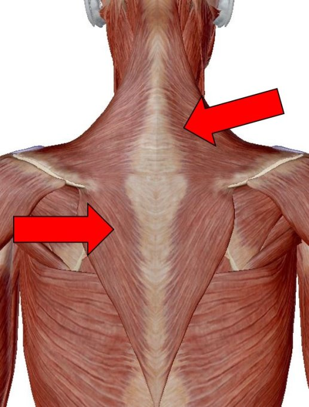
正解
[Back]2015 Lab1 VB
trapezius
出現紀錄（7 次）
- 第 1 次 · Q38 / 填充題 · [Back]2015 Lab1 VB
- 第 11 次 · Q17 / 填充題 · [Back]2015 Lab1 VB
- 第 13 次 · Q18 / 填充題 · [Back]2015 Lab1 VB
- 第 26 次 · Q19 / 填充題 · [Back]2015 Lab1 VB
- 第 31 次 · Q20 / 填充題 · [Back]2015 Lab1 VB
- 第 52 次 · Q19 / 填充題 · [Back]2015 Lab1 VB
- 第 70 次 · Q19 / 填充題 · [Back]2015 Lab1 VB
2 · 背部
頸背與枕下交界
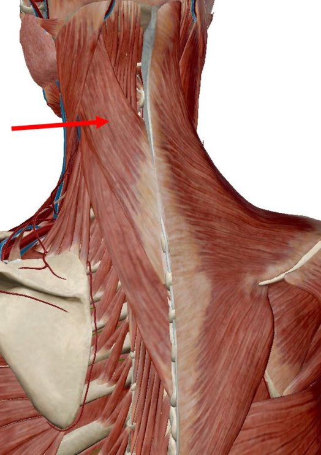
正解
[Back]2015 Lab1 VB
splenius capitis
出現紀錄（15 次）
- 第 7 次 · Q18 / 填充題 · [Back]2015 Lab1 VB
- 第 11 次 · Q20 / 填充題 · [Back]2015 Lab1 VB
- 第 20 次 · Q20 / 填充題 · [Back]2015 Lab1 VB
- 第 23 次 · Q20 / 填充題 · [Back]2015 Lab1 VB
- 第 26 次 · Q20 / 填充題 · [Back]2015 Lab1 VB
- 第 30 次 · Q19 / 填充題 · [Back]2015 Lab1 VB
- 第 37 次 · Q19 / 填充題 · [Back]2015 Lab1 VB
- 第 43 次 · Q20 / 填充題 · [Back]2015 Lab1 VB
- 第 49 次 · Q20 / 填充題 · [Back]2015 Lab1 VB
- 第 59 次 · Q19 / 填充題 · [Back]2015 Lab1 VB
- 第 62 次 · Q20 / 填充題 · [Back]2015 Lab1 VB
- 第 64 次 · Q19 / 填充題 · [Back]2015 Lab1 VB
- 第 71 次 · Q20 / 填充題 · [Back]2015 Lab1 VB
- 第 77 次 · Q19 / 填充題 · [Back]2015 Lab1 VB
- 第 84 次 · Q20 / 填充題 · [Back]2015 Lab1 VB
3 · 背部
頸背與枕下交界
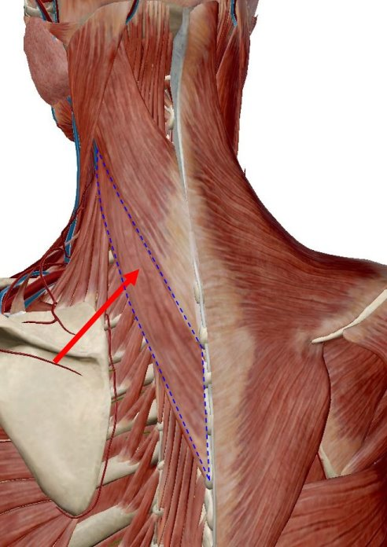
正解
[Back]2015 Lab1 VB
splenius cervicis
出現紀錄（11 次）
- 第 4 次 · Q18 / 填充題 · [Back]2015 Lab1 VB
- 第 12 次 · Q19 / 填充題 · [Back]2015 Lab1 VB
- 第 14 次 · Q19 / 填充題 · [Back]2015 Lab1 VB
- 第 24 次 · Q19 / 填充題 · [Back]2015 Lab1 VB
- 第 34 次 · Q20 / 填充題 · [Back]2015 Lab1 VB
- 第 49 次 · Q19 / 填充題 · [Back]2015 Lab1 VB
- 第 58 次 · Q20 / 填充題 · [Back]2015 Lab1 VB
- 第 63 次 · Q19 / 填充題 · [Back]2015 Lab1 VB
- 第 65 次 · Q19 / 填充題 · [Back]2015 Lab1 VB
- 第 66 次 · Q19 / 填充題 · [Back]2015 Lab1 VB
- 第 79 次 · Q20 / 填充題 · [Back]2015 Lab1 VB
4 · 背部
頸背與枕下交界
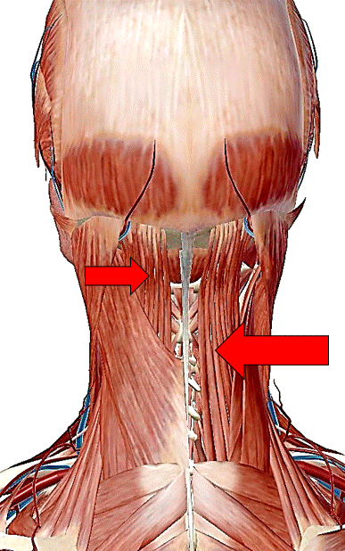
正解
[Back]2015 Lab1 VB
semispinalis capitis
出現紀錄（5 次）
- 第 50 次 · Q20 / 填充題 · [Back]2015 Lab1 VB
- 第 69 次 · Q20 / 填充題 · [Back]2015 Lab1 VB
- 第 77 次 · Q17 / 填充題 · [Back]2015 Lab1 VB
- 第 84 次 · Q19 / 填充題 · [Back]2015 Lab1 VB
- 第 98 次 · Q19 / 填充題 · [Back]2015 Lab1 VB
5 · 背部
上胸背與深背肌
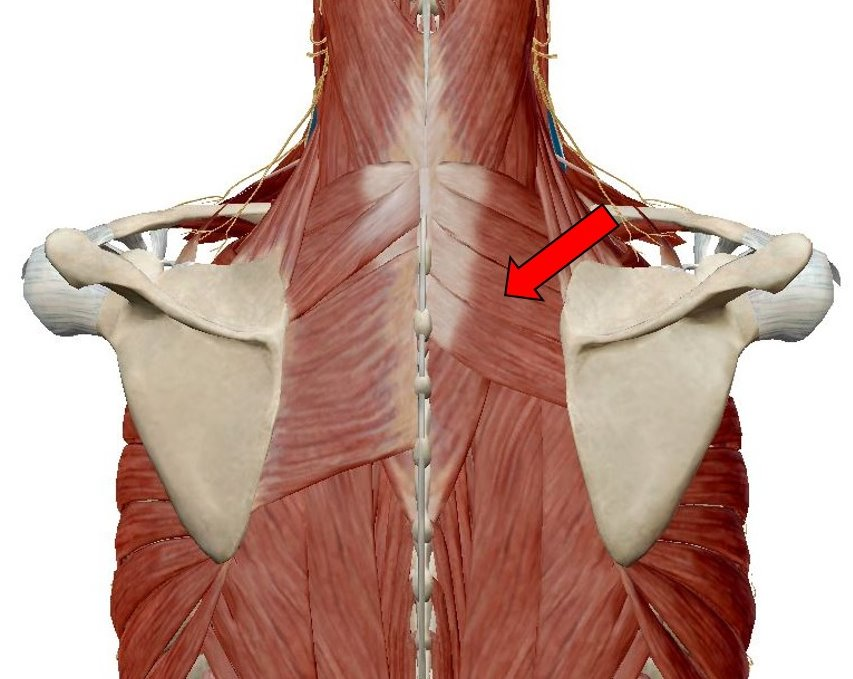
正解
[Back]2015 Lab1 VB
serratus posterior superior
出現紀錄（14 次）
- 第 5 次 · Q19 / 填充題 · [Back]2015 Lab1 VB
- 第 9 次 · Q20 / 填充題 · [Back]2015 Lab1 VB
- 第 11 次 · Q18 / 填充題 · [Back]2015 Lab1 VB
- 第 21 次 · Q20 / 填充題 · [Back]2015 Lab1 VB
- 第 25 次 · Q19 / 填充題 · [Back]2015 Lab1 VB
- 第 32 次 · Q17 / 填充題 · [Back]2015 Lab1 VB
- 第 45 次 · Q19 / 填充題 · [Back]2015 Lab1 VB
- 第 47 次 · Q18 / 填充題 · [Back]2015 Lab1 VB
- 第 50 次 · Q18 / 填充題 · [Back]2015 Lab1 VB
- 第 52 次 · Q20 / 填充題 · [Back]2015 Lab1 VB
- 第 56 次 · Q20 / 填充題 · [Back]2015 Lab1 VB
- 第 62 次 · Q18 / 填充題 · [Back]2015 Lab1 VB
- 第 97 次 · Q20 / 填充題 · [Back]2015 Lab1 VB
- 第 98 次 · Q18 / 填充題 · [Back]2015 Lab1 VB
6 · 背部
上胸背與深背肌
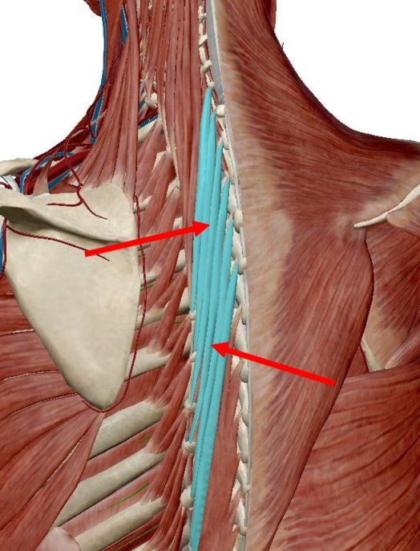
正解
[Back]2015 Lab1 VB
semispinalis thoracis
出現紀錄（10 次）
- 第 6 次 · Q19 / 填充題 · [Back]2015 Lab1 VB
- 第 18 次 · Q19 / 填充題 · [Back]2015 Lab1 VB
- 第 32 次 · Q18 / 填充題 · [Back]2015 Lab1 VB
- 第 53 次 · Q18 / 填充題 · [Back]2015 Lab1 VB
- 第 60 次 · Q19 / 填充題 · [Back]2015 Lab1 VB
- 第 61 次 · Q17 / 填充題 · [Back]2015 Lab1 VB
- 第 62 次 · Q19 / 填充題 · [Back]2015 Lab1 VB
- 第 68 次 · Q19 / 填充題 · [Back]2015 Lab1 VB
- 第 72 次 · Q19 / 填充題 · [Back]2015 Lab1 VB
- 第 90 次 · Q20 / 填充題 · [Back]2015 Lab1 VB
7 · 背部
上胸背與深背肌
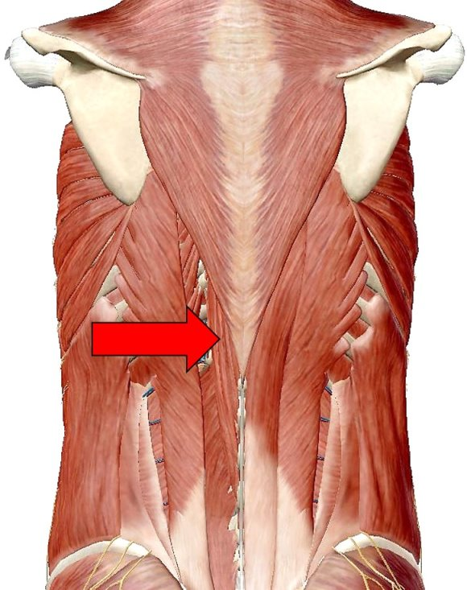
正解
[Back]2015 Lab1 VB
spinalis thoracis
出現紀錄（12 次）
- 第 4 次 · Q20 / 填充題 · [Back]2015 Lab1 VB
- 第 8 次 · Q19 / 填充題 · [Back]2015 Lab1 VB
- 第 12 次 · Q20 / 填充題 · [Back]2015 Lab1 VB
- 第 20 次 · Q19 / 填充題 · [Back]2015 Lab1 VB
- 第 25 次 · Q20 / 填充題 · [Back]2015 Lab1 VB
- 第 53 次 · Q19 / 填充題 · [Back]2015 Lab1 VB
- 第 55 次 · Q20 / 填充題 · [Back]2015 Lab1 VB
- 第 60 次 · Q20 / 填充題 · [Back]2015 Lab1 VB
- 第 61 次 · Q20 / 填充題 · [Back]2015 Lab1 VB
- 第 64 次 · Q18 / 填充題 · [Back]2015 Lab1 VB
- 第 70 次 · Q20 / 填充題 · [Back]2015 Lab1 VB
- 第 77 次 · Q18 / 填充題 · [Back]2015 Lab1 VB
8 · 背部
上胸背與深背肌
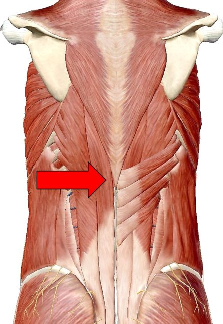
正解
[Back]2015 Lab1 VB
longissimus
出現紀錄（8 次）
- 第 13 次 · Q19 / 填充題 · [Back]2015 Lab1 VB
- 第 41 次 · Q20 / 填充題 · [Back]2015 Lab1 VB
- 第 61 次 · Q19 / 填充題 · [Back]2015 Lab1 VB
- 第 65 次 · Q20 / 填充題 · [Back]2015 Lab1 VB
- 第 81 次 · Q20 / 填充題 · [Back]2015 Lab1 VB
- 第 88 次 · Q20 / 填充題 · [Back]2015 Lab1 VB
- 第 92 次 · Q20 / 填充題 · [Back]2015 Lab1 VB
- 第 93 次 · Q18 / 填充題 · [Back]2015 Lab1 VB
9 · 背部
上胸背與深背肌
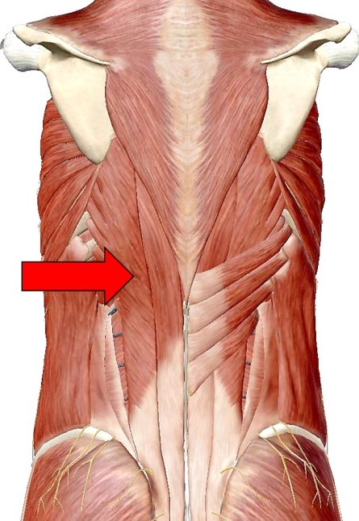
正解
[Back]Lab1 VB
iliocostalis
出現紀錄（15 次）
- 第 2 次 · Q30 / 填充題 · [Back]Lab1 VB
- 第 10 次 · Q19 / 填充題 · [Back]Lab1 VB
- 第 11 次 · Q16 / 填充題 · [Back]Lab1 VB
- 第 13 次 · Q17 / 填充題 · [Back]Lab1 VB
- 第 58 次 · Q19 / 填充題 · [Back]Lab1 VB
- 第 60 次 · Q18 / 填充題 · [Back]Lab1 VB
- 第 62 次 · Q17 / 填充題 · [Back]Lab1 VB
- 第 63 次 · Q18 / 填充題 · [Back]Lab1 VB
- 第 64 次 · Q17 / 填充題 · [Back]Lab1 VB
- 第 73 次 · Q18 / 填充題 · [Back]Lab1 VB
- 第 75 次 · Q19 / 填充題 · [Back]Lab1 VB
- 第 80 次 · Q20 / 填充題 · [Back]Lab1 VB
- 第 87 次 · Q19 / 填充題 · [Back]Lab1 VB
- 第 88 次 · Q18 / 填充題 · [Back]Lab1 VB
- 第 89 次 · Q19 / 填充題 · [Back]Lab1 VB
10 · 背部
上胸背與深背肌
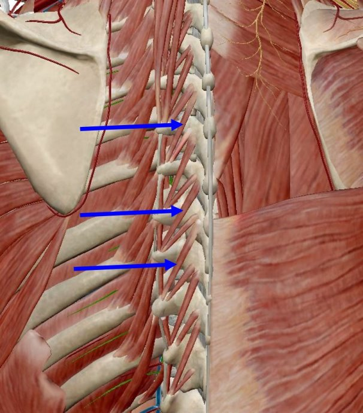
正解
[Back]2015 Lab1 VB
rotatores longus
出現紀錄（8 次）
- 第 11 次 · Q19 / 填充題 · [Back]2015 Lab1 VB
- 第 22 次 · Q20 / 填充題 · [Back]2015 Lab1 VB
- 第 24 次 · Q20 / 填充題 · [Back]2015 Lab1 VB
- 第 32 次 · Q19 / 填充題 · [Back]2015 Lab1 VB
- 第 39 次 · Q20 / 填充題 · [Back]2015 Lab1 VB
- 第 50 次 · Q19 / 填充題 · [Back]2015 Lab1 VB
- 第 68 次 · Q20 / 填充題 · [Back]2015 Lab1 VB
- 第 88 次 · Q19 / 填充題 · [Back]2015 Lab1 VB
11 · 背部
下胸背與腰背
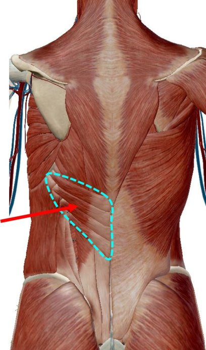
正解
[Back]2015 Lab1 VB
serratus posterior inferior
出現紀錄（11 次）
- 第 4 次 · Q19 / 填充題 · [Back]2015 Lab1 VB
- 第 5 次 · Q20 / 填充題 · [Back]2015 Lab1 VB
- 第 17 次 · Q20 / 填充題 · [Back]2015 Lab1 VB
- 第 30 次 · Q18 / 填充題 · [Back]2015 Lab1 VB
- 第 37 次 · Q18 / 填充題 · [Back]2015 Lab1 VB
- 第 41 次 · Q18 / 填充題 · [Back]2015 Lab1 VB
- 第 45 次 · Q20 / 填充題 · [Back]2015 Lab1 VB
- 第 47 次 · Q19 / 填充題 · [Back]2015 Lab1 VB
- 第 55 次 · Q19 / 填充題 · [Back]2015 Lab1 VB
- 第 75 次 · Q20 / 填充題 · [Back]2015 Lab1 VB
- 第 99 次 · Q20 / 填充題 · [Back]2015 Lab1 VB
12 · 背部
下胸背與腰背
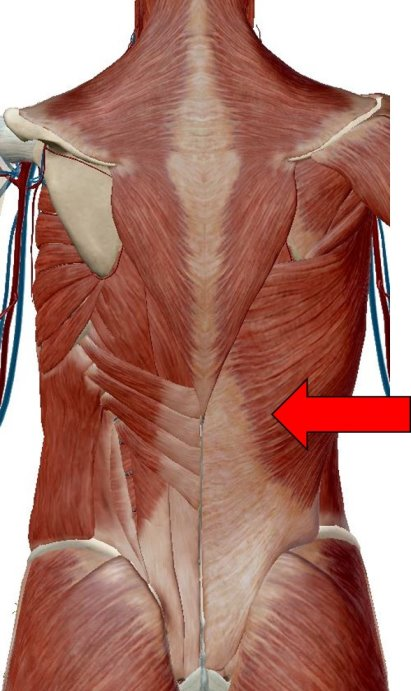
正解
[Back]2015 Lab1 VB
latissimus dorsi
出現紀錄（16 次）
- 第 14 次 · Q20 / 填充題 · [Back]2015 Lab1 VB
- 第 27 次 · Q20 / 填充題 · [Back]2015 Lab1 VB
- 第 35 次 · Q20 / 填充題 · [Back]2015 Lab1 VB
- 第 36 次 · Q19 / 填充題 · [Back]2015 Lab1 VB
- 第 41 次 · Q19 / 填充題 · [Back]2015 Lab1 VB
- 第 51 次 · Q19 / 填充題 · [Back]2015 Lab1 VB
- 第 59 次 · Q18 / 填充題 · [Back]2015 Lab1 VB
- 第 61 次 · Q18 / 填充題 · [Back]2015 Lab1 VB
- 第 66 次 · Q20 / 填充題 · [Back]2015 Lab1 VB
- 第 72 次 · Q20 / 填充題 · [Back]2015 Lab1 VB
- 第 73 次 · Q19 / 填充題 · [Back]2015 Lab1 VB
- 第 82 次 · Q19 / 填充題 · [Back]2015 Lab1 VB
- 第 84 次 · Q18 / 填充題 · [Back]2015 Lab1 VB
- 第 91 次 · Q20 / 填充題 · [Back]2015 Lab1 VB
- 第 93 次 · Q17 / 填充題 · [Back]2015 Lab1 VB
- 第 100 次 · Q20 / 填充題 · [Back]2015 Lab1 VB
13 · 背部
腰骶椎管
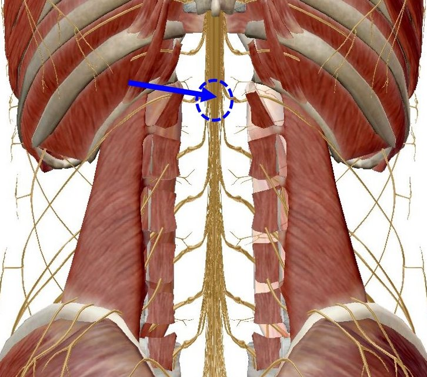
正解
[Back]2015 Lab4 VB
conus medullaris
出現紀錄（13 次）
- 第 1 次 · Q40 / 填充題 · [Back]2015 Lab4 VB
- 第 7 次 · Q20 / 填充題 · [Back]2015 Lab4 VB
- 第 10 次 · Q20 / 填充題 · [Back]2015 Lab4 VB
- 第 18 次 · Q20 / 填充題 · [Back]2015 Lab4 VB
- 第 32 次 · Q20 / 填充題 · [Back]2015 Lab4 VB
- 第 36 次 · Q20 / 填充題 · [Back]2015 Lab4 VB
- 第 47 次 · Q20 / 填充題 · [Back]2015 Lab4 VB
- 第 53 次 · Q20 / 填充題 · [Back]2015 Lab4 VB
- 第 54 次 · Q20 / 填充題 · [Back]2015 Lab4 VB
- 第 63 次 · Q20 / 填充題 · [Back]2015 Lab4 VB
- 第 64 次 · Q20 / 填充題 · [Back]2015 Lab4 VB
- 第 83 次 · Q20 / 填充題 · [Back]2015 Lab4 VB
- 第 93 次 · Q20 / 填充題 · [Back]2015 Lab4 VB
14 · 背部
腰骶椎管
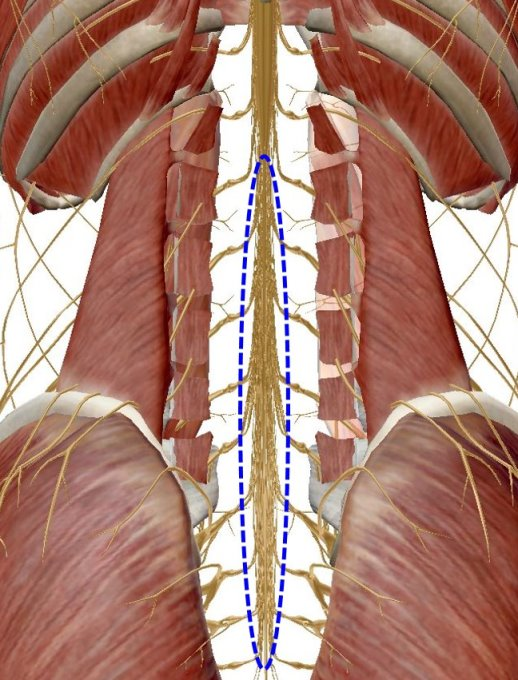
正解
[Back]2015 Lab4 VB
cauda equina
出現紀錄（21 次）
- 第 1 次 · Q39 / 填充題 · [Back]2015 Lab4 VB
- 第 6 次 · Q20 / 填充題 · [Back]2015 Lab4 VB
- 第 7 次 · Q19 / 填充題 · [Back]2015 Lab4 VB
- 第 8 次 · Q20 / 填充題 · [Back]2015 Lab4 VB
- 第 13 次 · Q20 / 填充題 · [Back]2015 Lab4 VB
- 第 15 次 · Q20 / 填充題 · [Back]2015 Lab4 VB
- 第 29 次 · Q20 / 填充題 · [Back]2015 Lab4 VB
- 第 30 次 · Q20 / 填充題 · [Back]2015 Lab4 VB
- 第 37 次 · Q20 / 填充題 · [Back]2015 Lab4 VB
- 第 51 次 · Q20 / 填充題 · [Back]2015 Lab4 VB
- 第 59 次 · Q20 / 填充題 · [Back]2015 Lab4 VB
- 第 73 次 · Q20 / 填充題 · [Back]2015 Lab4 VB
- 第 77 次 · Q20 / 填充題 · [Back]2015 Lab4 VB
- 第 82 次 · Q20 / 填充題 · [Back]2015 Lab4 VB
- 第 83 次 · Q19 / 填充題 · [Back]2015 Lab4 VB
- 第 85 次 · Q20 / 填充題 · [Back]2015 Lab4 VB
- 第 87 次 · Q20 / 填充題 · [Back]2015 Lab4 VB
- 第 89 次 · Q20 / 填充題 · [Back]2015 Lab4 VB
- 第 93 次 · Q19 / 填充題 · [Back]2015 Lab4 VB
- 第 94 次 · Q20 / 填充題 · [Back]2015 Lab4 VB
- 第 98 次 · Q20 / 填充題 · [Back]2015 Lab4 VB
15 · 上肢
肩胛內側緣
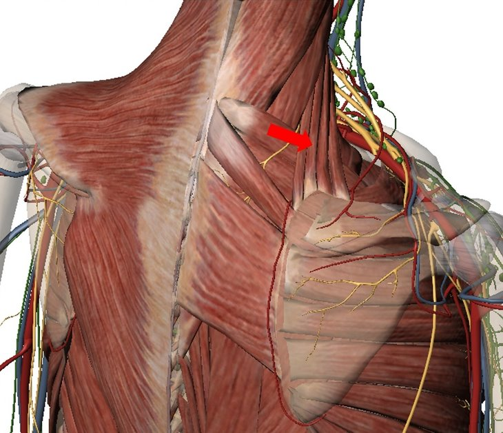
正解
[UL]2014 Lab1 VB
levator scapulae
出現紀錄（11 次）
- 第 1 次 · Q26 / 填充題 · [UL]2014 Lab1 VB
- 第 2 次 · Q24 / 填充題 · [UL]2014 Lab1 VB
- 第 9 次 · Q15 / 填充題 · [UL]2014 Lab1 VB
- 第 17 次 · Q16 / 填充題 · [UL]2014 Lab1 VB
- 第 24 次 · Q15 / 填充題 · [UL]2014 Lab1 VB
- 第 37 次 · Q13 / 填充題 · [UL]2014 Lab1 VB
- 第 39 次 · Q12 / 填充題 · [UL]2014 Lab1 VB
- 第 64 次 · Q13 / 填充題 · [UL]2014 Lab1 VB
- 第 69 次 · Q10 / 填充題 · [UL]2014 Lab1 VB
- 第 70 次 · Q14 / 填充題 · [UL]2014 Lab1 VB
- 第 92 次 · Q15 / 填充題 · [UL]2014 Lab1 VB
16 · 上肢
肩胛內側緣
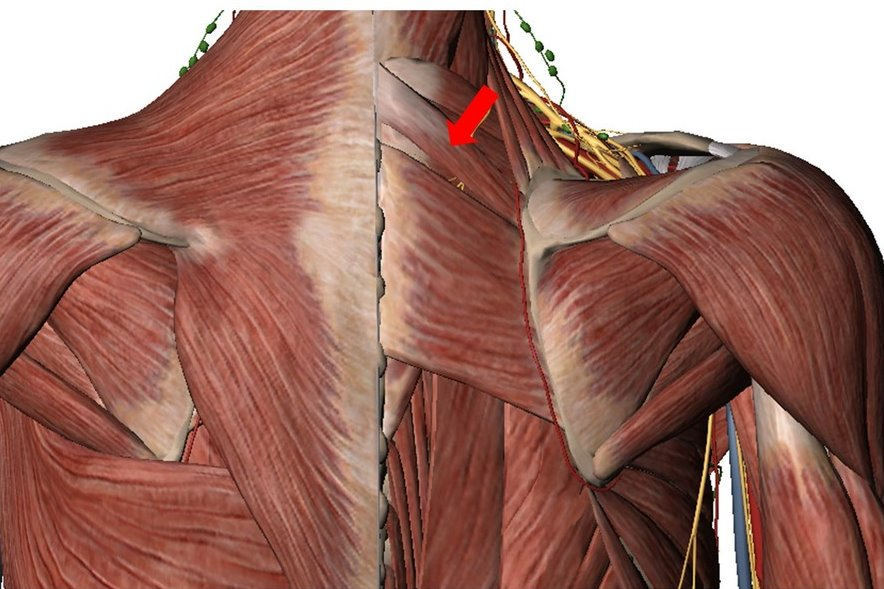
正解
[UL]2013 Lab1 VB
rhomboid minor
出現紀錄（9 次）
- 第 10 次 · Q13 / 填充題 · [UL]2013 Lab1 VB
- 第 12 次 · Q15 / 填充題 · [UL]2013 Lab1 VB
- 第 28 次 · Q16 / 填充題 · [UL]2013 Lab1 VB
- 第 33 次 · Q14 / 填充題 · [UL]2013 Lab1 VB
- 第 39 次 · Q13 / 填充題 · [UL]2013 Lab1 VB
- 第 41 次 · Q15 / 填充題 · [UL]2013 Lab1 VB
- 第 51 次 · Q16 / 填充題 · [UL]2013 Lab1 VB
- 第 69 次 · Q11 / 填充題 · [UL]2013 Lab1 VB
- 第 90 次 · Q13 / 填充題 · [UL]2013 Lab1 VB
17 · 上肢
肩胛內側緣
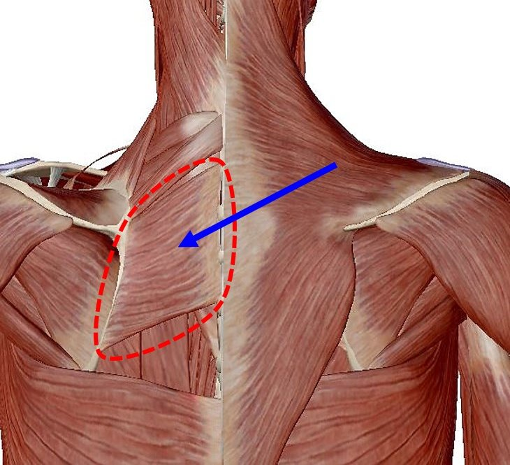
正解
[UL]Lab1 VB
rhomboid major
出現紀錄（8 次）
- 第 1 次 · Q25 / 填充題 · [UL]Lab1 VB
- 第 19 次 · Q15 / 填充題 · [UL]Lab1 VB
- 第 23 次 · Q14 / 填充題 · [UL]Lab1 VB
- 第 29 次 · Q16 / 填充題 · [UL]Lab1 VB
- 第 39 次 · Q11 / 填充題 · [UL]Lab1 VB
- 第 53 次 · Q14 / 填充題 · [UL]Lab1 VB
- 第 78 次 · Q15 / 填充題 · [UL]Lab1 VB
- 第 84 次 · Q14 / 填充題 · [UL]Lab1 VB
18 · 上肢
肩胛內側緣
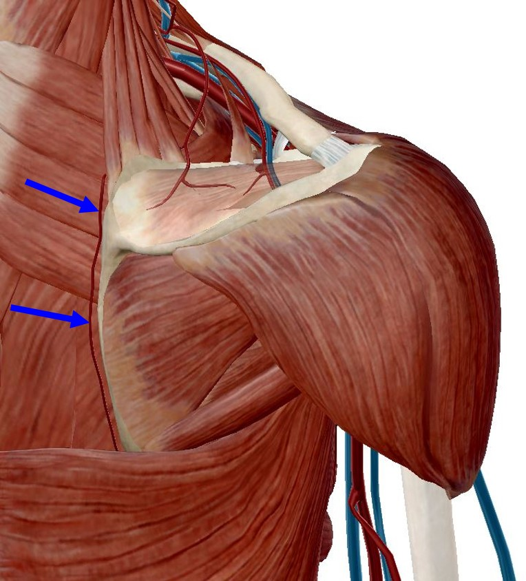
正解
[UL]2015 Lab1 VB
dorsal scapular a.
出現紀錄（6 次）
- 第 18 次 · Q14 / 填充題 · [UL]2015 Lab1 VB
- 第 40 次 · Q12 / 填充題 · [UL]2015 Lab1 VB
- 第 55 次 · Q12 / 填充題 · [UL]2015 Lab1 VB
- 第 60 次 · Q10 / 填充題 · [UL]2015 Lab1 VB
- 第 65 次 · Q13 / 填充題 · [UL]2015 Lab1 VB
- 第 68 次 · Q14 / 填充題 · [UL]2015 Lab1 VB
19 · 上肢
肩胛切跡與棘上窩
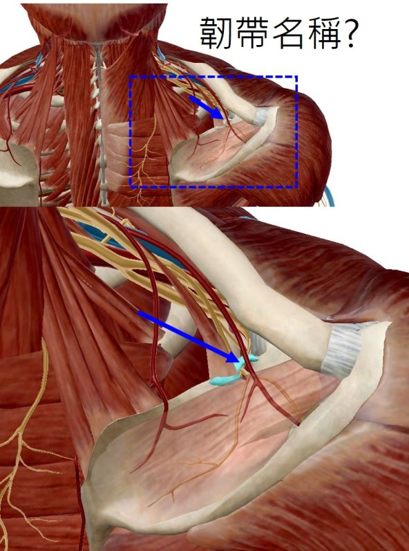
正解
[UL]2015 Lab1 VB
superior transverse scapular lig.
出現紀錄（2 次）
- 第 1 次 · Q22 / 填充題 · [UL]2015 Lab1 VB
- 第 86 次 · Q12 / 填充題 · [UL]2015 Lab1 VB
20 · 上肢
肩胛切跡與棘上窩
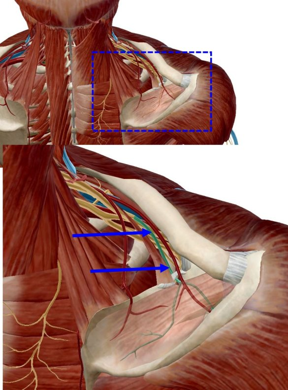
正解
[UL]2015 Lab1 VB
suprascapular n.
出現紀錄（9 次）
- 第 24 次 · Q14 / 填充題 · [UL]2015 Lab1 VB
- 第 28 次 · Q14 / 填充題 · [UL]2015 Lab1 VB
- 第 40 次 · Q11 / 填充題 · [UL]2015 Lab1 VB
- 第 64 次 · Q12 / 填充題 · [UL]2015 Lab1 VB
- 第 65 次 · Q12 / 填充題 · [UL]2015 Lab1 VB
- 第 66 次 · Q12 / 填充題 · [UL]2015 Lab1 VB
- 第 76 次 · Q14 / 填充題 · [UL]2015 Lab1 VB
- 第 89 次 · Q12 / 填充題 · [UL]2015 Lab1 VB
- 第 91 次 · Q15 / 填充題 · [UL]2015 Lab1 VB
21 · 上肢
肩胛切跡與棘上窩
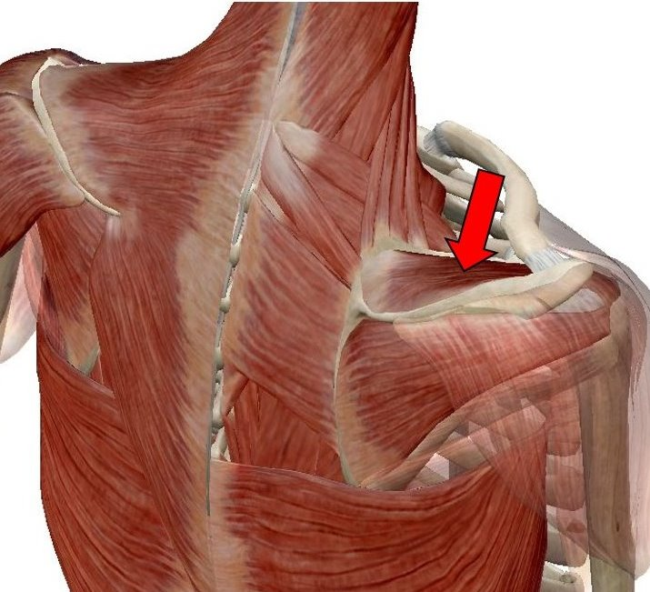
正解
[UL]2015 Lab1 VB
supraspinatus
出現紀錄（12 次）
- 第 1 次 · Q23 / 填充題 · [UL]2015 Lab1 VB
- 第 2 次 · Q23 / 填充題 · [UL]2015 Lab1 VB
- 第 16 次 · Q15 / 填充題 · [UL]2015 Lab1 VB
- 第 22 次 · Q14 / 填充題 · [UL]2015 Lab1 VB
- 第 30 次 · Q13 / 填充題 · [UL]2015 Lab1 VB
- 第 35 次 · Q12 / 填充題 · [UL]2015 Lab1 VB
- 第 49 次 · Q14 / 填充題 · [UL]2015 Lab1 VB
- 第 50 次 · Q12 / 填充題 · [UL]2015 Lab1 VB
- 第 51 次 · Q14 / 填充題 · [UL]2015 Lab1 VB
- 第 57 次 · Q12 / 填充題 · [UL]2015 Lab1 VB
- 第 82 次 · Q12 / 填充題 · [UL]2015 Lab1 VB
- 第 88 次 · Q15 / 填充題 · [UL]2015 Lab1 VB
22 · 上肢
肩關節後側與三角肌區
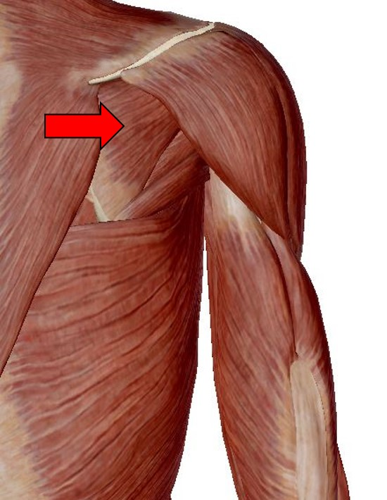
正解
[UL]2015 Lab1 VB
infraspinatus
出現紀錄（9 次）
- 第 28 次 · Q9 / 填充題 · [UL]2015 Lab1 VB
- 第 31 次 · Q10 / 填充題 · [UL]2015 Lab1 VB
- 第 38 次 · Q11 / 填充題 · [UL]2015 Lab1 VB
- 第 42 次 · Q9 / 填充題 · [UL]2015 Lab1 VB
- 第 56 次 · Q11 / 填充題 · [UL]2015 Lab1 VB
- 第 61 次 · Q8 / 填充題 · [UL]2015 Lab1 VB
- 第 67 次 · Q15 / 填充題 · [UL]2015 Lab1 VB
- 第 84 次 · Q7 / 填充題 · [UL]2015 Lab1 VB
- 第 98 次 · Q13 / 填充題 · [UL]2015 Lab1 VB
23 · 上肢
肩關節後側與三角肌區
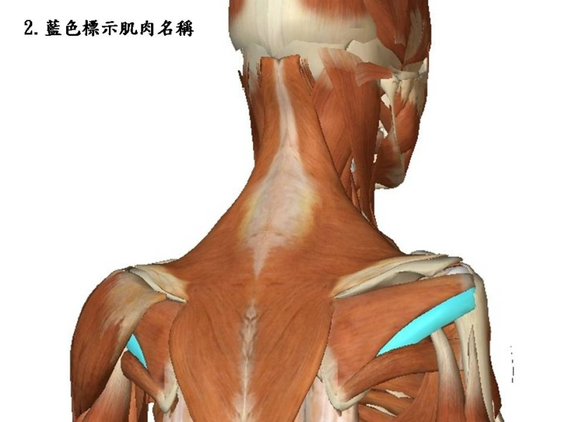
正解
[UL]Lab1 VB
teres minor
出現紀錄（5 次）
- 第 5 次 · Q12 / 填充題 · [UL]Lab1 VB
- 第 28 次 · Q15 / 填充題 · [UL]Lab1 VB
- 第 33 次 · Q12 / 填充題 · [UL]Lab1 VB
- 第 70 次 · Q13 / 填充題 · [UL]Lab1 VB
- 第 82 次 · Q13 / 填充題 · [UL]Lab1 VB
24 · 上肢
肩關節後側與三角肌區
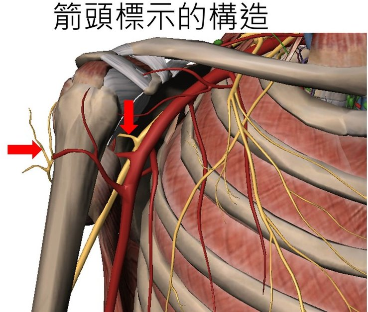
正解
[UL]2013 Lab3 VB
axillary n.
出現紀錄（7 次）
- 第 1 次 · Q21 / 填充題 · [UL]2013 Lab3 VB
- 第 18 次 · Q12 / 填充題 · [UL]2013 Lab3 VB
- 第 21 次 · Q11 / 填充題 · [UL]2013 Lab3 VB
- 第 26 次 · Q15 / 填充題 · [UL]2013 Lab3 VB
- 第 55 次 · Q11 / 填充題 · [UL]2013 Lab3 VB
- 第 73 次 · Q11 / 填充題 · [UL]2013 Lab3 VB
- 第 88 次 · Q13 / 填充題 · [UL]2013 Lab3 VB
25 · 上肢
肩關節後側與三角肌區
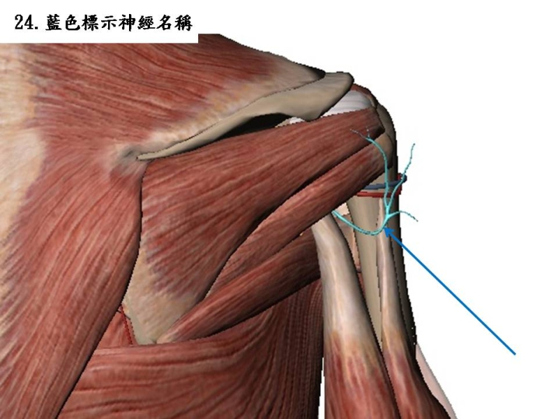
正解
[UL]Lab1 VB
axillary n.
出現紀錄（10 次）
- 第 2 次 · Q21 / 填充題 · [UL]Lab1 VB
- 第 5 次 · Q11 / 填充題 · [UL]Lab1 VB
- 第 50 次 · Q10 / 填充題 · [UL]Lab1 VB
- 第 53 次 · Q11 / 填充題 · [UL]Lab1 VB
- 第 62 次 · Q12 / 填充題 · [UL]Lab1 VB
- 第 66 次 · Q10 / 填充題 · [UL]Lab1 VB
- 第 68 次 · Q13 / 填充題 · [UL]Lab1 VB
- 第 73 次 · Q10 / 填充題 · [UL]Lab1 VB
- 第 85 次 · Q14 / 填充題 · [UL]Lab1 VB
- 第 95 次 · Q12 / 填充題 · [UL]Lab1 VB
26 · 上肢
肩關節後側與三角肌區
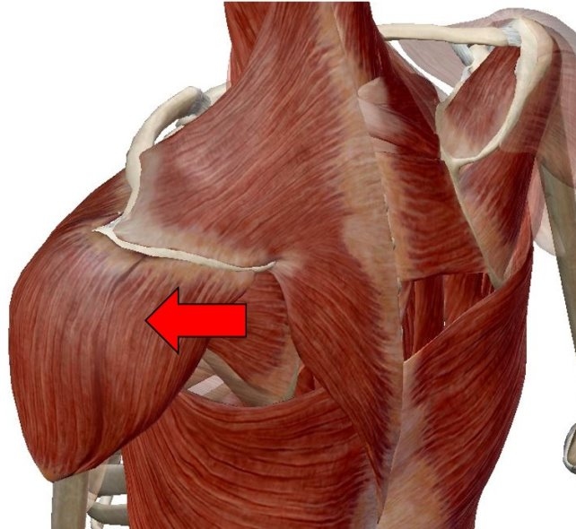
正解
[UL]2015 Lab1 VB
deltoid
出現紀錄（5 次）
- 第 1 次 · Q24 / 填充題 · [UL]2015 Lab1 VB
- 第 11 次 · Q10 / 填充題 · [UL]2015 Lab1 VB
- 第 70 次 · Q12 / 填充題 · [UL]2015 Lab1 VB
- 第 77 次 · Q14 / 填充題 · [UL]2015 Lab1 VB
- 第 84 次 · Q13 / 填充題 · [UL]2015 Lab1 VB
27 · 上肢
肩鎖與肩關節上方
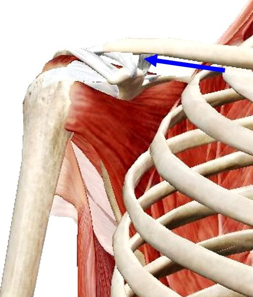
正解
[UL]2015 Lab6 VB
conoid lig.
出現紀錄（13 次）
- 第 3 次 · Q11 / 填充題 · [UL]2015 Lab6 VB
- 第 5 次 · Q4 / 填充題 · [UL]2015 Lab6 VB
- 第 8 次 · Q9 / 填充題 · [UL]2015 Lab6 VB
- 第 21 次 · Q8 / 填充題 · [UL]2015 Lab6 VB
- 第 23 次 · Q9 / 填充題 · [UL]2015 Lab6 VB
- 第 26 次 · Q8 / 填充題 · [UL]2015 Lab6 VB
- 第 38 次 · Q7 / 填充題 · [UL]2015 Lab6 VB
- 第 49 次 · Q6 / 填充題 · [UL]2015 Lab6 VB
- 第 54 次 · Q10 / 填充題 · [UL]2015 Lab6 VB
- 第 61 次 · Q6 / 填充題 · [UL]2015 Lab6 VB
- 第 66 次 · Q6 / 填充題 · [UL]2015 Lab6 VB
- 第 76 次 · Q8 / 填充題 · [UL]2015 Lab6 VB
- 第 86 次 · Q5 / 填充題 · [UL]2015 Lab6 VB
28 · 上肢
肩鎖與肩關節上方
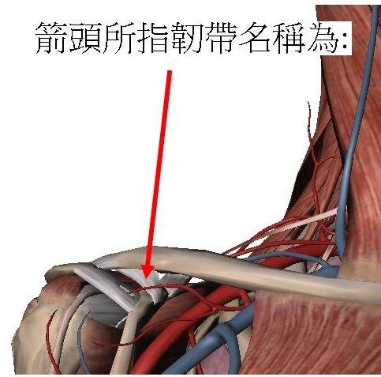
正解
[UL]2013 Lab6 VB
trapezoid lig.
出現紀錄（7 次）
- 第 1 次 · Q27 / 填充題 · [UL]2013 Lab6 VB
- 第 27 次 · Q13 / 填充題 · [UL]2013 Lab6 VB
- 第 32 次 · Q12 / 填充題 · [UL]2013 Lab6 VB
- 第 35 次 · Q13 / 填充題 · [UL]2013 Lab6 VB
- 第 58 次 · Q14 / 填充題 · [UL]2013 Lab6 VB
- 第 70 次 · Q15 / 填充題 · [UL]2013 Lab6 VB
- 第 92 次 · Q16 / 填充題 · [UL]2013 Lab6 VB
29 · 上肢
肩鎖與肩關節上方
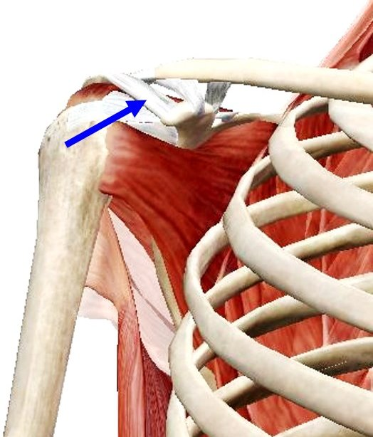
正解
[UL]2015 Lab6 VB
coracoacromial lig.
出現紀錄（12 次）
- 第 23 次 · Q8 / 填充題 · [UL]2015 Lab6 VB
- 第 29 次 · Q9 / 填充題 · [UL]2015 Lab6 VB
- 第 32 次 · Q8 / 填充題 · [UL]2015 Lab6 VB
- 第 37 次 · Q8 / 填充題 · [UL]2015 Lab6 VB
- 第 38 次 · Q6 / 填充題 · [UL]2015 Lab6 VB
- 第 48 次 · Q9 / 填充題 · [UL]2015 Lab6 VB
- 第 50 次 · Q7 / 填充題 · [UL]2015 Lab6 VB
- 第 64 次 · Q3 / 填充題 · [UL]2015 Lab6 VB
- 第 75 次 · Q6 / 填充題 · [UL]2015 Lab6 VB
- 第 79 次 · Q8 / 填充題 · [UL]2015 Lab6 VB
- 第 80 次 · Q6 / 填充題 · [UL]2015 Lab6 VB
- 第 85 次 · Q8 / 填充題 · [UL]2015 Lab6 VB
30 · 上肢
肩關節前側與腋窩後壁
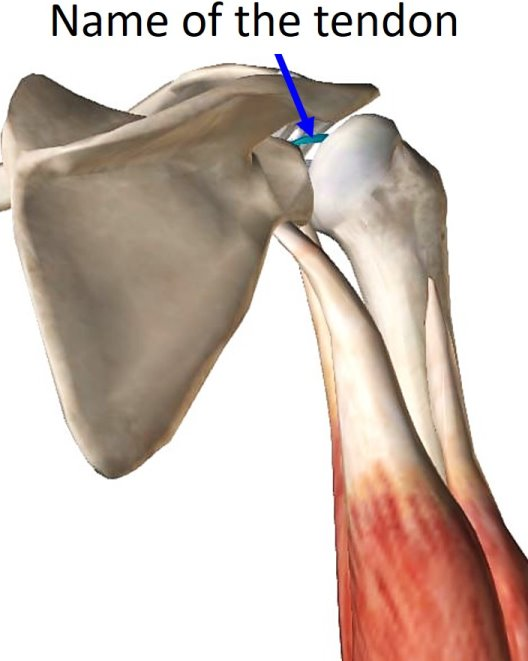
正解
[UL]2015 Lab6 VB
tendon of biceps brachii, long head
出現紀錄（10 次）
- 第 7 次 · Q8 / 填充題 · [UL]2015 Lab6 VB
- 第 8 次 · Q8 / 填充題 · [UL]2015 Lab6 VB
- 第 9 次 · Q10 / 填充題 · [UL]2015 Lab6 VB
- 第 10 次 · Q6 / 填充題 · [UL]2015 Lab6 VB
- 第 14 次 · Q10 / 填充題 · [UL]2015 Lab6 VB
- 第 19 次 · Q9 / 填充題 · [UL]2015 Lab6 VB
- 第 20 次 · Q9 / 填充題 · [UL]2015 Lab6 VB
- 第 54 次 · Q9 / 填充題 · [UL]2015 Lab6 VB
- 第 70 次 · Q8 / 填充題 · [UL]2015 Lab6 VB
- 第 95 次 · Q6 / 填充題 · [UL]2015 Lab6 VB
31 · 上肢
肩關節前側與腋窩後壁
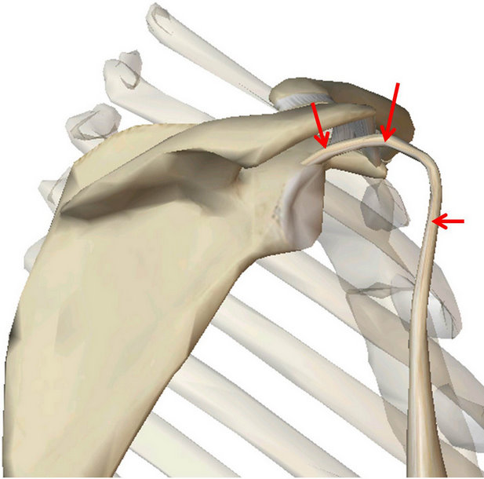
正解
[UL]Lab6 VB
tendon of biceps brachii, long head
出現紀錄（8 次）
- 第 38 次 · Q17 / 填充題 · [UL]Lab6 VB
- 第 43 次 · Q13 / 填充題 · [UL]Lab6 VB
- 第 55 次 · Q14 / 填充題 · [UL]Lab6 VB
- 第 74 次 · Q14 / 填充題 · [UL]Lab6 VB
- 第 78 次 · Q16 / 填充題 · [UL]Lab6 VB
- 第 83 次 · Q13 / 填充題 · [UL]Lab6 VB
- 第 86 次 · Q14 / 填充題 · [UL]Lab6 VB
- 第 100 次 · Q16 / 填充題 · [UL]Lab6 VB
32 · 上肢
肩關節前側與腋窩後壁
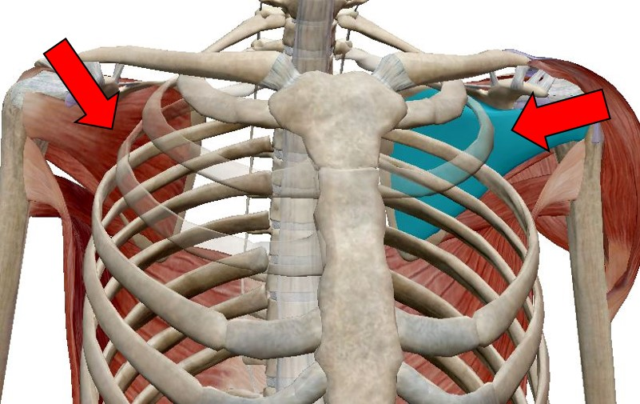
正解
[UL]Lab3 VB
subscapularis
出現紀錄（6 次）
- 第 7 次 · Q12 / 填充題 · [UL]Lab3 VB
- 第 17 次 · Q13 / 填充題 · [UL]Lab3 VB
- 第 47 次 · Q11 / 填充題 · [UL]Lab3 VB
- 第 77 次 · Q11 / 填充題 · [UL]Lab3 VB
- 第 81 次 · Q11 / 填充題 · [UL]Lab3 VB
- 第 90 次 · Q12 / 填充題 · [UL]Lab3 VB
33 · 上肢
肩關節前側與腋窩後壁
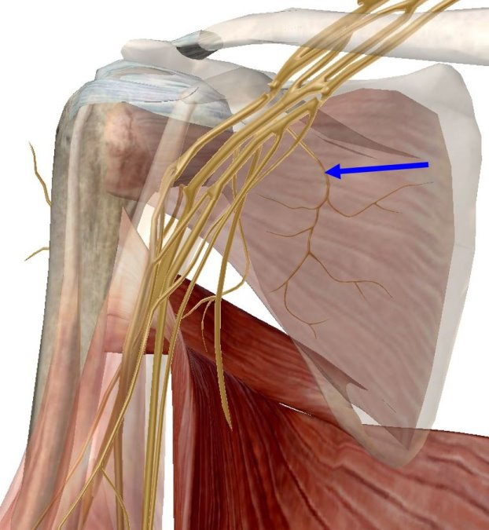
正解
[UL]2015 Lab3 VB
upper subscapular n.
出現紀錄（13 次）
- 第 2 次 · Q14 / 填充題 · [UL]2015 Lab3 VB
- 第 8 次 · Q10 / 填充題 · [UL]2015 Lab3 VB
- 第 9 次 · Q12 / 填充題 · [UL]2015 Lab3 VB
- 第 31 次 · Q8 / 填充題 · [UL]2015 Lab3 VB
- 第 42 次 · Q8 / 填充題 · [UL]2015 Lab3 VB
- 第 61 次 · Q7 / 填充題 · [UL]2015 Lab3 VB
- 第 65 次 · Q9 / 填充題 · [UL]2015 Lab3 VB
- 第 71 次 · Q12 / 填充題 · [UL]2015 Lab3 VB
- 第 80 次 · Q8 / 填充題 · [UL]2015 Lab3 VB
- 第 81 次 · Q7 / 填充題 · [UL]2015 Lab3 VB
- 第 83 次 · Q9 / 填充題 · [UL]2015 Lab3 VB
- 第 86 次 · Q6 / 填充題 · [UL]2015 Lab3 VB
- 第 98 次 · Q12 / 填充題 · [UL]2015 Lab3 VB
34 · 上肢
肩關節前側與腋窩後壁
正解
[UL]2015 Lab3 VB
lower subscapular n.
出現紀錄（10 次）
- 第 26 次 · Q10 / 填充題 · [UL]2015 Lab3 VB
- 第 31 次 · Q9 / 填充題 · [UL]2015 Lab3 VB
- 第 32 次 · Q10 / 填充題 · [UL]2015 Lab3 VB
- 第 63 次 · Q12 / 填充題 · [UL]2015 Lab3 VB
- 第 65 次 · Q10 / 填充題 · [UL]2015 Lab3 VB
- 第 78 次 · Q9 / 填充題 · [UL]2015 Lab3 VB
- 第 79 次 · Q9 / 填充題 · [UL]2015 Lab3 VB
- 第 80 次 · Q9 / 填充題 · [UL]2015 Lab3 VB
- 第 84 次 · Q6 / 填充題 · [UL]2015 Lab3 VB
- 第 95 次 · Q9 / 填充題 · [UL]2015 Lab3 VB
35 · 上肢
肩關節前側與腋窩後壁
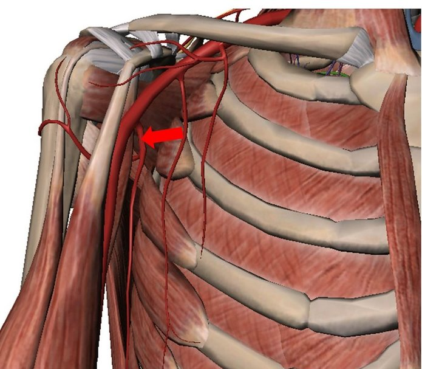
正解
[UL]2013 Lab3 VB
subscapular a.
出現紀錄（10 次）
- 第 27 次 · Q11 / 填充題 · [UL]2013 Lab3 VB
- 第 38 次 · Q15 / 填充題 · [UL]2013 Lab3 VB
- 第 44 次 · Q13 / 填充題 · [UL]2013 Lab3 VB
- 第 60 次 · Q9 / 填充題 · [UL]2013 Lab3 VB
- 第 71 次 · Q15 / 填充題 · [UL]2013 Lab3 VB
- 第 72 次 · Q12 / 填充題 · [UL]2013 Lab3 VB
- 第 74 次 · Q11 / 填充題 · [UL]2013 Lab3 VB
- 第 75 次 · Q11 / 填充題 · [UL]2013 Lab3 VB
- 第 84 次 · Q11 / 填充題 · [UL]2013 Lab3 VB
- 第 87 次 · Q12 / 填充題 · [UL]2013 Lab3 VB
36 · 上肢
肩關節前側與腋窩後壁
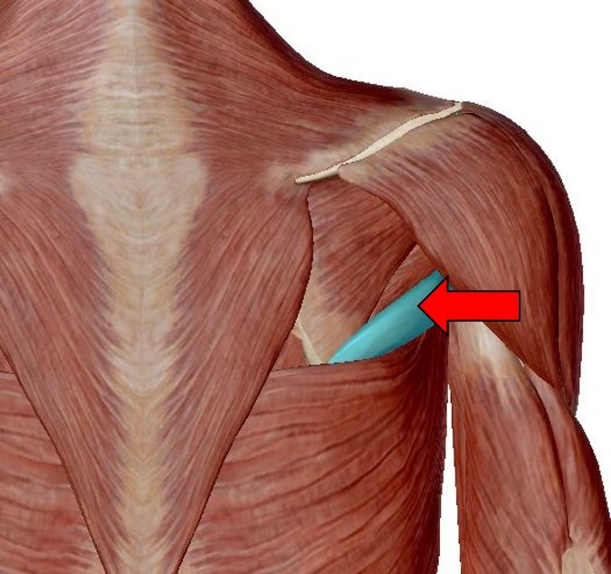
正解
[UL]2015 Lab1 VB
teres major
出現紀錄（12 次）
- 第 2 次 · Q15 / 填充題 · [UL]2015 Lab1 VB
- 第 8 次 · Q11 / 填充題 · [UL]2015 Lab1 VB
- 第 26 次 · Q11 / 填充題 · [UL]2015 Lab1 VB
- 第 36 次 · Q9 / 填充題 · [UL]2015 Lab1 VB
- 第 38 次 · Q10 / 填充題 · [UL]2015 Lab1 VB
- 第 41 次 · Q12 / 填充題 · [UL]2015 Lab1 VB
- 第 44 次 · Q8 / 填充題 · [UL]2015 Lab1 VB
- 第 70 次 · Q10 / 填充題 · [UL]2015 Lab1 VB
- 第 79 次 · Q10 / 填充題 · [UL]2015 Lab1 VB
- 第 87 次 · Q10 / 填充題 · [UL]2015 Lab1 VB
- 第 89 次 · Q8 / 填充題 · [UL]2015 Lab1 VB
- 第 91 次 · Q12 / 填充題 · [UL]2015 Lab1 VB
37 · 上肢
肩關節前側與腋窩後壁
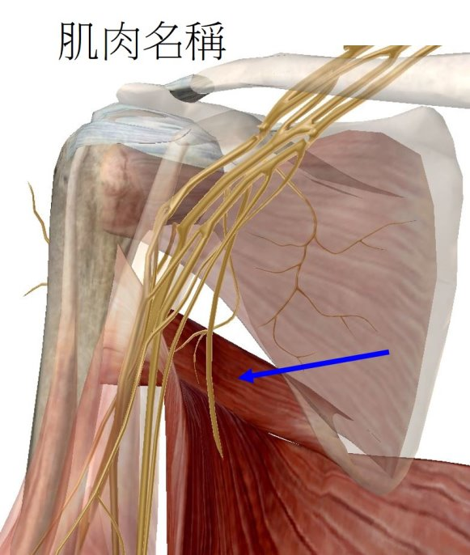
正解
[UL]2015 Lab3 VB
teres major
出現紀錄（8 次）
- 第 19 次 · Q12 / 填充題 · [UL]2015 Lab3 VB
- 第 28 次 · Q8 / 填充題 · [UL]2015 Lab3 VB
- 第 31 次 · Q7 / 填充題 · [UL]2015 Lab3 VB
- 第 63 次 · Q11 / 填充題 · [UL]2015 Lab3 VB
- 第 65 次 · Q7 / 填充題 · [UL]2015 Lab3 VB
- 第 83 次 · Q8 / 填充題 · [UL]2015 Lab3 VB
- 第 95 次 · Q8 / 填充題 · [UL]2015 Lab3 VB
- 第 100 次 · Q12 / 填充題 · [UL]2015 Lab3 VB
38 · 上肢
肩關節前側與腋窩後壁
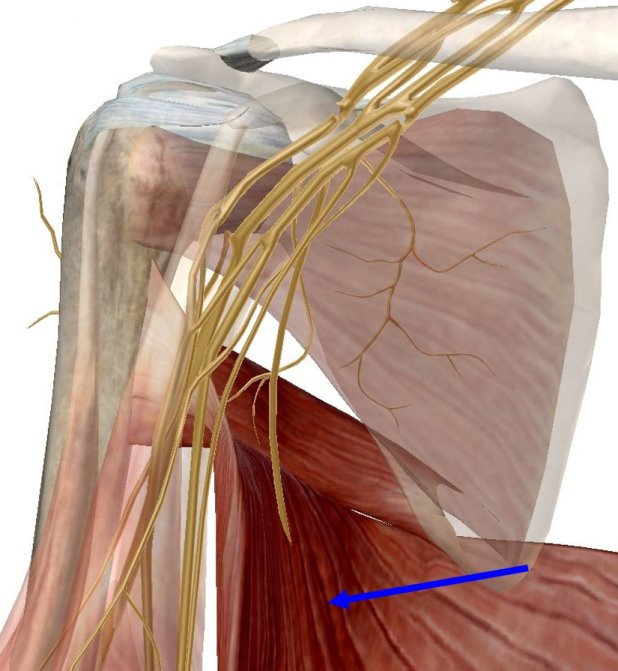
正解
[UL]2015 Lab3 VB
latissimus dorsi
出現紀錄（12 次）
- 第 5 次 · Q6 / 填充題 · [UL]2015 Lab3 VB
- 第 12 次 · Q8 / 填充題 · [UL]2015 Lab3 VB
- 第 20 次 · Q11 / 填充題 · [UL]2015 Lab3 VB
- 第 41 次 · Q11 / 填充題 · [UL]2015 Lab3 VB
- 第 49 次 · Q10 / 填充題 · [UL]2015 Lab3 VB
- 第 57 次 · Q8 / 填充題 · [UL]2015 Lab3 VB
- 第 71 次 · Q11 / 填充題 · [UL]2015 Lab3 VB
- 第 72 次 · Q7 / 填充題 · [UL]2015 Lab3 VB
- 第 82 次 · Q9 / 填充題 · [UL]2015 Lab3 VB
- 第 94 次 · Q9 / 填充題 · [UL]2015 Lab3 VB
- 第 97 次 · Q9 / 填充題 · [UL]2015 Lab3 VB
- 第 100 次 · Q11 / 填充題 · [UL]2015 Lab3 VB
39 · 上肢
肩關節前側與腋窩後壁
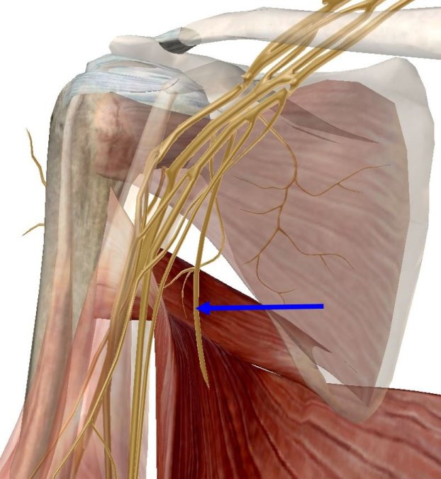
正解
[UL]2015 Lab1 VB
thoracodorsal n.
出現紀錄（6 次）
- 第 2 次 · Q13 / 填充題 · [UL]2015 Lab1 VB
- 第 18 次 · Q7 / 填充題 · [UL]2015 Lab1 VB
- 第 46 次 · Q11 / 填充題 · [UL]2015 Lab1 VB
- 第 48 次 · Q10 / 填充題 · [UL]2015 Lab1 VB
- 第 84 次 · Q5 / 填充題 · [UL]2015 Lab1 VB
- 第 89 次 · Q7 / 填充題 · [UL]2015 Lab1 VB
40 · 上肢
胸肩前側與腋窩前內側壁
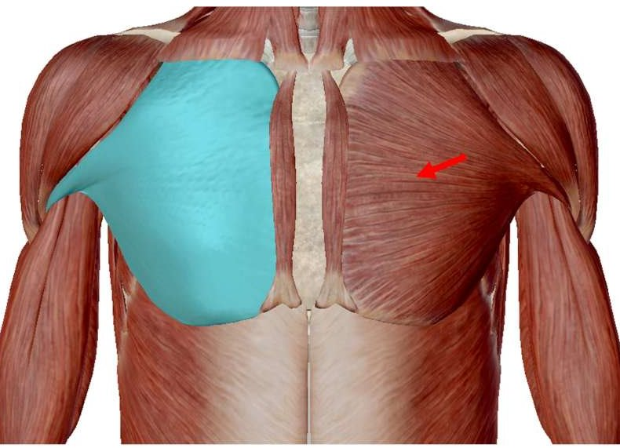
正解
[UL]2015 Lab2 VB
pectoralis major
出現紀錄（9 次）
- 第 17 次 · Q15 / 填充題 · [UL]2015 Lab2 VB
- 第 32 次 · Q11 / 填充題 · [UL]2015 Lab2 VB
- 第 47 次 · Q13 / 填充題 · [UL]2015 Lab2 VB
- 第 54 次 · Q15 / 填充題 · [UL]2015 Lab2 VB
- 第 61 次 · Q12 / 填充題 · [UL]2015 Lab2 VB
- 第 66 次 · Q11 / 填充題 · [UL]2015 Lab2 VB
- 第 73 次 · Q12 / 填充題 · [UL]2015 Lab2 VB
- 第 74 次 · Q12 / 填充題 · [UL]2015 Lab2 VB
- 第 75 次 · Q12 / 填充題 · [UL]2015 Lab2 VB
41 · 上肢
胸肩前側與腋窩前內側壁
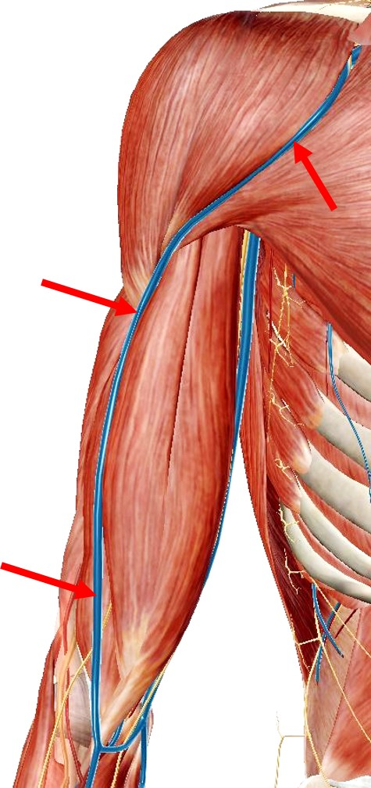
正解
[UL]2015 Lab3 VB
cephalic v.
出現紀錄（9 次）
- 第 17 次 · Q8 / 填充題 · [UL]2015 Lab3 VB
- 第 21 次 · Q9 / 填充題 · [UL]2015 Lab3 VB
- 第 24 次 · Q10 / 填充題 · [UL]2015 Lab3 VB
- 第 25 次 · Q11 / 填充題 · [UL]2015 Lab3 VB
- 第 36 次 · Q8 / 填充題 · [UL]2015 Lab3 VB
- 第 64 次 · Q7 / 填充題 · [UL]2015 Lab3 VB
- 第 76 次 · Q9 / 填充題 · [UL]2015 Lab3 VB
- 第 78 次 · Q8 / 填充題 · [UL]2015 Lab3 VB
- 第 95 次 · Q7 / 填充題 · [UL]2015 Lab3 VB
42 · 上肢
胸肩前側與腋窩前內側壁
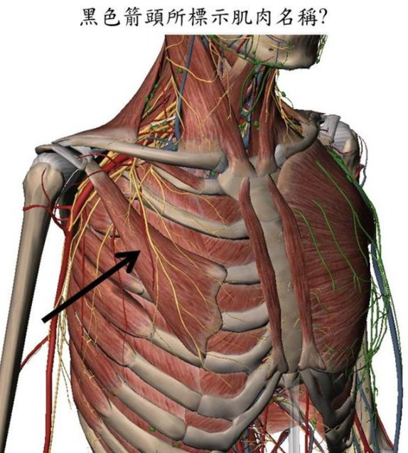
正解
[UL]2013 Lab2 VB
pectoralis minor
出現紀錄（9 次）
- 第 12 次 · Q14 / 填充題 · [UL]2013 Lab2 VB
- 第 18 次 · Q13 / 填充題 · [UL]2013 Lab2 VB
- 第 25 次 · Q14 / 填充題 · [UL]2013 Lab2 VB
- 第 38 次 · Q16 / 填充題 · [UL]2013 Lab2 VB
- 第 59 次 · Q13 / 填充題 · [UL]2013 Lab2 VB
- 第 73 次 · Q13 / 填充題 · [UL]2013 Lab2 VB
- 第 77 次 · Q13 / 填充題 · [UL]2013 Lab2 VB
- 第 87 次 · Q13 / 填充題 · [UL]2013 Lab2 VB
- 第 93 次 · Q10 / 填充題 · [UL]2013 Lab2 VB
43 · 上肢
胸肩前側與腋窩前內側壁
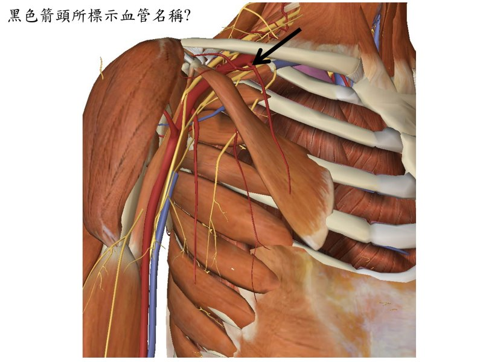
正解
[UL]Lab2 VB
thoracoacromial a.
出現紀錄（12 次）
- 第 4 次 · Q10 / 填充題 · [UL]Lab2 VB
- 第 13 次 · Q14 / 填充題 · [UL]Lab2 VB
- 第 46 次 · Q14 / 填充題 · [UL]Lab2 VB
- 第 49 次 · Q13 / 填充題 · [UL]Lab2 VB
- 第 53 次 · Q13 / 填充題 · [UL]Lab2 VB
- 第 59 次 · Q12 / 填充題 · [UL]Lab2 VB
- 第 61 次 · Q13 / 填充題 · [UL]Lab2 VB
- 第 71 次 · Q16 / 填充題 · [UL]Lab2 VB
- 第 75 次 · Q14 / 填充題 · [UL]Lab2 VB
- 第 81 次 · Q13 / 填充題 · [UL]Lab2 VB
- 第 84 次 · Q12 / 填充題 · [UL]Lab2 VB
- 第 95 次 · Q13 / 填充題 · [UL]Lab2 VB
44 · 上肢
胸肩前側與腋窩前內側壁
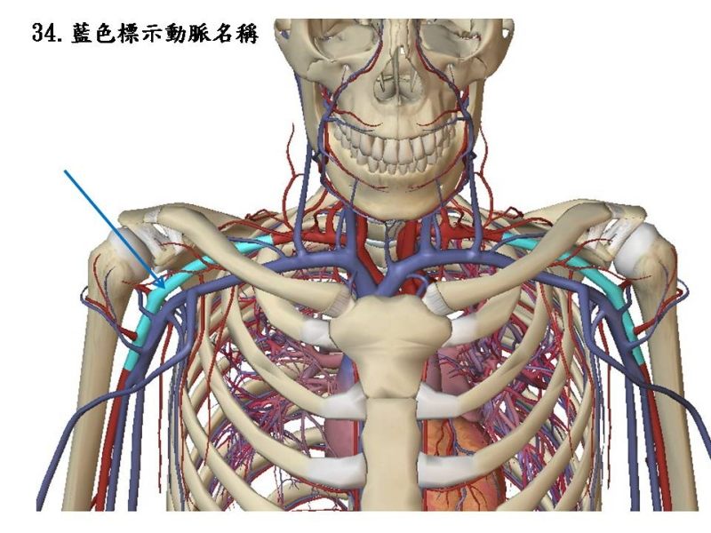
正解
[UL]Lab2 VB
axillary a.
出現紀錄（12 次）
- 第 12 次 · Q12 / 填充題 · [UL]Lab2 VB
- 第 15 次 · Q15 / 填充題 · [UL]Lab2 VB
- 第 21 次 · Q12 / 填充題 · [UL]Lab2 VB
- 第 42 次 · Q15 / 填充題 · [UL]Lab2 VB
- 第 63 次 · Q14 / 填充題 · [UL]Lab2 VB
- 第 74 次 · Q13 / 填充題 · [UL]Lab2 VB
- 第 75 次 · Q13 / 填充題 · [UL]Lab2 VB
- 第 88 次 · Q14 / 填充題 · [UL]Lab2 VB
- 第 91 次 · Q14 / 填充題 · [UL]Lab2 VB
- 第 93 次 · Q8 / 填充題 · [UL]Lab2 VB
- 第 99 次 · Q12 / 填充題 · [UL]Lab2 VB
- 第 100 次 · Q15 / 填充題 · [UL]Lab2 VB
45 · 上肢
胸肩前側與腋窩前內側壁
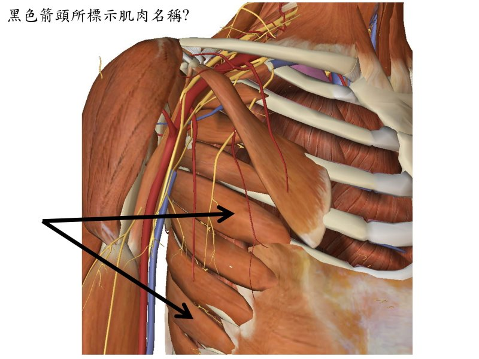
正解
[UL]Lab2 VB
serratus anterior
出現紀錄（10 次）
- 第 11 次 · Q9 / 填充題 · [UL]Lab2 VB
- 第 12 次 · Q13 / 填充題 · [UL]Lab2 VB
- 第 24 次 · Q13 / 填充題 · [UL]Lab2 VB
- 第 27 次 · Q12 / 填充題 · [UL]Lab2 VB
- 第 43 次 · Q12 / 填充題 · [UL]Lab2 VB
- 第 51 次 · Q13 / 填充題 · [UL]Lab2 VB
- 第 57 次 · Q11 / 填充題 · [UL]Lab2 VB
- 第 75 次 · Q15 / 填充題 · [UL]Lab2 VB
- 第 80 次 · Q12 / 填充題 · [UL]Lab2 VB
- 第 93 次 · Q9 / 填充題 · [UL]Lab2 VB
46 · 上肢
胸肩前側與腋窩前內側壁
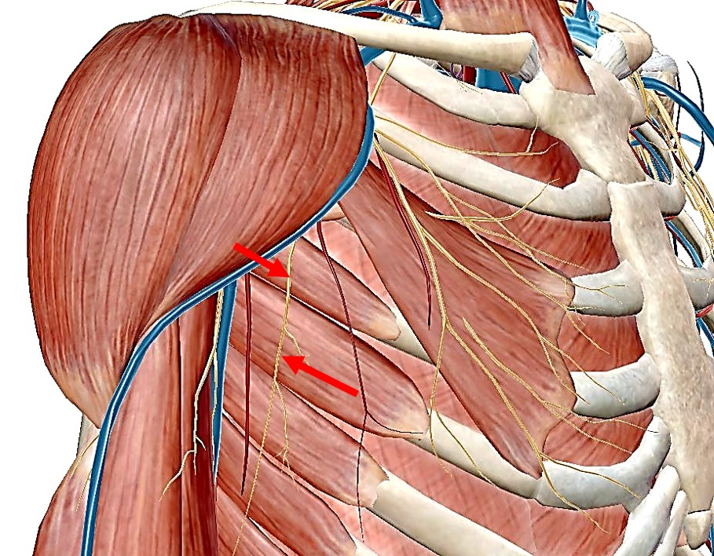
正解
[UL]2015 Lab3 VB
long thoracic n.
出現紀錄（11 次）
- 第 1 次 · Q18 / 填充題 · [UL]2015 Lab3 VB
- 第 9 次 · Q14 / 填充題 · [UL]2015 Lab3 VB
- 第 17 次 · Q11 / 填充題 · [UL]2015 Lab3 VB
- 第 29 次 · Q15 / 填充題 · [UL]2015 Lab3 VB
- 第 52 次 · Q14 / 填充題 · [UL]2015 Lab3 VB
- 第 60 次 · Q8 / 填充題 · [UL]2015 Lab3 VB
- 第 61 次 · Q11 / 填充題 · [UL]2015 Lab3 VB
- 第 62 次 · Q10 / 填充題 · [UL]2015 Lab3 VB
- 第 83 次 · Q12 / 填充題 · [UL]2015 Lab3 VB
- 第 90 次 · Q11 / 填充題 · [UL]2015 Lab3 VB
- 第 93 次 · Q7 / 填充題 · [UL]2015 Lab3 VB
47 · 上肢
腋窩至上臂前內側
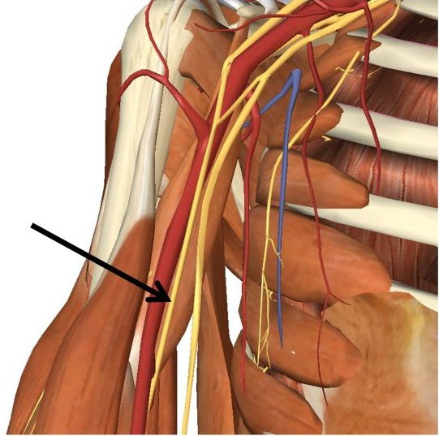
正解
[UL]Lab3 VB
median n.
出現紀錄（10 次）
- 第 1 次 · Q20 / 填充題 · [UL]Lab3 VB
- 第 4 次 · Q9 / 填充題 · [UL]Lab3 VB
- 第 13 次 · Q13 / 填充題 · [UL]Lab3 VB
- 第 19 次 · Q14 / 填充題 · [UL]Lab3 VB
- 第 47 次 · Q12 / 填充題 · [UL]Lab3 VB
- 第 59 次 · Q11 / 填充題 · [UL]Lab3 VB
- 第 69 次 · Q9 / 填充題 · [UL]Lab3 VB
- 第 74 次 · Q10 / 填充題 · [UL]Lab3 VB
- 第 77 次 · Q12 / 填充題 · [UL]Lab3 VB
- 第 81 次 · Q12 / 填充題 · [UL]Lab3 VB
48 · 上肢
腋窩至上臂前內側
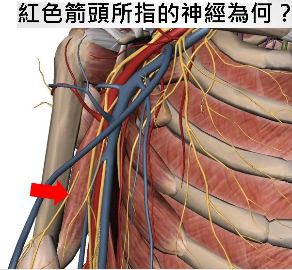
正解
[UL]2014 Lab3 VB
musculocutaneous n.
出現紀錄（18 次）
- 第 2 次 · Q22 / 填充題 · [UL]2014 Lab3 VB
- 第 8 次 · Q14 / 填充題 · [UL]2014 Lab3 VB
- 第 17 次 · Q14 / 填充題 · [UL]2014 Lab3 VB
- 第 18 次 · Q11 / 填充題 · [UL]2014 Lab3 VB
- 第 45 次 · Q13 / 填充題 · [UL]2014 Lab3 VB
- 第 50 次 · Q11 / 填充題 · [UL]2014 Lab3 VB
- 第 53 次 · Q12 / 填充題 · [UL]2014 Lab3 VB
- 第 58 次 · Q13 / 填充題 · [UL]2014 Lab3 VB
- 第 64 次 · Q11 / 填充題 · [UL]2014 Lab3 VB
- 第 67 次 · Q16 / 填充題 · [UL]2014 Lab3 VB
- 第 72 次 · Q11 / 填充題 · [UL]2014 Lab3 VB
- 第 78 次 · Q14 / 填充題 · [UL]2014 Lab3 VB
- 第 82 次 · Q11 / 填充題 · [UL]2014 Lab3 VB
- 第 88 次 · Q12 / 填充題 · [UL]2014 Lab3 VB
- 第 92 次 · Q13 / 填充題 · [UL]2014 Lab3 VB
- 第 97 次 · Q14 / 填充題 · [UL]2014 Lab3 VB
- 第 98 次 · Q14 / 填充題 · [UL]2014 Lab3 VB
- 第 100 次 · Q14 / 填充題 · [UL]2014 Lab3 VB
49 · 上肢
腋窩至上臂前內側
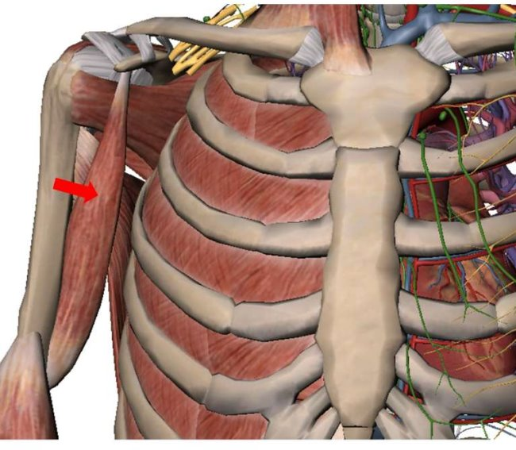
正解
[UL]2014 Lab3 VB
coracobrachialis
出現紀錄（12 次）
- 第 6 次 · Q10 / 填充題 · [UL]2014 Lab3 VB
- 第 20 次 · Q12 / 填充題 · [UL]2014 Lab3 VB
- 第 23 次 · Q12 / 填充題 · [UL]2014 Lab3 VB
- 第 44 次 · Q12 / 填充題 · [UL]2014 Lab3 VB
- 第 45 次 · Q12 / 填充題 · [UL]2014 Lab3 VB
- 第 47 次 · Q10 / 填充題 · [UL]2014 Lab3 VB
- 第 72 次 · Q9 / 填充題 · [UL]2014 Lab3 VB
- 第 84 次 · Q10 / 填充題 · [UL]2014 Lab3 VB
- 第 87 次 · Q11 / 填充題 · [UL]2014 Lab3 VB
- 第 89 次 · Q11 / 填充題 · [UL]2014 Lab3 VB
- 第 94 次 · Q11 / 填充題 · [UL]2014 Lab3 VB
- 第 97 次 · Q13 / 填充題 · [UL]2014 Lab3 VB
50 · 上肢
腋窩至上臂前內側
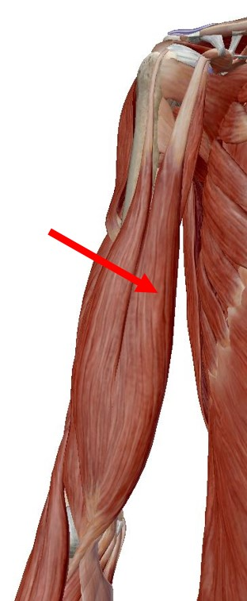
正解
[UL]2015 Lab3 VB
biceps brachii, short head
出現紀錄（9 次）
- 第 2 次 · Q18 / 填充題 · [UL]2015 Lab3 VB
- 第 18 次 · Q8 / 填充題 · [UL]2015 Lab3 VB
- 第 25 次 · Q13 / 填充題 · [UL]2015 Lab3 VB
- 第 39 次 · Q9 / 填充題 · [UL]2015 Lab3 VB
- 第 55 次 · Q10 / 填充題 · [UL]2015 Lab3 VB
- 第 68 次 · Q10 / 填充題 · [UL]2015 Lab3 VB
- 第 78 次 · Q11 / 填充題 · [UL]2015 Lab3 VB
- 第 85 次 · Q13 / 填充題 · [UL]2015 Lab3 VB
- 第 86 次 · Q7 / 填充題 · [UL]2015 Lab3 VB
51 · 上肢
腋窩至上臂前內側
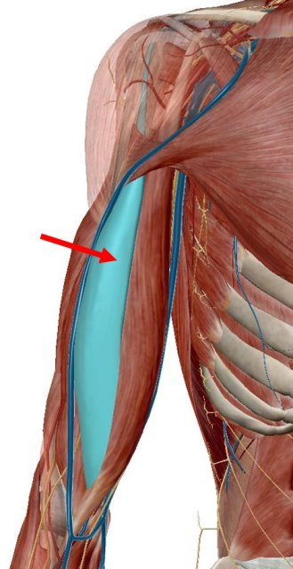
正解
[UL]2015 Lab3 VB
biceps brachii, long head
出現紀錄（11 次）
- 第 1 次 · Q13 / 填充題 · [UL]2015 Lab3 VB
- 第 32 次 · Q9 / 填充題 · [UL]2015 Lab3 VB
- 第 36 次 · Q7 / 填充題 · [UL]2015 Lab3 VB
- 第 44 次 · Q7 / 填充題 · [UL]2015 Lab3 VB
- 第 45 次 · Q10 / 填充題 · [UL]2015 Lab3 VB
- 第 46 次 · Q9 / 填充題 · [UL]2015 Lab3 VB
- 第 49 次 · Q7 / 填充題 · [UL]2015 Lab3 VB
- 第 80 次 · Q7 / 填充題 · [UL]2015 Lab3 VB
- 第 81 次 · Q6 / 填充題 · [UL]2015 Lab3 VB
- 第 83 次 · Q6 / 填充題 · [UL]2015 Lab3 VB
- 第 99 次 · Q10 / 填充題 · [UL]2015 Lab3 VB
52 · 上肢
腋窩至上臂前內側
正解
[UL]2015 Lab3 VB
brachialis
出現紀錄（8 次）
- 第 2 次 · Q12 / 填充題 · [UL]2015 Lab3 VB
- 第 17 次 · Q9 / 填充題 · [UL]2015 Lab3 VB
- 第 22 次 · Q10 / 填充題 · [UL]2015 Lab3 VB
- 第 33 次 · Q9 / 填充題 · [UL]2015 Lab3 VB
- 第 40 次 · Q7 / 填充題 · [UL]2015 Lab3 VB
- 第 66 次 · Q9 / 填充題 · [UL]2015 Lab3 VB
- 第 83 次 · Q7 / 填充題 · [UL]2015 Lab3 VB
- 第 91 次 · Q10 / 填充題 · [UL]2015 Lab3 VB
53 · 上肢
腋窩至上臂前內側
正解
[UL]2015 Lab3 VB
brachial a.
出現紀錄（17 次）
- 第 5 次 · Q10 / 填充題 · [UL]2015 Lab3 VB
- 第 12 次 · Q10 / 填充題 · [UL]2015 Lab3 VB
- 第 16 次 · Q14 / 填充題 · [UL]2015 Lab3 VB
- 第 20 次 · Q13 / 填充題 · [UL]2015 Lab3 VB
- 第 21 次 · Q10 / 填充題 · [UL]2015 Lab3 VB
- 第 28 次 · Q13 / 填充題 · [UL]2015 Lab3 VB
- 第 31 次 · Q13 / 填充題 · [UL]2015 Lab3 VB
- 第 34 次 · Q8 / 填充題 · [UL]2015 Lab3 VB
- 第 38 次 · Q13 / 填充題 · [UL]2015 Lab3 VB
- 第 43 次 · Q11 / 填充題 · [UL]2015 Lab3 VB
- 第 50 次 · Q9 / 填充題 · [UL]2015 Lab3 VB
- 第 57 次 · Q10 / 填充題 · [UL]2015 Lab3 VB
- 第 58 次 · Q12 / 填充題 · [UL]2015 Lab3 VB
- 第 62 次 · Q9 / 填充題 · [UL]2015 Lab3 VB
- 第 69 次 · Q8 / 填充題 · [UL]2015 Lab3 VB
- 第 81 次 · Q10 / 填充題 · [UL]2015 Lab3 VB
- 第 86 次 · Q11 / 填充題 · [UL]2015 Lab3 VB
54 · 上肢
腋窩至上臂前內側
正解
[UL]Lab3 VB
basilic v.
出現紀錄（5 次）
- 第 1 次 · Q16 / 填充題 · [UL]Lab3 VB
- 第 23 次 · Q11 / 填充題 · [UL]Lab3 VB
- 第 47 次 · Q9 / 填充題 · [UL]Lab3 VB
- 第 48 次 · Q13 / 填充題 · [UL]Lab3 VB
- 第 60 次 · Q7 / 填充題 · [UL]Lab3 VB
55 · 上肢
上臂後側
正解
[UL]2015 Lab1 VB
triceps brachii, long head
出現紀錄（10 次）
- 第 35 次 · Q10 / 填充題 · [UL]2015 Lab1 VB
- 第 39 次 · Q7 / 填充題 · [UL]2015 Lab1 VB
- 第 46 次 · Q12 / 填充題 · [UL]2015 Lab1 VB
- 第 48 次 · Q11 / 填充題 · [UL]2015 Lab1 VB
- 第 55 次 · Q9 / 填充題 · [UL]2015 Lab1 VB
- 第 67 次 · Q13 / 填充題 · [UL]2015 Lab1 VB
- 第 74 次 · Q7 / 填充題 · [UL]2015 Lab1 VB
- 第 78 次 · Q10 / 填充題 · [UL]2015 Lab1 VB
- 第 90 次 · Q9 / 填充題 · [UL]2015 Lab1 VB
- 第 91 次 · Q11 / 填充題 · [UL]2015 Lab1 VB
56 · 上肢
上臂後側
正解
[UL]2015 Lab1 VB
triceps brachii, lateral head
出現紀錄（13 次）
- 第 1 次 · Q15 / 填充題 · [UL]2015 Lab1 VB
- 第 3 次 · Q13 / 填充題 · [UL]2015 Lab1 VB
- 第 5 次 · Q7 / 填充題 · [UL]2015 Lab1 VB
- 第 10 次 · Q7 / 填充題 · [UL]2015 Lab1 VB
- 第 19 次 · Q13 / 填充題 · [UL]2015 Lab1 VB
- 第 30 次 · Q10 / 填充題 · [UL]2015 Lab1 VB
- 第 38 次 · Q9 / 填充題 · [UL]2015 Lab1 VB
- 第 57 次 · Q9 / 填充題 · [UL]2015 Lab1 VB
- 第 58 次 · Q8 / 填充題 · [UL]2015 Lab1 VB
- 第 59 次 · Q7 / 填充題 · [UL]2015 Lab1 VB
- 第 60 次 · Q5 / 填充題 · [UL]2015 Lab1 VB
- 第 64 次 · Q8 / 填充題 · [UL]2015 Lab1 VB
- 第 95 次 · Q11 / 填充題 · [UL]2015 Lab1 VB
57 · 上肢
上臂後側
正解
[UL]2015 Lab1 VB
triceps brachii, medial head
出現紀錄（7 次）
- 第 11 次 · Q8 / 填充題 · [UL]2015 Lab1 VB
- 第 24 次 · Q11 / 填充題 · [UL]2015 Lab1 VB
- 第 39 次 · Q6 / 填充題 · [UL]2015 Lab1 VB
- 第 60 次 · Q4 / 填充題 · [UL]2015 Lab1 VB
- 第 83 次 · Q10 / 填充題 · [UL]2015 Lab1 VB
- 第 88 次 · Q9 / 填充題 · [UL]2015 Lab1 VB
- 第 95 次 · Q10 / 填充題 · [UL]2015 Lab1 VB
58 · 上肢
上臂後側
正解
[UL]2015 Lab3 VB
deep brachial a.
出現紀錄（7 次）
- 第 5 次 · Q9 / 填充題 · [UL]2015 Lab3 VB
- 第 41 次 · Q13 / 填充題 · [UL]2015 Lab3 VB
- 第 59 次 · Q10 / 填充題 · [UL]2015 Lab3 VB
- 第 76 次 · Q12 / 填充題 · [UL]2015 Lab3 VB
- 第 86 次 · Q10 / 填充題 · [UL]2015 Lab3 VB
- 第 88 次 · Q10 / 填充題 · [UL]2015 Lab3 VB
- 第 92 次 · Q12 / 填充題 · [UL]2015 Lab3 VB
59 · 上肢
上臂後側
正解
[UL]2014 Lab1 VB
deep brachial a.
出現紀錄（8 次）
- 第 33 次 · Q13 / 填充題 · [UL]2014 Lab1 VB
- 第 42 次 · Q16 / 填充題 · [UL]2014 Lab1 VB
- 第 51 次 · Q15 / 填充題 · [UL]2014 Lab1 VB
- 第 68 次 · Q15 / 填充題 · [UL]2014 Lab1 VB
- 第 73 次 · Q14 / 填充題 · [UL]2014 Lab1 VB
- 第 80 次 · Q13 / 填充題 · [UL]2014 Lab1 VB
- 第 89 次 · Q13 / 填充題 · [UL]2014 Lab1 VB
- 第 92 次 · Q14 / 填充題 · [UL]2014 Lab1 VB
60 · 上肢
上臂後側
正解
[UL]2015 Lab1 VB
radial n.
出現紀錄（17 次）
- 第 2 次 · Q16 / 填充題 · [UL]2015 Lab1 VB
- 第 10 次 · Q8 / 填充題 · [UL]2015 Lab1 VB
- 第 16 次 · Q12 / 填充題 · [UL]2015 Lab1 VB
- 第 27 次 · Q9 / 填充題 · [UL]2015 Lab1 VB
- 第 37 次 · Q10 / 填充題 · [UL]2015 Lab1 VB
- 第 39 次 · Q8 / 填充題 · [UL]2015 Lab1 VB
- 第 53 次 · Q10 / 填充題 · [UL]2015 Lab1 VB
- 第 56 次 · Q10 / 填充題 · [UL]2015 Lab1 VB
- 第 58 次 · Q9 / 填充題 · [UL]2015 Lab1 VB
- 第 62 次 · Q6 / 填充題 · [UL]2015 Lab1 VB
- 第 67 次 · Q14 / 填充題 · [UL]2015 Lab1 VB
- 第 69 次 · Q7 / 填充題 · [UL]2015 Lab1 VB
- 第 70 次 · Q11 / 填充題 · [UL]2015 Lab1 VB
- 第 80 次 · Q10 / 填充題 · [UL]2015 Lab1 VB
- 第 81 次 · Q8 / 填充題 · [UL]2015 Lab1 VB
- 第 93 次 · Q4 / 填充題 · [UL]2015 Lab1 VB
- 第 97 次 · Q10 / 填充題 · [UL]2015 Lab1 VB
61 · 上肢
上臂後側
正解
[UL]2015 Lab3 VB
radial n.
出現紀錄（9 次）
- 第 12 次 · Q9 / 填充題 · [UL]2015 Lab3 VB
- 第 14 次 · Q11 / 填充題 · [UL]2015 Lab3 VB
- 第 15 次 · Q13 / 填充題 · [UL]2015 Lab3 VB
- 第 58 次 · Q7 / 填充題 · [UL]2015 Lab3 VB
- 第 59 次 · Q6 / 填充題 · [UL]2015 Lab3 VB
- 第 65 次 · Q8 / 填充題 · [UL]2015 Lab3 VB
- 第 72 次 · Q8 / 填充題 · [UL]2015 Lab3 VB
- 第 82 次 · Q10 / 填充題 · [UL]2015 Lab3 VB
- 第 92 次 · Q10 / 填充題 · [UL]2015 Lab3 VB
62 · 上肢
肘前區與肘外內側
正解
[UL]2014 Lab3 VB
median cubital v.
出現紀錄（6 次）
- 第 8 次 · Q13 / 填充題 · [UL]2014 Lab3 VB
- 第 14 次 · Q12 / 填充題 · [UL]2014 Lab3 VB
- 第 36 次 · Q12 / 填充題 · [UL]2014 Lab3 VB
- 第 58 次 · Q10 / 填充題 · [UL]2014 Lab3 VB
- 第 81 次 · Q9 / 填充題 · [UL]2014 Lab3 VB
- 第 84 次 · Q9 / 填充題 · [UL]2014 Lab3 VB
63 · 上肢
肘前區與肘外內側
正解
[UL]2013 Lab3 VB
pronator teres
出現紀錄（10 次）
- 第 10 次 · Q12 / 填充題 · [UL]2013 Lab3 VB
- 第 18 次 · Q9 / 填充題 · [UL]2013 Lab3 VB
- 第 37 次 · Q11 / 填充題 · [UL]2013 Lab3 VB
- 第 42 次 · Q13 / 填充題 · [UL]2013 Lab3 VB
- 第 48 次 · Q14 / 填充題 · [UL]2013 Lab3 VB
- 第 58 次 · Q11 / 填充題 · [UL]2013 Lab3 VB
- 第 63 次 · Q13 / 填充題 · [UL]2013 Lab3 VB
- 第 71 次 · Q14 / 填充題 · [UL]2013 Lab3 VB
- 第 75 次 · Q10 / 填充題 · [UL]2013 Lab3 VB
- 第 86 次 · Q9 / 填充題 · [UL]2013 Lab3 VB
64 · 上肢
肘前區與肘外內側
正解
[UL]Lab 5 VB
supinator
出現紀錄（3 次）
- 第 6 次 · Q12 / 填充題 · [UL]Lab 5 VB
- 第 57 次 · Q14 / 填充題 · [UL]Lab 5 VB
- 第 85 次 · Q16 / 填充題 · [UL]Lab 5 VB
65 · 上肢
肘前區與肘外內側
正解
[UL]2013 Lab6 VB
annular lig.
出現紀錄（10 次）
- 第 3 次 · Q16 / 填充題 · [UL]2013 Lab6 VB
- 第 9 次 · Q16 / 填充題 · [UL]2013 Lab6 VB
- 第 14 次 · Q14 / 填充題 · [UL]2013 Lab6 VB
- 第 33 次 · Q15 / 填充題 · [UL]2013 Lab6 VB
- 第 44 次 · Q14 / 填充題 · [UL]2013 Lab6 VB
- 第 50 次 · Q13 / 填充題 · [UL]2013 Lab6 VB
- 第 55 次 · Q13 / 填充題 · [UL]2013 Lab6 VB
- 第 62 次 · Q13 / 填充題 · [UL]2013 Lab6 VB
- 第 86 次 · Q13 / 填充題 · [UL]2013 Lab6 VB
- 第 95 次 · Q14 / 填充題 · [UL]2013 Lab6 VB
66 · 上肢
肘前區與肘外內側
正解
[UL]2015 Lab6 VB
radial collateral lig.
出現紀錄（4 次）
- 第 22 次 · Q9 / 填充題 · [UL]2015 Lab6 VB
- 第 25 次 · Q8 / 填充題 · [UL]2015 Lab6 VB
- 第 84 次 · Q3 / 填充題 · [UL]2015 Lab6 VB
- 第 100 次 · Q9 / 填充題 · [UL]2015 Lab6 VB
67 · 上肢
肘前區與肘外內側
正解
[UL]2015 Lab5 VB
anconeus
出現紀錄（12 次）
- 第 7 次 · Q13 / 填充題 · [UL]2015 Lab5 VB
- 第 14 次 · Q16 / 填充題 · [UL]2015 Lab5 VB
- 第 23 次 · Q16 / 填充題 · [UL]2015 Lab5 VB
- 第 36 次 · Q14 / 填充題 · [UL]2015 Lab5 VB
- 第 57 次 · Q13 / 填充題 · [UL]2015 Lab5 VB
- 第 69 次 · Q12 / 填充題 · [UL]2015 Lab5 VB
- 第 72 次 · Q13 / 填充題 · [UL]2015 Lab5 VB
- 第 86 次 · Q15 / 填充題 · [UL]2015 Lab5 VB
- 第 89 次 · Q14 / 填充題 · [UL]2015 Lab5 VB
- 第 91 次 · Q17 / 填充題 · [UL]2015 Lab5 VB
- 第 94 次 · Q14 / 填充題 · [UL]2015 Lab5 VB
- 第 99 次 · Q13 / 填充題 · [UL]2015 Lab5 VB
68 · 上肢
肘前區與肘外內側
正解
[UL]2015 Lab6 VB
ulnar collateral lig.
出現紀錄（11 次）
- 第 15 次 · Q8 / 填充題 · [UL]2015 Lab6 VB
- 第 27 次 · Q7 / 填充題 · [UL]2015 Lab6 VB
- 第 31 次 · Q5 / 填充題 · [UL]2015 Lab6 VB
- 第 48 次 · Q8 / 填充題 · [UL]2015 Lab6 VB
- 第 56 次 · Q9 / 填充題 · [UL]2015 Lab6 VB
- 第 61 次 · Q5 / 填充題 · [UL]2015 Lab6 VB
- 第 63 次 · Q7 / 填充題 · [UL]2015 Lab6 VB
- 第 70 次 · Q9 / 填充題 · [UL]2015 Lab6 VB
- 第 88 次 · Q8 / 填充題 · [UL]2015 Lab6 VB
- 第 91 次 · Q8 / 填充題 · [UL]2015 Lab6 VB
- 第 92 次 · Q7 / 填充題 · [UL]2015 Lab6 VB
69 · 上肢
前臂前側
正解
[UL]2015 Lab3 VB
flexor carpi radialis
出現紀錄（13 次）
- 第 6 次 · Q9 / 填充題 · [UL]2015 Lab3 VB
- 第 7 次 · Q9 / 填充題 · [UL]2015 Lab3 VB
- 第 11 次 · Q6 / 填充題 · [UL]2015 Lab3 VB
- 第 13 次 · Q8 / 填充題 · [UL]2015 Lab3 VB
- 第 35 次 · Q9 / 填充題 · [UL]2015 Lab3 VB
- 第 37 次 · Q9 / 填充題 · [UL]2015 Lab3 VB
- 第 44 次 · Q5 / 填充題 · [UL]2015 Lab3 VB
- 第 51 次 · Q11 / 填充題 · [UL]2015 Lab3 VB
- 第 64 次 · Q5 / 填充題 · [UL]2015 Lab3 VB
- 第 67 次 · Q12 / 填充題 · [UL]2015 Lab3 VB
- 第 85 次 · Q10 / 填充題 · [UL]2015 Lab3 VB
- 第 97 次 · Q8 / 填充題 · [UL]2015 Lab3 VB
- 第 99 次 · Q9 / 填充題 · [UL]2015 Lab3 VB
70 · 上肢
前臂前側
正解
[UL]2015 Lab3 VB
palmaris longus
出現紀錄（9 次）
- 第 10 次 · Q9 / 填充題 · [UL]2015 Lab3 VB
- 第 24 次 · Q12 / 填充題 · [UL]2015 Lab3 VB
- 第 27 次 · Q10 / 填充題 · [UL]2015 Lab3 VB
- 第 34 次 · Q7 / 填充題 · [UL]2015 Lab3 VB
- 第 44 次 · Q9 / 填充題 · [UL]2015 Lab3 VB
- 第 62 次 · Q7 / 填充題 · [UL]2015 Lab3 VB
- 第 74 次 · Q8 / 填充題 · [UL]2015 Lab3 VB
- 第 85 次 · Q12 / 填充題 · [UL]2015 Lab3 VB
- 第 94 次 · Q10 / 填充題 · [UL]2015 Lab3 VB
71 · 上肢
前臂前側
正解
[UL]2015 Lab3 VB
flexor digitorum superficialis
出現紀錄（6 次）
- 第 5 次 · Q5 / 填充題 · [UL]2015 Lab3 VB
- 第 51 次 · Q12 / 填充題 · [UL]2015 Lab3 VB
- 第 59 次 · Q5 / 填充題 · [UL]2015 Lab3 VB
- 第 60 次 · Q2 / 填充題 · [UL]2015 Lab3 VB
- 第 62 次 · Q5 / 填充題 · [UL]2015 Lab3 VB
- 第 94 次 · Q7 / 填充題 · [UL]2015 Lab3 VB
72 · 上肢
前臂前側
正解
[UL]2013 Lab3 VB
flexor carpi ulnaris
出現紀錄（10 次）
- 第 5 次 · Q8 / 填充題 · [UL]2013 Lab3 VB
- 第 17 次 · Q10 / 填充題 · [UL]2013 Lab3 VB
- 第 23 次 · Q13 / 填充題 · [UL]2013 Lab3 VB
- 第 33 次 · Q11 / 填充題 · [UL]2013 Lab3 VB
- 第 59 次 · Q9 / 填充題 · [UL]2013 Lab3 VB
- 第 68 次 · Q12 / 填充題 · [UL]2013 Lab3 VB
- 第 72 次 · Q10 / 填充題 · [UL]2013 Lab3 VB
- 第 74 次 · Q9 / 填充題 · [UL]2013 Lab3 VB
- 第 78 次 · Q12 / 填充題 · [UL]2013 Lab3 VB
- 第 91 次 · Q13 / 填充題 · [UL]2013 Lab3 VB
73 · 上肢
前臂前側
正解
[UL]2015 Lab 3 VB
flexor digitorum profundus
出現紀錄（12 次）
- 第 4 次 · Q17 / 填充題 · [UL]2015 Lab 3 VB
- 第 7 次 · Q17 / 填充題 · [UL]2015 Lab 3 VB
- 第 12 次 · Q18 / 填充題 · [UL]2015 Lab 3 VB
- 第 36 次 · Q18 / 填充題 · [UL]2015 Lab 3 VB
- 第 44 次 · Q20 / 填充題 · [UL]2015 Lab 3 VB
- 第 63 次 · Q17 / 填充題 · [UL]2015 Lab 3 VB
- 第 66 次 · Q18 / 填充題 · [UL]2015 Lab 3 VB
- 第 77 次 · Q16 / 填充題 · [UL]2015 Lab 3 VB
- 第 83 次 · Q18 / 填充題 · [UL]2015 Lab 3 VB
- 第 86 次 · Q20 / 填充題 · [UL]2015 Lab 3 VB
- 第 90 次 · Q19 / 填充題 · [UL]2015 Lab 3 VB
- 第 91 次 · Q19 / 填充題 · [UL]2015 Lab 3 VB
74 · 上肢
前臂前側
正解
[UL]2015 Lab3 VB
flexor pollicis longus
出現紀錄（13 次）
- 第 2 次 · Q11 / 填充題 · [UL]2015 Lab3 VB
- 第 7 次 · Q10 / 填充題 · [UL]2015 Lab3 VB
- 第 9 次 · Q11 / 填充題 · [UL]2015 Lab3 VB
- 第 24 次 · Q9 / 填充題 · [UL]2015 Lab3 VB
- 第 42 次 · Q7 / 填充題 · [UL]2015 Lab3 VB
- 第 44 次 · Q6 / 填充題 · [UL]2015 Lab3 VB
- 第 50 次 · Q8 / 填充題 · [UL]2015 Lab3 VB
- 第 64 次 · Q6 / 填充題 · [UL]2015 Lab3 VB
- 第 66 次 · Q8 / 填充題 · [UL]2015 Lab3 VB
- 第 75 次 · Q8 / 填充題 · [UL]2015 Lab3 VB
- 第 82 次 · Q8 / 填充題 · [UL]2015 Lab3 VB
- 第 90 次 · Q8 / 填充題 · [UL]2015 Lab3 VB
- 第 94 次 · Q8 / 填充題 · [UL]2015 Lab3 VB
75 · 上肢
前臂外側與後側
正解
[UL]Lab 5 VB
brachioradialis
出現紀錄（6 次）
- 第 35 次 · Q14 / 填充題 · [UL]Lab 5 VB
- 第 37 次 · Q14 / 填充題 · [UL]Lab 5 VB
- 第 40 次 · Q16 / 填充題 · [UL]Lab 5 VB
- 第 62 次 · Q14 / 填充題 · [UL]Lab 5 VB
- 第 65 次 · Q14 / 填充題 · [UL]Lab 5 VB
- 第 93 次 · Q12 / 填充題 · [UL]Lab 5 VB
76 · 上肢
前臂外側與後側
正解
[UL]2015 Lab5 VB
extensor carpi radialis longus
出現紀錄（8 次）
- 第 21 次 · Q14 / 填充題 · [UL]2015 Lab5 VB
- 第 53 次 · Q15 / 填充題 · [UL]2015 Lab5 VB
- 第 60 次 · Q12 / 填充題 · [UL]2015 Lab5 VB
- 第 76 次 · Q15 / 填充題 · [UL]2015 Lab5 VB
- 第 83 次 · Q14 / 填充題 · [UL]2015 Lab5 VB
- 第 84 次 · Q15 / 填充題 · [UL]2015 Lab5 VB
- 第 98 次 · Q15 / 填充題 · [UL]2015 Lab5 VB
- 第 100 次 · Q17 / 填充題 · [UL]2015 Lab5 VB
77 · 上肢
前臂外側與後側
正解
[UL]Lab 5 VB
extensor digitorum
出現紀錄（4 次）
- 第 22 次 · Q15 / 填充題 · [UL]Lab 5 VB
- 第 45 次 · Q15 / 填充題 · [UL]Lab 5 VB
- 第 49 次 · Q15 / 填充題 · [UL]Lab 5 VB
- 第 90 次 · Q15 / 填充題 · [UL]Lab 5 VB
78 · 上肢
前臂外側與後側
正解
[UL]2015 Lab5 VB
extensor digiti minimi
出現紀錄（10 次）
- 第 5 次 · Q13 / 填充題 · [UL]2015 Lab5 VB
- 第 18 次 · Q15 / 填充題 · [UL]2015 Lab5 VB
- 第 23 次 · Q15 / 填充題 · [UL]2015 Lab5 VB
- 第 27 次 · Q14 / 填充題 · [UL]2015 Lab5 VB
- 第 40 次 · Q13 / 填充題 · [UL]2015 Lab5 VB
- 第 43 次 · Q14 / 填充題 · [UL]2015 Lab5 VB
- 第 46 次 · Q15 / 填充題 · [UL]2015 Lab5 VB
- 第 58 次 · Q15 / 填充題 · [UL]2015 Lab5 VB
- 第 90 次 · Q14 / 填充題 · [UL]2015 Lab5 VB
- 第 93 次 · Q11 / 填充題 · [UL]2015 Lab5 VB
79 · 上肢
前臂外側與後側
正解
[UL]2015 Lab5 VB
extensor carpi ulnaris
出現紀錄（12 次）
- 第 1 次 · Q14 / 填充題 · [UL]2015 Lab5 VB
- 第 15 次 · Q12 / 填充題 · [UL]2015 Lab5 VB
- 第 19 次 · Q11 / 填充題 · [UL]2015 Lab5 VB
- 第 20 次 · Q10 / 填充題 · [UL]2015 Lab5 VB
- 第 25 次 · Q12 / 填充題 · [UL]2015 Lab5 VB
- 第 33 次 · Q10 / 填充題 · [UL]2015 Lab5 VB
- 第 40 次 · Q8 / 填充題 · [UL]2015 Lab5 VB
- 第 41 次 · Q10 / 填充題 · [UL]2015 Lab5 VB
- 第 45 次 · Q11 / 填充題 · [UL]2015 Lab5 VB
- 第 49 次 · Q9 / 填充題 · [UL]2015 Lab5 VB
- 第 73 次 · Q8 / 填充題 · [UL]2015 Lab5 VB
- 第 100 次 · Q10 / 填充題 · [UL]2015 Lab5 VB
80 · 上肢
前臂外側與後側
正解
[UL]2015 Lab5 VB
posterior interosseous n.
出現紀錄（8 次）
- 第 1 次 · Q28 / 填充題 · [UL]2015 Lab5 VB
- 第 10 次 · Q15 / 填充題 · [UL]2015 Lab5 VB
- 第 16 次 · Q16 / 填充題 · [UL]2015 Lab5 VB
- 第 24 次 · Q16 / 填充題 · [UL]2015 Lab5 VB
- 第 43 次 · Q15 / 填充題 · [UL]2015 Lab5 VB
- 第 66 次 · Q13 / 填充題 · [UL]2015 Lab5 VB
- 第 79 次 · Q13 / 填充題 · [UL]2015 Lab5 VB
- 第 91 次 · Q16 / 填充題 · [UL]2015 Lab5 VB
81 · 上肢
前臂外側與後側
正解
[UL]Lab 5 VB
extensor indicis
出現紀錄（7 次）
- 第 1 次 · Q29 / 填充題 · [UL]Lab 5 VB
- 第 4 次 · Q12 / 填充題 · [UL]Lab 5 VB
- 第 6 次 · Q11 / 填充題 · [UL]Lab 5 VB
- 第 40 次 · Q15 / 填充題 · [UL]Lab 5 VB
- 第 46 次 · Q16 / 填充題 · [UL]Lab 5 VB
- 第 47 次 · Q15 / 填充題 · [UL]Lab 5 VB
- 第 85 次 · Q15 / 填充題 · [UL]Lab 5 VB
82 · 上肢
前臂遠端與橈側腕背
正解
[UL]Lab 5 VB
abductor pollicis longus
出現紀錄（7 次）
- 第 4 次 · Q11 / 填充題 · [UL]Lab 5 VB
- 第 47 次 · Q14 / 填充題 · [UL]Lab 5 VB
- 第 53 次 · Q16 / 填充題 · [UL]Lab 5 VB
- 第 71 次 · Q17 / 填充題 · [UL]Lab 5 VB
- 第 81 次 · Q14 / 填充題 · [UL]Lab 5 VB
- 第 95 次 · Q15 / 填充題 · [UL]Lab 5 VB
- 第 99 次 · Q14 / 填充題 · [UL]Lab 5 VB
83 · 上肢
前臂遠端與橈側腕背
正解
[UL]2015 Lab5 VB
extensor pollicis brevis
出現紀錄（14 次）
- 第 3 次 · Q12 / 填充題 · [UL]2015 Lab5 VB
- 第 11 次 · Q7 / 填充題 · [UL]2015 Lab5 VB
- 第 13 次 · Q9 / 填充題 · [UL]2015 Lab5 VB
- 第 16 次 · Q11 / 填充題 · [UL]2015 Lab5 VB
- 第 29 次 · Q12 / 填充題 · [UL]2015 Lab5 VB
- 第 30 次 · Q9 / 填充題 · [UL]2015 Lab5 VB
- 第 46 次 · Q10 / 填充題 · [UL]2015 Lab5 VB
- 第 49 次 · Q8 / 填充題 · [UL]2015 Lab5 VB
- 第 63 次 · Q10 / 填充題 · [UL]2015 Lab5 VB
- 第 71 次 · Q10 / 填充題 · [UL]2015 Lab5 VB
- 第 75 次 · Q9 / 填充題 · [UL]2015 Lab5 VB
- 第 76 次 · Q10 / 填充題 · [UL]2015 Lab5 VB
- 第 87 次 · Q9 / 填充題 · [UL]2015 Lab5 VB
- 第 98 次 · Q11 / 填充題 · [UL]2015 Lab5 VB
84 · 上肢
前臂遠端與橈側腕背
正解
[UL]2015 Lab6 VB
extensor pollicis longus
出現紀錄（4 次）
- 第 29 次 · Q11 / 填充題 · [UL]2015 Lab6 VB
- 第 52 次 · Q12 / 填充題 · [UL]2015 Lab6 VB
- 第 60 次 · Q3 / 填充題 · [UL]2015 Lab6 VB
- 第 85 次 · Q11 / 填充題 · [UL]2015 Lab6 VB
85 · 上肢
前臂遠端與橈側腕背
正解
[UL]2015 Lab3 VB
superficial br. of radial n.
出現紀錄（12 次）
- 第 18 次 · Q10 / 填充題 · [UL]2015 Lab3 VB
- 第 26 次 · Q13 / 填充題 · [UL]2015 Lab3 VB
- 第 30 次 · Q12 / 填充題 · [UL]2015 Lab3 VB
- 第 31 次 · Q14 / 填充題 · [UL]2015 Lab3 VB
- 第 34 次 · Q9 / 填充題 · [UL]2015 Lab3 VB
- 第 41 次 · Q14 / 填充題 · [UL]2015 Lab3 VB
- 第 77 次 · Q10 / 填充題 · [UL]2015 Lab3 VB
- 第 78 次 · Q13 / 填充題 · [UL]2015 Lab3 VB
- 第 88 次 · Q11 / 填充題 · [UL]2015 Lab3 VB
- 第 94 次 · Q12 / 填充題 · [UL]2015 Lab3 VB
- 第 96 次 · Q12 / 填充題 · [UL]2015 Lab3 VB
- 第 100 次 · Q13 / 填充題 · [UL]2015 Lab3 VB
86 · 上肢
前臂遠端與橈側腕背
正解
[UL] Lab3 VB
radial a.
出現紀錄（11 次）
- 第 2 次 · Q19 / 填充題 · [UL] Lab3 VB
- 第 9 次 · Q13 / 填充題 · [UL] Lab3 VB
- 第 22 次 · Q11 / 填充題 · [UL] Lab3 VB
- 第 28 次 · Q11 / 填充題 · [UL] Lab3 VB
- 第 30 次 · Q11 / 填充題 · [UL] Lab3 VB
- 第 36 次 · Q10 / 填充題 · [UL] Lab3 VB
- 第 52 次 · Q13 / 填充題 · [UL] Lab3 VB
- 第 59 次 · Q8 / 填充題 · [UL] Lab3 VB
- 第 68 次 · Q11 / 填充題 · [UL] Lab3 VB
- 第 86 次 · Q8 / 填充題 · [UL] Lab3 VB
- 第 92 次 · Q11 / 填充題 · [UL] Lab3 VB
87 · 上肢
前臂遠端與橈側腕背
正解
[UL]2015 Lab5 VB
radial a.
出現紀錄（7 次）
- 第 31 次 · Q16 / 填充題 · [UL]2015 Lab5 VB
- 第 45 次 · Q14 / 填充題 · [UL]2015 Lab5 VB
- 第 56 次 · Q13 / 填充題 · [UL]2015 Lab5 VB
- 第 59 次 · Q14 / 填充題 · [UL]2015 Lab5 VB
- 第 64 次 · Q14 / 填充題 · [UL]2015 Lab5 VB
- 第 82 次 · Q14 / 填充題 · [UL]2015 Lab5 VB
- 第 96 次 · Q13 / 填充題 · [UL]2015 Lab5 VB
88 · 上肢
前臂遠端與橈側腕背
正解
[UL]2015 Lab5 VB
dorsalis indicis a.
出現紀錄（9 次）
- 第 10 次 · Q14 / 填充題 · [UL]2015 Lab5 VB
- 第 14 次 · Q15 / 填充題 · [UL]2015 Lab5 VB
- 第 21 次 · Q13 / 填充題 · [UL]2015 Lab5 VB
- 第 31 次 · Q15 / 填充題 · [UL]2015 Lab5 VB
- 第 40 次 · Q14 / 填充題 · [UL]2015 Lab5 VB
- 第 60 次 · Q11 / 填充題 · [UL]2015 Lab5 VB
- 第 68 次 · Q16 / 填充題 · [UL]2015 Lab5 VB
- 第 74 次 · Q15 / 填充題 · [UL]2015 Lab5 VB
- 第 97 次 · Q15 / 填充題 · [UL]2015 Lab5 VB
89 · 上肢
腕掌側與尺側手掌
正解
[UL]Lab3 VB
pronator quadratus
出現紀錄（12 次）
- 第 4 次 · Q7 / 填充題 · [UL]Lab3 VB
- 第 7 次 · Q11 / 填充題 · [UL]Lab3 VB
- 第 8 次 · Q12 / 填充題 · [UL]Lab3 VB
- 第 29 次 · Q13 / 填充題 · [UL]Lab3 VB
- 第 36 次 · Q11 / 填充題 · [UL]Lab3 VB
- 第 40 次 · Q10 / 填充題 · [UL]Lab3 VB
- 第 44 次 · Q11 / 填充題 · [UL]Lab3 VB
- 第 46 次 · Q13 / 填充題 · [UL]Lab3 VB
- 第 47 次 · Q8 / 填充題 · [UL]Lab3 VB
- 第 64 次 · Q10 / 填充題 · [UL]Lab3 VB
- 第 84 次 · Q8 / 填充題 · [UL]Lab3 VB
- 第 93 次 · Q6 / 填充題 · [UL]Lab3 VB
90 · 上肢
腕掌側與尺側手掌
正解
[UL] 2015 Lab4 VB
flexor retinaculum
出現紀錄（9 次）
- 第 13 次 · Q10 / 填充題 · [UL] 2015 Lab4 VB
- 第 31 次 · Q11 / 填充題 · [UL] 2015 Lab4 VB
- 第 40 次 · Q9 / 填充題 · [UL] 2015 Lab4 VB
- 第 43 次 · Q10 / 填充題 · [UL] 2015 Lab4 VB
- 第 48 次 · Q12 / 填充題 · [UL] 2015 Lab4 VB
- 第 54 次 · Q11 / 填充題 · [UL] 2015 Lab4 VB
- 第 64 次 · Q9 / 填充題 · [UL] 2015 Lab4 VB
- 第 79 次 · Q11 / 填充題 · [UL] 2015 Lab4 VB
- 第 93 次 · Q5 / 填充題 · [UL] 2015 Lab4 VB
91 · 上肢
腕掌側與尺側手掌
正解
[UL]2013 Lab4 VB
superficial palmar arch
出現紀錄（7 次）
- 第 1 次 · Q17 / 填充題 · [UL]2013 Lab4 VB
- 第 36 次 · Q13 / 填充題 · [UL]2013 Lab4 VB
- 第 37 次 · Q12 / 填充題 · [UL]2013 Lab4 VB
- 第 48 次 · Q15 / 填充題 · [UL]2013 Lab4 VB
- 第 65 次 · Q11 / 填充題 · [UL]2013 Lab4 VB
- 第 77 次 · Q9 / 填充題 · [UL]2013 Lab4 VB
- 第 80 次 · Q11 / 填充題 · [UL]2013 Lab4 VB
92 · 上肢
腕掌側與尺側手掌
正解
[UL]Lab3 VB
ulnar n.
出現紀錄（13 次）
- 第 1 次 · Q19 / 填充題 · [UL]Lab3 VB
- 第 2 次 · Q20 / 填充題 · [UL]Lab3 VB
- 第 12 次 · Q11 / 填充題 · [UL]Lab3 VB
- 第 14 次 · Q13 / 填充題 · [UL]Lab3 VB
- 第 17 次 · Q12 / 填充題 · [UL]Lab3 VB
- 第 26 次 · Q14 / 填充題 · [UL]Lab3 VB
- 第 34 次 · Q10 / 填充題 · [UL]Lab3 VB
- 第 38 次 · Q14 / 填充題 · [UL]Lab3 VB
- 第 54 次 · Q14 / 填充題 · [UL]Lab3 VB
- 第 62 次 · Q11 / 填充題 · [UL]Lab3 VB
- 第 76 次 · Q13 / 填充題 · [UL]Lab3 VB
- 第 79 次 · Q12 / 填充題 · [UL]Lab3 VB
- 第 94 次 · Q13 / 填充題 · [UL]Lab3 VB
93 · 上肢
腕掌側與尺側手掌
正解
[UL]2015 Lab4 VB
palmaris brevis
出現紀錄（8 次）
- 第 1 次 · Q12 / 填充題 · [UL]2015 Lab4 VB
- 第 6 次 · Q8 / 填充題 · [UL]2015 Lab4 VB
- 第 55 次 · Q8 / 填充題 · [UL]2015 Lab4 VB
- 第 64 次 · Q4 / 填充題 · [UL]2015 Lab4 VB
- 第 71 次 · Q9 / 填充題 · [UL]2015 Lab4 VB
- 第 82 次 · Q7 / 填充題 · [UL]2015 Lab4 VB
- 第 91 次 · Q9 / 填充題 · [UL]2015 Lab4 VB
- 第 96 次 · Q10 / 填充題 · [UL]2015 Lab4 VB
94 · 上肢
腕掌側與尺側手掌
正解
[UL]2013 Lab4 VB
flexor digiti minimi brevis
出現紀錄（6 次）
- 第 3 次 · Q15 / 填充題 · [UL]2013 Lab4 VB
- 第 22 次 · Q13 / 填充題 · [UL]2013 Lab4 VB
- 第 28 次 · Q12 / 填充題 · [UL]2013 Lab4 VB
- 第 29 次 · Q14 / 填充題 · [UL]2013 Lab4 VB
- 第 42 次 · Q14 / 填充題 · [UL]2013 Lab4 VB
- 第 96 次 · Q11 / 填充題 · [UL]2013 Lab4 VB
95 · 上肢
手掌深層與拇指根部
正解
[UL]2014 Lab4 VB
deep palmar arch
出現紀錄（12 次）
- 第 4 次 · Q8 / 填充題 · [UL]2014 Lab4 VB
- 第 16 次 · Q13 / 填充題 · [UL]2014 Lab4 VB
- 第 38 次 · Q12 / 填充題 · [UL]2014 Lab4 VB
- 第 39 次 · Q10 / 填充題 · [UL]2014 Lab4 VB
- 第 42 次 · Q12 / 填充題 · [UL]2014 Lab4 VB
- 第 61 次 · Q10 / 填充題 · [UL]2014 Lab4 VB
- 第 62 次 · Q8 / 填充題 · [UL]2014 Lab4 VB
- 第 71 次 · Q13 / 填充題 · [UL]2014 Lab4 VB
- 第 73 次 · Q9 / 填充題 · [UL]2014 Lab4 VB
- 第 76 次 · Q11 / 填充題 · [UL]2014 Lab4 VB
- 第 77 次 · Q8 / 填充題 · [UL]2014 Lab4 VB
- 第 89 次 · Q10 / 填充題 · [UL]2014 Lab4 VB
96 · 上肢
手掌深層與拇指根部
正解
[UL]2015 Lab4 VB
adductor pollicis
出現紀錄（11 次）
- 第 3 次 · Q14 / 填充題 · [UL]2015 Lab4 VB
- 第 10 次 · Q11 / 填充題 · [UL]2015 Lab4 VB
- 第 13 次 · Q12 / 填充題 · [UL]2015 Lab4 VB
- 第 28 次 · Q10 / 填充題 · [UL]2015 Lab4 VB
- 第 31 次 · Q12 / 填充題 · [UL]2015 Lab4 VB
- 第 42 次 · Q11 / 填充題 · [UL]2015 Lab4 VB
- 第 49 次 · Q12 / 填充題 · [UL]2015 Lab4 VB
- 第 54 次 · Q13 / 填充題 · [UL]2015 Lab4 VB
- 第 56 次 · Q12 / 填充題 · [UL]2015 Lab4 VB
- 第 61 次 · Q9 / 填充題 · [UL]2015 Lab4 VB
- 第 83 次 · Q11 / 填充題 · [UL]2015 Lab4 VB
97 · 上肢
手掌深層與拇指根部
正解
[UL]2015 Lab4 VB
abductor pollicis brevis
出現紀錄（13 次）
- 第 12 次 · Q7 / 填充題 · [UL]2015 Lab4 VB
- 第 15 次 · Q11 / 填充題 · [UL]2015 Lab4 VB
- 第 16 次 · Q10 / 填充題 · [UL]2015 Lab4 VB
- 第 17 次 · Q7 / 填充題 · [UL]2015 Lab4 VB
- 第 25 次 · Q10 / 填充題 · [UL]2015 Lab4 VB
- 第 34 次 · Q6 / 填充題 · [UL]2015 Lab4 VB
- 第 43 次 · Q9 / 填充題 · [UL]2015 Lab4 VB
- 第 55 次 · Q7 / 填充題 · [UL]2015 Lab4 VB
- 第 62 次 · Q4 / 填充題 · [UL]2015 Lab4 VB
- 第 82 次 · Q6 / 填充題 · [UL]2015 Lab4 VB
- 第 85 次 · Q9 / 填充題 · [UL]2015 Lab4 VB
- 第 89 次 · Q6 / 填充題 · [UL]2015 Lab4 VB
- 第 94 次 · Q6 / 填充題 · [UL]2015 Lab4 VB
98 · 上肢
手掌深層與拇指根部
正解
[UL]2015 Lab4 VB
flexor pollicis brevis
出現紀錄（17 次）
- 第 2 次 · Q10 / 填充題 · [UL]2015 Lab4 VB
- 第 6 次 · Q7 / 填充題 · [UL]2015 Lab4 VB
- 第 15 次 · Q10 / 填充題 · [UL]2015 Lab4 VB
- 第 17 次 · Q6 / 填充題 · [UL]2015 Lab4 VB
- 第 19 次 · Q10 / 填充題 · [UL]2015 Lab4 VB
- 第 28 次 · Q7 / 填充題 · [UL]2015 Lab4 VB
- 第 30 次 · Q8 / 填充題 · [UL]2015 Lab4 VB
- 第 31 次 · Q6 / 填充題 · [UL]2015 Lab4 VB
- 第 35 次 · Q8 / 填充題 · [UL]2015 Lab4 VB
- 第 51 次 · Q10 / 填充題 · [UL]2015 Lab4 VB
- 第 58 次 · Q6 / 填充題 · [UL]2015 Lab4 VB
- 第 63 次 · Q9 / 填充題 · [UL]2015 Lab4 VB
- 第 77 次 · Q7 / 填充題 · [UL]2015 Lab4 VB
- 第 83 次 · Q5 / 填充題 · [UL]2015 Lab4 VB
- 第 87 次 · Q8 / 填充題 · [UL]2015 Lab4 VB
- 第 92 次 · Q9 / 填充題 · [UL]2015 Lab4 VB
- 第 97 次 · Q7 / 填充題 · [UL]2015 Lab4 VB
99 · 上肢
手掌深層與拇指根部
正解
[UL]2015 Lab4 VB
opponens pollicis
出現紀錄（9 次）
- 第 15 次 · Q9 / 填充題 · [UL]2015 Lab4 VB
- 第 23 次 · Q10 / 填充題 · [UL]2015 Lab4 VB
- 第 24 次 · Q8 / 填充題 · [UL]2015 Lab4 VB
- 第 25 次 · Q9 / 填充題 · [UL]2015 Lab4 VB
- 第 29 次 · Q10 / 填充題 · [UL]2015 Lab4 VB
- 第 51 次 · Q9 / 填充題 · [UL]2015 Lab4 VB
- 第 63 次 · Q8 / 填充題 · [UL]2015 Lab4 VB
- 第 75 次 · Q7 / 填充題 · [UL]2015 Lab4 VB
- 第 92 次 · Q8 / 填充題 · [UL]2015 Lab4 VB
100 · 上肢
手指屈肌腱與蚓狀肌
正解
[UL]2015 Lab4 VB
tendon of flexor digitorum superficialis
出現紀錄（13 次）
- 第 2 次 · Q17 / 填充題 · [UL]2015 Lab4 VB
- 第 10 次 · Q10 / 填充題 · [UL]2015 Lab4 VB
- 第 13 次 · Q11 / 填充題 · [UL]2015 Lab4 VB
- 第 15 次 · Q14 / 填充題 · [UL]2015 Lab4 VB
- 第 26 次 · Q12 / 填充題 · [UL]2015 Lab4 VB
- 第 35 次 · Q11 / 填充題 · [UL]2015 Lab4 VB
- 第 42 次 · Q10 / 填充題 · [UL]2015 Lab4 VB
- 第 44 次 · Q10 / 填充題 · [UL]2015 Lab4 VB
- 第 49 次 · Q11 / 填充題 · [UL]2015 Lab4 VB
- 第 54 次 · Q12 / 填充題 · [UL]2015 Lab4 VB
- 第 90 次 · Q10 / 填充題 · [UL]2015 Lab4 VB
- 第 97 次 · Q11 / 填充題 · [UL]2015 Lab4 VB
- 第 99 次 · Q11 / 填充題 · [UL]2015 Lab4 VB
101 · 上肢
手指屈肌腱與蚓狀肌
正解
[UL]Lab4 VB
tendon of flexor digitorum profundus
出現紀錄（4 次）
- 第 22 次 · Q12 / 填充題 · [UL]Lab4 VB
- 第 60 次 · Q6 / 填充題 · [UL]Lab4 VB
- 第 89 次 · Q9 / 填充題 · [UL]Lab4 VB
- 第 97 次 · Q12 / 填充題 · [UL]Lab4 VB
102 · 上肢
手指屈肌腱與蚓狀肌
正解
[UL]2015 Lab4 VB
lumbrical
出現紀錄（10 次）
- 第 1 次 · Q11 / 填充題 · [UL]2015 Lab4 VB
- 第 12 次 · Q6 / 填充題 · [UL]2015 Lab4 VB
- 第 26 次 · Q9 / 填充題 · [UL]2015 Lab4 VB
- 第 27 次 · Q8 / 填充題 · [UL]2015 Lab4 VB
- 第 33 次 · Q8 / 填充題 · [UL]2015 Lab4 VB
- 第 38 次 · Q8 / 填充題 · [UL]2015 Lab4 VB
- 第 66 次 · Q7 / 填充題 · [UL]2015 Lab4 VB
- 第 74 次 · Q6 / 填充題 · [UL]2015 Lab4 VB
- 第 84 次 · Q4 / 填充題 · [UL]2015 Lab4 VB
- 第 97 次 · Q6 / 填充題 · [UL]2015 Lab4 VB
103 · 胸部
胸廓入口與上縱膈
正解
[Tx][UL]2015 Lab2 VB
subclavius
出現紀錄（13 次）
- 第 5 次 · Q14 / 填充題 · [Tx][UL]2015 Lab2 VB
- 第 7 次 · Q14 / 填充題 · [Tx][UL]2015 Lab2 VB
- 第 10 次 · Q17 / 填充題 · [Tx][UL]2015 Lab2 VB
- 第 19 次 · Q17 / 填充題 · [Tx][UL]2015 Lab2 VB
- 第 23 次 · Q17 / 填充題 · [Tx][UL]2015 Lab2 VB
- 第 25 次 · Q15 / 填充題 · [Tx][UL]2015 Lab2 VB
- 第 27 次 · Q15 / 填充題 · [Tx][UL]2015 Lab2 VB
- 第 35 次 · Q16 / 填充題 · [Tx][UL]2015 Lab2 VB
- 第 48 次 · Q17 / 填充題 · [Tx][UL]2015 Lab2 VB
- 第 50 次 · Q15 / 填充題 · [Tx][UL]2015 Lab2 VB
- 第 68 次 · Q17 / 填充題 · [Tx][UL]2015 Lab2 VB
- 第 80 次 · Q15 / 填充題 · [Tx][UL]2015 Lab2 VB
- 第 82 次 · Q16 / 填充題 · [Tx][UL]2015 Lab2 VB
104 · 胸部
胸廓入口與上縱膈
正解
[Tx]2015 Lab3 VB
subclavian a.
出現紀錄（12 次）
- 第 15 次 · Q18 / 填充題 · [Tx]2015 Lab3 VB
- 第 22 次 · Q18 / 填充題 · [Tx]2015 Lab3 VB
- 第 29 次 · Q18 / 填充題 · [Tx]2015 Lab3 VB
- 第 33 次 · Q19 / 填充題 · [Tx]2015 Lab3 VB
- 第 43 次 · Q16 / 填充題 · [Tx]2015 Lab3 VB
- 第 44 次 · Q17 / 填充題 · [Tx]2015 Lab3 VB
- 第 45 次 · Q18 / 填充題 · [Tx]2015 Lab3 VB
- 第 56 次 · Q17 / 填充題 · [Tx]2015 Lab3 VB
- 第 62 次 · Q15 / 填充題 · [Tx]2015 Lab3 VB
- 第 69 次 · Q17 / 填充題 · [Tx]2015 Lab3 VB
- 第 80 次 · Q17 / 填充題 · [Tx]2015 Lab3 VB
- 第 97 次 · Q17 / 填充題 · [Tx]2015 Lab3 VB
105 · 胸部
胸廓入口與上縱膈
正解
[Tx]2015 Lab3 VB
brachiocephalic trunk
出現紀錄（11 次）
- 第 3 次 · Q18 / 填充題 · [Tx]2015 Lab3 VB
- 第 15 次 · Q17 / 填充題 · [Tx]2015 Lab3 VB
- 第 22 次 · Q17 / 填充題 · [Tx]2015 Lab3 VB
- 第 27 次 · Q19 / 填充題 · [Tx]2015 Lab3 VB
- 第 28 次 · Q18 / 填充題 · [Tx]2015 Lab3 VB
- 第 46 次 · Q18 / 填充題 · [Tx]2015 Lab3 VB
- 第 58 次 · Q17 / 填充題 · [Tx]2015 Lab3 VB
- 第 63 次 · Q16 / 填充題 · [Tx]2015 Lab3 VB
- 第 71 次 · Q18 / 填充題 · [Tx]2015 Lab3 VB
- 第 78 次 · Q20 / 填充題 · [Tx]2015 Lab3 VB
- 第 86 次 · Q18 / 填充題 · [Tx]2015 Lab3 VB
106 · 胸部
胸廓入口與上縱膈
正解
[Tx]2015 Lab3 VB
brachiocephalic v.
出現紀錄（15 次）
- 第 10 次 · Q16 / 填充題 · [Tx]2015 Lab3 VB
- 第 14 次 · Q17 / 填充題 · [Tx]2015 Lab3 VB
- 第 16 次 · Q18 / 填充題 · [Tx]2015 Lab3 VB
- 第 19 次 · Q16 / 填充題 · [Tx]2015 Lab3 VB
- 第 34 次 · Q13 / 填充題 · [Tx]2015 Lab3 VB
- 第 36 次 · Q15 / 填充題 · [Tx]2015 Lab3 VB
- 第 56 次 · Q14 / 填充題 · [Tx]2015 Lab3 VB
- 第 57 次 · Q16 / 填充題 · [Tx]2015 Lab3 VB
- 第 80 次 · Q14 / 填充題 · [Tx]2015 Lab3 VB
- 第 86 次 · Q16 / 填充題 · [Tx]2015 Lab3 VB
- 第 87 次 · Q14 / 填充題 · [Tx]2015 Lab3 VB
- 第 88 次 · Q17 / 填充題 · [Tx]2015 Lab3 VB
- 第 89 次 · Q15 / 填充題 · [Tx]2015 Lab3 VB
- 第 96 次 · Q14 / 填充題 · [Tx]2015 Lab3 VB
- 第 100 次 · Q18 / 填充題 · [Tx]2015 Lab3 VB
107 · 胸部
胸廓入口與上縱膈
正解
[Tx]Lab3 VB
recurrent laryngeal n.
出現紀錄（11 次）
- 第 7 次 · Q16 / 填充題 · [Tx]Lab3 VB
- 第 25 次 · Q16 / 填充題 · [Tx]Lab3 VB
- 第 44 次 · Q19 / 填充題 · [Tx]Lab3 VB
- 第 46 次 · Q19 / 填充題 · [Tx]Lab3 VB
- 第 68 次 · Q18 / 填充題 · [Tx]Lab3 VB
- 第 77 次 · Q15 / 填充題 · [Tx]Lab3 VB
- 第 80 次 · Q18 / 填充題 · [Tx]Lab3 VB
- 第 83 次 · Q17 / 填充題 · [Tx]Lab3 VB
- 第 86 次 · Q19 / 填充題 · [Tx]Lab3 VB
- 第 87 次 · Q17 / 填充題 · [Tx]Lab3 VB
- 第 95 次 · Q18 / 填充題 · [Tx]Lab3 VB
108 · 胸部
胸壁與前縱膈交界
正解
[Tx][UL]2015 Lab2 VB
lateral thoracic a.
出現紀錄（5 次）
- 第 27 次 · Q16 / 填充題 · [Tx][UL]2015 Lab2 VB
- 第 59 次 · Q15 / 填充題 · [Tx][UL]2015 Lab2 VB
- 第 66 次 · Q15 / 填充題 · [Tx][UL]2015 Lab2 VB
- 第 76 次 · Q17 / 填充題 · [Tx][UL]2015 Lab2 VB
- 第 78 次 · Q18 / 填充題 · [Tx][UL]2015 Lab2 VB
109 · 胸部
胸壁與前縱膈交界
正解
[Tx]2015 Lab2 VB
external intercostal
出現紀錄（9 次）
- 第 25 次 · Q17 / 填充題 · [Tx]2015 Lab2 VB
- 第 28 次 · Q20 / 填充題 · [Tx]2015 Lab2 VB
- 第 49 次 · Q18 / 填充題 · [Tx]2015 Lab2 VB
- 第 61 次 · Q14 / 填充題 · [Tx]2015 Lab2 VB
- 第 72 次 · Q17 / 填充題 · [Tx]2015 Lab2 VB
- 第 75 次 · Q17 / 填充題 · [Tx]2015 Lab2 VB
- 第 94 次 · Q19 / 填充題 · [Tx]2015 Lab2 VB
- 第 95 次 · Q19 / 填充題 · [Tx]2015 Lab2 VB
- 第 97 次 · Q18 / 填充題 · [Tx]2015 Lab2 VB
110 · 胸部
胸壁與前縱膈交界
正解
[Tx]2015 Lab2 VB
internal intercostal
出現紀錄（6 次）
- 第 6 次 · Q13 / 填充題 · [Tx]2015 Lab2 VB
- 第 27 次 · Q17 / 填充題 · [Tx]2015 Lab2 VB
- 第 41 次 · Q16 / 填充題 · [Tx]2015 Lab2 VB
- 第 44 次 · Q16 / 填充題 · [Tx]2015 Lab2 VB
- 第 72 次 · Q15 / 填充題 · [Tx]2015 Lab2 VB
- 第 79 次 · Q15 / 填充題 · [Tx]2015 Lab2 VB
111 · 胸部
胸壁與前縱膈交界
正解
[Tx]2015 Lab2 VB
internal thoracic a.
出現紀錄（8 次）
- 第 4 次 · Q13 / 填充題 · [Tx]2015 Lab2 VB
- 第 37 次 · Q15 / 填充題 · [Tx]2015 Lab2 VB
- 第 45 次 · Q17 / 填充題 · [Tx]2015 Lab2 VB
- 第 50 次 · Q16 / 填充題 · [Tx]2015 Lab2 VB
- 第 65 次 · Q15 / 填充題 · [Tx]2015 Lab2 VB
- 第 76 次 · Q16 / 填充題 · [Tx]2015 Lab2 VB
- 第 80 次 · Q16 / 填充題 · [Tx]2015 Lab2 VB
- 第 81 次 · Q17 / 填充題 · [Tx]2015 Lab2 VB
112 · 胸部
胸壁與前縱膈交界
正解
[Tx]2015 Lab2 VB
anterior intercostal a.
出現紀錄（9 次）
- 第 2 次 · Q26 / 填充題 · [Tx]2015 Lab2 VB
- 第 18 次 · Q16 / 填充題 · [Tx]2015 Lab2 VB
- 第 22 次 · Q16 / 填充題 · [Tx]2015 Lab2 VB
- 第 30 次 · Q14 / 填充題 · [Tx]2015 Lab2 VB
- 第 33 次 · Q16 / 填充題 · [Tx]2015 Lab2 VB
- 第 34 次 · Q14 / 填充題 · [Tx]2015 Lab2 VB
- 第 72 次 · Q14 / 填充題 · [Tx]2015 Lab2 VB
- 第 82 次 · Q15 / 填充題 · [Tx]2015 Lab2 VB
- 第 93 次 · Q13 / 填充題 · [Tx]2015 Lab2 VB
113 · 胸部
胸壁與前縱膈交界
正解
[Tx]2015 Lab2 VB
transversus thoracis
出現紀錄（9 次）
- 第 19 次 · Q18 / 填充題 · [Tx]2015 Lab2 VB
- 第 23 次 · Q18 / 填充題 · [Tx]2015 Lab2 VB
- 第 28 次 · Q17 / 填充題 · [Tx]2015 Lab2 VB
- 第 45 次 · Q16 / 填充題 · [Tx]2015 Lab2 VB
- 第 57 次 · Q17 / 填充題 · [Tx]2015 Lab2 VB
- 第 67 次 · Q17 / 填充題 · [Tx]2015 Lab2 VB
- 第 75 次 · Q16 / 填充題 · [Tx]2015 Lab2 VB
- 第 79 次 · Q14 / 填充題 · [Tx]2015 Lab2 VB
- 第 99 次 · Q15 / 填充題 · [Tx]2015 Lab2 VB
114 · 胸部
胸壁與前縱膈交界
正解
[Tx]2015 Lab2 VB
musculophrenic a.
出現紀錄（5 次）
- 第 6 次 · Q16 / 填充題 · [Tx]2015 Lab2 VB
- 第 39 次 · Q18 / 填充題 · [Tx]2015 Lab2 VB
- 第 53 次 · Q17 / 填充題 · [Tx]2015 Lab2 VB
- 第 62 次 · Q16 / 填充題 · [Tx]2015 Lab2 VB
- 第 76 次 · Q20 / 填充題 · [Tx]2015 Lab2 VB
115 · 胸部
肺門與心底大血管
正解
[Tx]2015 Lab3 VB
main bronchus
出現紀錄（10 次）
- 第 1 次 · Q31 / 填充題 · [Tx]2015 Lab3 VB
- 第 20 次 · Q14 / 填充題 · [Tx]2015 Lab3 VB
- 第 26 次 · Q17 / 填充題 · [Tx]2015 Lab3 VB
- 第 32 次 · Q13 / 填充題 · [Tx]2015 Lab3 VB
- 第 34 次 · Q12 / 填充題 · [Tx]2015 Lab3 VB
- 第 40 次 · Q17 / 填充題 · [Tx]2015 Lab3 VB
- 第 51 次 · Q17 / 填充題 · [Tx]2015 Lab3 VB
- 第 52 次 · Q16 / 填充題 · [Tx]2015 Lab3 VB
- 第 69 次 · Q15 / 填充題 · [Tx]2015 Lab3 VB
- 第 95 次 · Q16 / 填充題 · [Tx]2015 Lab3 VB
116 · 胸部
肺門與心底大血管
正解
[Tx]2015 Lab3 VB
pulmonary a.
出現紀錄（7 次）
- 第 17 次 · Q17 / 填充題 · [Tx]2015 Lab3 VB
- 第 21 次 · Q16 / 填充題 · [Tx]2015 Lab3 VB
- 第 24 次 · Q17 / 填充題 · [Tx]2015 Lab3 VB
- 第 39 次 · Q15 / 填充題 · [Tx]2015 Lab3 VB
- 第 51 次 · Q18 / 填充題 · [Tx]2015 Lab3 VB
- 第 73 次 · Q15 / 填充題 · [Tx]2015 Lab3 VB
- 第 88 次 · Q16 / 填充題 · [Tx]2015 Lab3 VB
117 · 胸部
肺門與心底大血管
正解
[Tx]Lab2 VB
phrenic n.
出現紀錄（11 次）
- 第 4 次 · Q15 / 填充題 · [Tx]Lab2 VB
- 第 8 次 · Q17 / 填充題 · [Tx]Lab2 VB
- 第 12 次 · Q16 / 填充題 · [Tx]Lab2 VB
- 第 13 次 · Q15 / 填充題 · [Tx]Lab2 VB
- 第 20 次 · Q17 / 填充題 · [Tx]Lab2 VB
- 第 40 次 · Q19 / 填充題 · [Tx]Lab2 VB
- 第 43 次 · Q18 / 填充題 · [Tx]Lab2 VB
- 第 60 次 · Q16 / 填充題 · [Tx]Lab2 VB
- 第 61 次 · Q15 / 填充題 · [Tx]Lab2 VB
- 第 90 次 · Q18 / 填充題 · [Tx]Lab2 VB
- 第 93 次 · Q15 / 填充題 · [Tx]Lab2 VB
118 · 胸部
肺門與心底大血管
正解
[Tx]2015 Lab2 VB
pulmonary trunk
出現紀錄（8 次）
- 第 8 次 · Q15 / 填充題 · [Tx]2015 Lab2 VB
- 第 16 次 · Q19 / 填充題 · [Tx]2015 Lab2 VB
- 第 34 次 · Q16 / 填充題 · [Tx]2015 Lab2 VB
- 第 38 次 · Q19 / 填充題 · [Tx]2015 Lab2 VB
- 第 49 次 · Q17 / 填充題 · [Tx]2015 Lab2 VB
- 第 65 次 · Q17 / 填充題 · [Tx]2015 Lab2 VB
- 第 89 次 · Q16 / 填充題 · [Tx]2015 Lab2 VB
- 第 93 次 · Q14 / 填充題 · [Tx]2015 Lab2 VB
119 · 胸部
肺門與心底大血管
正解
[Tx]2015 Lab2 VB
ascending aorta
出現紀錄（13 次）
- 第 3 次 · Q17 / 填充題 · [Tx]2015 Lab2 VB
- 第 21 次 · Q17 / 填充題 · [Tx]2015 Lab2 VB
- 第 30 次 · Q15 / 填充題 · [Tx]2015 Lab2 VB
- 第 58 次 · Q16 / 填充題 · [Tx]2015 Lab2 VB
- 第 59 次 · Q16 / 填充題 · [Tx]2015 Lab2 VB
- 第 67 次 · Q18 / 填充題 · [Tx]2015 Lab2 VB
- 第 72 次 · Q16 / 填充題 · [Tx]2015 Lab2 VB
- 第 78 次 · Q19 / 填充題 · [Tx]2015 Lab2 VB
- 第 84 次 · Q16 / 填充題 · [Tx]2015 Lab2 VB
- 第 85 次 · Q19 / 填充題 · [Tx]2015 Lab2 VB
- 第 91 次 · Q18 / 填充題 · [Tx]2015 Lab2 VB
- 第 98 次 · Q16 / 填充題 · [Tx]2015 Lab2 VB
- 第 99 次 · Q17 / 填充題 · [Tx]2015 Lab2 VB
120 · 胸部
心房與冠狀溝右側
正解
[Tx]2015 Lab2 VB
auricle
出現紀錄（9 次）
- 第 1 次 · Q36 / 填充題 · [Tx]2015 Lab2 VB
- 第 9 次 · Q18 / 填充題 · [Tx]2015 Lab2 VB
- 第 11 次 · Q13 / 填充題 · [Tx]2015 Lab2 VB
- 第 18 次 · Q17 / 填充題 · [Tx]2015 Lab2 VB
- 第 27 次 · Q18 / 填充題 · [Tx]2015 Lab2 VB
- 第 32 次 · Q14 / 填充題 · [Tx]2015 Lab2 VB
- 第 52 次 · Q17 / 填充題 · [Tx]2015 Lab2 VB
- 第 81 次 · Q18 / 填充題 · [Tx]2015 Lab2 VB
- 第 97 次 · Q16 / 填充題 · [Tx]2015 Lab2 VB
121 · 胸部
心房與冠狀溝右側
正解
[Tx]Lab2 VB
right coronary a.
出現紀錄（11 次）
- 第 2 次 · Q29 / 填充題 · [Tx]Lab2 VB
- 第 3 次 · Q19 / 填充題 · [Tx]Lab2 VB
- 第 23 次 · Q19 / 填充題 · [Tx]Lab2 VB
- 第 36 次 · Q17 / 填充題 · [Tx]Lab2 VB
- 第 46 次 · Q20 / 填充題 · [Tx]Lab2 VB
- 第 56 次 · Q18 / 填充題 · [Tx]Lab2 VB
- 第 67 次 · Q20 / 填充題 · [Tx]Lab2 VB
- 第 75 次 · Q18 / 填充題 · [Tx]Lab2 VB
- 第 81 次 · Q19 / 填充題 · [Tx]Lab2 VB
- 第 95 次 · Q20 / 填充題 · [Tx]Lab2 VB
- 第 96 次 · Q18 / 填充題 · [Tx]Lab2 VB
122 · 胸部
心房與冠狀溝右側
正解
[Tx]2015 Lab2 VB
sinu-atrial nodal a.
出現紀錄（9 次）
- 第 5 次 · Q15 / 填充題 · [Tx]2015 Lab2 VB
- 第 6 次 · Q18 / 填充題 · [Tx]2015 Lab2 VB
- 第 15 次 · Q19 / 填充題 · [Tx]2015 Lab2 VB
- 第 34 次 · Q18 / 填充題 · [Tx]2015 Lab2 VB
- 第 42 次 · Q18 / 填充題 · [Tx]2015 Lab2 VB
- 第 52 次 · Q18 / 填充題 · [Tx]2015 Lab2 VB
- 第 55 次 · Q16 / 填充題 · [Tx]2015 Lab2 VB
- 第 66 次 · Q17 / 填充題 · [Tx]2015 Lab2 VB
- 第 71 次 · Q19 / 填充題 · [Tx]2015 Lab2 VB
123 · 胸部
心房與冠狀溝右側
正解
[Tx]2015 Lab2 VB
anterior cardiac v.
出現紀錄（11 次）
- 第 6 次 · Q17 / 填充題 · [Tx]2015 Lab2 VB
- 第 32 次 · Q15 / 填充題 · [Tx]2015 Lab2 VB
- 第 47 次 · Q17 / 填充題 · [Tx]2015 Lab2 VB
- 第 58 次 · Q18 / 填充題 · [Tx]2015 Lab2 VB
- 第 65 次 · Q18 / 填充題 · [Tx]2015 Lab2 VB
- 第 69 次 · Q19 / 填充題 · [Tx]2015 Lab2 VB
- 第 70 次 · Q17 / 填充題 · [Tx]2015 Lab2 VB
- 第 79 次 · Q17 / 填充題 · [Tx]2015 Lab2 VB
- 第 87 次 · Q18 / 填充題 · [Tx]2015 Lab2 VB
- 第 89 次 · Q17 / 填充題 · [Tx]2015 Lab2 VB
- 第 90 次 · Q17 / 填充題 · [Tx]2015 Lab2 VB
124 · 胸部
心房與冠狀溝右側
正解
[Tx]2015 Lab2 VB
right marginal a.
出現紀錄（11 次）
- 第 6 次 · Q14 / 填充題 · [Tx]2015 Lab2 VB
- 第 39 次 · Q16 / 填充題 · [Tx]2015 Lab2 VB
- 第 48 次 · Q18 / 填充題 · [Tx]2015 Lab2 VB
- 第 57 次 · Q19 / 填充題 · [Tx]2015 Lab2 VB
- 第 60 次 · Q14 / 填充題 · [Tx]2015 Lab2 VB
- 第 64 次 · Q15 / 填充題 · [Tx]2015 Lab2 VB
- 第 73 次 · Q17 / 填充題 · [Tx]2015 Lab2 VB
- 第 83 次 · Q16 / 填充題 · [Tx]2015 Lab2 VB
- 第 94 次 · Q16 / 填充題 · [Tx]2015 Lab2 VB
- 第 96 次 · Q16 / 填充題 · [Tx]2015 Lab2 VB
- 第 100 次 · Q19 / 填充題 · [Tx]2015 Lab2 VB
125 · 胸部
心房與冠狀溝右側
正解
[Tx]2015 Lab2 VB
small cardiac v.
出現紀錄（8 次）
- 第 10 次 · Q18 / 填充題 · [Tx]2015 Lab2 VB
- 第 26 次 · Q18 / 填充題 · [Tx]2015 Lab2 VB
- 第 30 次 · Q17 / 填充題 · [Tx]2015 Lab2 VB
- 第 48 次 · Q19 / 填充題 · [Tx]2015 Lab2 VB
- 第 64 次 · Q16 / 填充題 · [Tx]2015 Lab2 VB
- 第 66 次 · Q16 / 填充題 · [Tx]2015 Lab2 VB
- 第 69 次 · Q18 / 填充題 · [Tx]2015 Lab2 VB
- 第 74 次 · Q18 / 填充題 · [Tx]2015 Lab2 VB
126 · 胸部
心室表面與冠狀溝左後側
正解
[Tx]2014 Lab2 VB
anterior interventricular a.
出現紀錄（8 次）
- 第 12 次 · Q17 / 填充題 · [Tx]2014 Lab2 VB
- 第 13 次 · Q16 / 填充題 · [Tx]2014 Lab2 VB
- 第 16 次 · Q20 / 填充題 · [Tx]2014 Lab2 VB
- 第 21 次 · Q19 / 填充題 · [Tx]2014 Lab2 VB
- 第 48 次 · Q20 / 填充題 · [Tx]2014 Lab2 VB
- 第 55 次 · Q17 / 填充題 · [Tx]2014 Lab2 VB
- 第 61 次 · Q16 / 填充題 · [Tx]2014 Lab2 VB
- 第 97 次 · Q19 / 填充題 · [Tx]2014 Lab2 VB
127 · 胸部
心室表面與冠狀溝左後側
正解
[Tx]Lab2 VB
great cardiac v.
出現紀錄（11 次）
- 第 3 次 · Q20 / 填充題 · [Tx]Lab2 VB
- 第 9 次 · Q19 / 填充題 · [Tx]Lab2 VB
- 第 11 次 · Q14 / 填充題 · [Tx]Lab2 VB
- 第 22 次 · Q19 / 填充題 · [Tx]Lab2 VB
- 第 32 次 · Q16 / 填充題 · [Tx]Lab2 VB
- 第 33 次 · Q20 / 填充題 · [Tx]Lab2 VB
- 第 39 次 · Q19 / 填充題 · [Tx]Lab2 VB
- 第 54 次 · Q18 / 填充題 · [Tx]Lab2 VB
- 第 80 次 · Q19 / 填充題 · [Tx]Lab2 VB
- 第 89 次 · Q18 / 填充題 · [Tx]Lab2 VB
- 第 92 次 · Q18 / 填充題 · [Tx]Lab2 VB
128 · 胸部
心室表面與冠狀溝左後側
正解
[Tx]2015 Lab2 VB
circumflex a.
出現紀錄（9 次）
- 第 19 次 · Q19 / 填充題 · [Tx]2015 Lab2 VB
- 第 34 次 · Q15 / 填充題 · [Tx]2015 Lab2 VB
- 第 46 次 · Q17 / 填充題 · [Tx]2015 Lab2 VB
- 第 47 次 · Q16 / 填充題 · [Tx]2015 Lab2 VB
- 第 63 次 · Q15 / 填充題 · [Tx]2015 Lab2 VB
- 第 65 次 · Q16 / 填充題 · [Tx]2015 Lab2 VB
- 第 73 次 · Q16 / 填充題 · [Tx]2015 Lab2 VB
- 第 76 次 · Q19 / 填充題 · [Tx]2015 Lab2 VB
- 第 96 次 · Q15 / 填充題 · [Tx]2015 Lab2 VB
129 · 胸部
心室表面與冠狀溝左後側
正解
[Tx]2015 Lab2 VB
coronary sinus
出現紀錄（8 次）
- 第 1 次 · Q34 / 填充題 · [Tx]2015 Lab2 VB
- 第 7 次 · Q15 / 填充題 · [Tx]2015 Lab2 VB
- 第 11 次 · Q12 / 填充題 · [Tx]2015 Lab2 VB
- 第 15 次 · Q16 / 填充題 · [Tx]2015 Lab2 VB
- 第 34 次 · Q17 / 填充題 · [Tx]2015 Lab2 VB
- 第 35 次 · Q18 / 填充題 · [Tx]2015 Lab2 VB
- 第 37 次 · Q16 / 填充題 · [Tx]2015 Lab2 VB
- 第 94 次 · Q17 / 填充題 · [Tx]2015 Lab2 VB
130 · 胸部
心室表面與冠狀溝左後側
正解
[Tx]2013 Lab2 VB
middle cardiac v.
出現紀錄（13 次）
- 第 1 次 · Q32 / 填充題 · [Tx]2013 Lab2 VB
- 第 11 次 · Q11 / 填充題 · [Tx]2013 Lab2 VB
- 第 17 次 · Q18 / 填充題 · [Tx]2013 Lab2 VB
- 第 20 次 · Q15 / 填充題 · [Tx]2013 Lab2 VB
- 第 35 次 · Q17 / 填充題 · [Tx]2013 Lab2 VB
- 第 55 次 · Q15 / 填充題 · [Tx]2013 Lab2 VB
- 第 57 次 · Q18 / 填充題 · [Tx]2013 Lab2 VB
- 第 60 次 · Q13 / 填充題 · [Tx]2013 Lab2 VB
- 第 76 次 · Q18 / 填充題 · [Tx]2013 Lab2 VB
- 第 79 次 · Q16 / 填充題 · [Tx]2013 Lab2 VB
- 第 87 次 · Q15 / 填充題 · [Tx]2013 Lab2 VB
- 第 90 次 · Q16 / 填充題 · [Tx]2013 Lab2 VB
- 第 99 次 · Q16 / 填充題 · [Tx]2013 Lab2 VB
131 · 胸部
心室內部
正解
[Tx]Lab2 VB
tricuspid valve
出現紀錄（7 次）
- 第 4 次 · Q14 / 填充題 · [Tx]Lab2 VB
- 第 31 次 · Q19 / 填充題 · [Tx]Lab2 VB
- 第 35 次 · Q19 / 填充題 · [Tx]Lab2 VB
- 第 54 次 · Q17 / 填充題 · [Tx]Lab2 VB
- 第 59 次 · Q17 / 填充題 · [Tx]Lab2 VB
- 第 74 次 · Q19 / 填充題 · [Tx]Lab2 VB
- 第 84 次 · Q17 / 填充題 · [Tx]Lab2 VB
132 · 胸部
心室內部
正解
[Tx]2015 Lab2 VB
bicuspid valve
出現紀錄（6 次）
- 第 2 次 · Q28 / 填充題 · [Tx]2015 Lab2 VB
- 第 5 次 · Q16 / 填充題 · [Tx]2015 Lab2 VB
- 第 28 次 · Q19 / 填充題 · [Tx]2015 Lab2 VB
- 第 34 次 · Q19 / 填充題 · [Tx]2015 Lab2 VB
- 第 38 次 · Q20 / 填充題 · [Tx]2015 Lab2 VB
- 第 43 次 · Q17 / 填充題 · [Tx]2015 Lab2 VB
133 · 胸部
心室內部
正解
[Tx]2015 Lab2 VB
tendinous cord
出現紀錄（13 次）
- 第 1 次 · Q35 / 填充題 · [Tx]2015 Lab2 VB
- 第 2 次 · Q27 / 填充題 · [Tx]2015 Lab2 VB
- 第 6 次 · Q15 / 填充題 · [Tx]2015 Lab2 VB
- 第 19 次 · Q20 / 填充題 · [Tx]2015 Lab2 VB
- 第 30 次 · Q16 / 填充題 · [Tx]2015 Lab2 VB
- 第 31 次 · Q18 / 填充題 · [Tx]2015 Lab2 VB
- 第 33 次 · Q18 / 填充題 · [Tx]2015 Lab2 VB
- 第 36 次 · Q16 / 填充題 · [Tx]2015 Lab2 VB
- 第 56 次 · Q15 / 填充題 · [Tx]2015 Lab2 VB
- 第 60 次 · Q15 / 填充題 · [Tx]2015 Lab2 VB
- 第 74 次 · Q17 / 填充題 · [Tx]2015 Lab2 VB
- 第 82 次 · Q18 / 填充題 · [Tx]2015 Lab2 VB
- 第 86 次 · Q17 / 填充題 · [Tx]2015 Lab2 VB
134 · 胸部
心室內部
正解
[Tx]2013 Lab2 VB
papillary muscle
出現紀錄（8 次）
- 第 5 次 · Q17 / 填充題 · [Tx]2013 Lab2 VB
- 第 14 次 · Q18 / 填充題 · [Tx]2013 Lab2 VB
- 第 20 次 · Q18 / 填充題 · [Tx]2013 Lab2 VB
- 第 25 次 · Q18 / 填充題 · [Tx]2013 Lab2 VB
- 第 41 次 · Q17 / 填充題 · [Tx]2013 Lab2 VB
- 第 42 次 · Q19 / 填充題 · [Tx]2013 Lab2 VB
- 第 79 次 · Q18 / 填充題 · [Tx]2013 Lab2 VB
- 第 96 次 · Q19 / 填充題 · [Tx]2013 Lab2 VB
135 · 胸部
心室內部
正解
[Tx]2015 Lab2 VB
interventricular septum
出現紀錄（10 次）
- 第 1 次 · Q33 / 填充題 · [Tx]2015 Lab2 VB
- 第 9 次 · Q17 / 填充題 · [Tx]2015 Lab2 VB
- 第 24 次 · Q18 / 填充題 · [Tx]2015 Lab2 VB
- 第 29 次 · Q17 / 填充題 · [Tx]2015 Lab2 VB
- 第 33 次 · Q17 / 填充題 · [Tx]2015 Lab2 VB
- 第 38 次 · Q18 / 填充題 · [Tx]2015 Lab2 VB
- 第 40 次 · Q18 / 填充題 · [Tx]2015 Lab2 VB
- 第 82 次 · Q17 / 填充題 · [Tx]2015 Lab2 VB
- 第 87 次 · Q16 / 填充題 · [Tx]2015 Lab2 VB
- 第 95 次 · Q17 / 填充題 · [Tx]2015 Lab2 VB
136 · 胸部
心室內部
正解
[Tx]2015 Lab2 VB
trabeculae carneae
出現紀錄（6 次）
- 第 8 次 · Q16 / 填充題 · [Tx]2015 Lab2 VB
- 第 56 次 · Q16 / 填充題 · [Tx]2015 Lab2 VB
- 第 67 次 · Q19 / 填充題 · [Tx]2015 Lab2 VB
- 第 69 次 · Q16 / 填充題 · [Tx]2015 Lab2 VB
- 第 96 次 · Q17 / 填充題 · [Tx]2015 Lab2 VB
- 第 98 次 · Q17 / 填充題 · [Tx]2015 Lab2 VB
137 · 胸部
後縱膈與後胸壁
正解
[Tx]2015 Lab3 VB
accessory hemiazygos v.
出現紀錄（11 次）
- 第 16 次 · Q17 / 填充題 · [Tx]2015 Lab3 VB
- 第 34 次 · Q11 / 填充題 · [Tx]2015 Lab3 VB
- 第 39 次 · Q14 / 填充題 · [Tx]2015 Lab3 VB
- 第 44 次 · Q15 / 填充題 · [Tx]2015 Lab3 VB
- 第 48 次 · Q16 / 填充題 · [Tx]2015 Lab3 VB
- 第 50 次 · Q14 / 填充題 · [Tx]2015 Lab3 VB
- 第 52 次 · Q15 / 填充題 · [Tx]2015 Lab3 VB
- 第 57 次 · Q15 / 填充題 · [Tx]2015 Lab3 VB
- 第 66 次 · Q14 / 填充題 · [Tx]2015 Lab3 VB
- 第 81 次 · Q16 / 填充題 · [Tx]2015 Lab3 VB
- 第 85 次 · Q18 / 填充題 · [Tx]2015 Lab3 VB
138 · 胸部
後縱膈與後胸壁
正解
[Tx]2015 Lab3 VB
hemiazygos v.
出現紀錄（7 次）
- 第 1 次 · Q30 / 填充題 · [Tx]2015 Lab3 VB
- 第 2 次 · Q25 / 填充題 · [Tx]2015 Lab3 VB
- 第 31 次 · Q17 / 填充題 · [Tx]2015 Lab3 VB
- 第 42 次 · Q17 / 填充題 · [Tx]2015 Lab3 VB
- 第 69 次 · Q14 / 填充題 · [Tx]2015 Lab3 VB
- 第 92 次 · Q17 / 填充題 · [Tx]2015 Lab3 VB
- 第 94 次 · Q15 / 填充題 · [Tx]2015 Lab3 VB
139 · 胸部
後縱膈與後胸壁
正解
[Tx]2015 Lab3 VB
azygos v.
出現紀錄（6 次）
- 第 26 次 · Q16 / 填充題 · [Tx]2015 Lab3 VB
- 第 35 次 · Q15 / 填充題 · [Tx]2015 Lab3 VB
- 第 49 次 · Q16 / 填充題 · [Tx]2015 Lab3 VB
- 第 69 次 · Q13 / 填充題 · [Tx]2015 Lab3 VB
- 第 78 次 · Q17 / 填充題 · [Tx]2015 Lab3 VB
- 第 81 次 · Q15 / 填充題 · [Tx]2015 Lab3 VB
140 · 胸部
後縱膈與後胸壁
正解
[Tx]2015 Lab3 VB
subcostalis
出現紀錄（7 次）
- 第 20 次 · Q16 / 填充題 · [Tx]2015 Lab3 VB
- 第 21 次 · Q18 / 填充題 · [Tx]2015 Lab3 VB
- 第 39 次 · Q17 / 填充題 · [Tx]2015 Lab3 VB
- 第 44 次 · Q18 / 填充題 · [Tx]2015 Lab3 VB
- 第 54 次 · Q16 / 填充題 · [Tx]2015 Lab3 VB
- 第 70 次 · Q16 / 填充題 · [Tx]2015 Lab3 VB
- 第 94 次 · Q18 / 填充題 · [Tx]2015 Lab3 VB
141 · 胸部
後縱膈與後胸壁
正解
[Tx]2014 Lab3 VB
sympathetic trunk
出現紀錄（4 次）
- 第 21 次 · Q15 / 填充題 · [Tx]2014 Lab3 VB
- 第 74 次 · Q16 / 填充題 · [Tx]2014 Lab3 VB
- 第 83 次 · Q15 / 填充題 · [Tx]2014 Lab3 VB
- 第 85 次 · Q17 / 填充題 · [Tx]2014 Lab3 VB
142 · 胸部
後縱膈與後胸壁
正解
[Tx]2014 Lab3 VB
greater splanchnic n.
出現紀錄（14 次）
- 第 1 次 · Q37 / 填充題 · [Tx]2014 Lab3 VB
- 第 5 次 · Q18 / 填充題 · [Tx]2014 Lab3 VB
- 第 8 次 · Q18 / 填充題 · [Tx]2014 Lab3 VB
- 第 17 次 · Q19 / 填充題 · [Tx]2014 Lab3 VB
- 第 18 次 · Q18 / 填充題 · [Tx]2014 Lab3 VB
- 第 29 次 · Q19 / 填充題 · [Tx]2014 Lab3 VB
- 第 37 次 · Q17 / 填充題 · [Tx]2014 Lab3 VB
- 第 54 次 · Q19 / 填充題 · [Tx]2014 Lab3 VB
- 第 55 次 · Q18 / 填充題 · [Tx]2014 Lab3 VB
- 第 60 次 · Q17 / 填充題 · [Tx]2014 Lab3 VB
- 第 72 次 · Q18 / 填充題 · [Tx]2014 Lab3 VB
- 第 74 次 · Q20 / 填充題 · [Tx]2014 Lab3 VB
- 第 96 次 · Q20 / 填充題 · [Tx]2014 Lab3 VB
- 第 99 次 · Q18 / 填充題 · [Tx]2014 Lab3 VB
143 · 腹部
前腹壁（跨上中下腹）
正解
[Ab]Lab2 VB
rectus abdominis
出現紀錄（12 次）
- 第 22 次 · Q7 / 填充題 · [Ab]Lab2 VB
- 第 29 次 · Q6 / 填充題 · [Ab]Lab2 VB
- 第 33 次 · Q7 / 填充題 · [Ab]Lab2 VB
- 第 47 次 · Q6 / 填充題 · [Ab]Lab2 VB
- 第 62 次 · Q2 / 填充題 · [Ab]Lab2 VB
- 第 63 次 · Q5 / 填充題 · [Ab]Lab2 VB
- 第 68 次 · Q7 / 填充題 · [Ab]Lab2 VB
- 第 73 次 · Q6 / 填充題 · [Ab]Lab2 VB
- 第 81 次 · Q5 / 填充題 · [Ab]Lab2 VB
- 第 87 次 · Q7 / 填充題 · [Ab]Lab2 VB
- 第 96 次 · Q7 / 填充題 · [Ab]Lab2 VB
- 第 100 次 · Q4 / 填充題 · [Ab]Lab2 VB
144 · 腹部
前腹壁（跨上中下腹）
正解
[Ab]2015 Lab2 VB
tendinous intersection
出現紀錄（18 次）
- 第 2 次 · Q1 / 填充題 · [Ab]2015 Lab2 VB
- 第 7 次 · Q1 / 填充題 · [Ab]2015 Lab2 VB
- 第 15 次 · Q1 / 填充題 · [Ab]2015 Lab2 VB
- 第 16 次 · Q3 / 填充題 · [Ab]2015 Lab2 VB
- 第 26 次 · Q1 / 填充題 · [Ab]2015 Lab2 VB
- 第 32 次 · Q2 / 填充題 · [Ab]2015 Lab2 VB
- 第 38 次 · Q1 / 填充題 · [Ab]2015 Lab2 VB
- 第 46 次 · Q1 / 填充題 · [Ab]2015 Lab2 VB
- 第 52 次 · Q2 / 填充題 · [Ab]2015 Lab2 VB
- 第 61 次 · Q2 / 填充題 · [Ab]2015 Lab2 VB
- 第 71 次 · Q1 / 填充題 · [Ab]2015 Lab2 VB
- 第 72 次 · Q1 / 填充題 · [Ab]2015 Lab2 VB
- 第 74 次 · Q1 / 填充題 · [Ab]2015 Lab2 VB
- 第 86 次 · Q2 / 填充題 · [Ab]2015 Lab2 VB
- 第 87 次 · Q3 / 填充題 · [Ab]2015 Lab2 VB
- 第 88 次 · Q2 / 填充題 · [Ab]2015 Lab2 VB
- 第 93 次 · Q1 / 填充題 · [Ab]2015 Lab2 VB
- 第 98 次 · Q2 / 填充題 · [Ab]2015 Lab2 VB
145 · 腹部
前腹壁（跨上中下腹）
正解
[Ab]2015 Lab2 VB
rectus sheath
出現紀錄（15 次）
- 第 10 次 · Q1 / 填充題 · [Ab]2015 Lab2 VB
- 第 18 次 · Q1 / 填充題 · [Ab]2015 Lab2 VB
- 第 21 次 · Q3 / 填充題 · [Ab]2015 Lab2 VB
- 第 36 次 · Q2 / 填充題 · [Ab]2015 Lab2 VB
- 第 43 次 · Q2 / 填充題 · [Ab]2015 Lab2 VB
- 第 52 次 · Q3 / 填充題 · [Ab]2015 Lab2 VB
- 第 54 次 · Q2 / 填充題 · [Ab]2015 Lab2 VB
- 第 55 次 · Q4 / 填充題 · [Ab]2015 Lab2 VB
- 第 57 次 · Q1 / 填充題 · [Ab]2015 Lab2 VB
- 第 63 次 · Q4 / 填充題 · [Ab]2015 Lab2 VB
- 第 64 次 · Q1 / 填充題 · [Ab]2015 Lab2 VB
- 第 66 次 · Q2 / 填充題 · [Ab]2015 Lab2 VB
- 第 67 次 · Q1 / 填充題 · [Ab]2015 Lab2 VB
- 第 85 次 · Q2 / 填充題 · [Ab]2015 Lab2 VB
- 第 100 次 · Q1 / 填充題 · [Ab]2015 Lab2 VB
146 · 腹部
前腹壁（跨上中下腹）
正解
[Ab]2015 Lab2 VB
external oblique
出現紀錄（10 次）
- 第 3 次 · Q7 / 填充題 · [Ab]2015 Lab2 VB
- 第 8 次 · Q3 / 填充題 · [Ab]2015 Lab2 VB
- 第 27 次 · Q3 / 填充題 · [Ab]2015 Lab2 VB
- 第 40 次 · Q5 / 填充題 · [Ab]2015 Lab2 VB
- 第 43 次 · Q7 / 填充題 · [Ab]2015 Lab2 VB
- 第 48 次 · Q6 / 填充題 · [Ab]2015 Lab2 VB
- 第 50 次 · Q2 / 填充題 · [Ab]2015 Lab2 VB
- 第 77 次 · Q3 / 填充題 · [Ab]2015 Lab2 VB
- 第 91 次 · Q5 / 填充題 · [Ab]2015 Lab2 VB
- 第 94 次 · Q4 / 填充題 · [Ab]2015 Lab2 VB
147 · 腹部
前腹壁（跨上中下腹）
正解
[Ab]2013 Lab2 VB
internal oblique
出現紀錄（12 次）
- 第 2 次 · Q8 / 填充題 · [Ab]2013 Lab2 VB
- 第 22 次 · Q8 / 填充題 · [Ab]2013 Lab2 VB
- 第 46 次 · Q8 / 填充題 · [Ab]2013 Lab2 VB
- 第 48 次 · Q7 / 填充題 · [Ab]2013 Lab2 VB
- 第 50 次 · Q6 / 填充題 · [Ab]2013 Lab2 VB
- 第 54 次 · Q8 / 填充題 · [Ab]2013 Lab2 VB
- 第 71 次 · Q8 / 填充題 · [Ab]2013 Lab2 VB
- 第 79 次 · Q7 / 填充題 · [Ab]2013 Lab2 VB
- 第 80 次 · Q5 / 填充題 · [Ab]2013 Lab2 VB
- 第 82 次 · Q5 / 填充題 · [Ab]2013 Lab2 VB
- 第 88 次 · Q7 / 填充題 · [Ab]2013 Lab2 VB
- 第 93 次 · Q3 / 填充題 · [Ab]2013 Lab2 VB
148 · 腹部
前腹壁（跨上中下腹）
正解
[Ab]2015 Lab2 VB
transversus abdominis
出現紀錄（10 次）
- 第 4 次 · Q1 / 填充題 · [Ab]2015 Lab2 VB
- 第 14 次 · Q2 / 填充題 · [Ab]2015 Lab2 VB
- 第 28 次 · Q1 / 填充題 · [Ab]2015 Lab2 VB
- 第 30 次 · Q4 / 填充題 · [Ab]2015 Lab2 VB
- 第 36 次 · Q1 / 填充題 · [Ab]2015 Lab2 VB
- 第 45 次 · Q2 / 填充題 · [Ab]2015 Lab2 VB
- 第 56 次 · Q1 / 填充題 · [Ab]2015 Lab2 VB
- 第 71 次 · Q2 / 填充題 · [Ab]2015 Lab2 VB
- 第 75 次 · Q2 / 填充題 · [Ab]2015 Lab2 VB
- 第 87 次 · Q4 / 填充題 · [Ab]2015 Lab2 VB
149 · 腹部
膈下與上腹後正中
正解
[Ab]2015 Lab3 VB
inferior phrenic a.
出現紀錄（14 次）
- 第 7 次 · Q3 / 填充題 · [Ab]2015 Lab3 VB
- 第 11 次 · Q4 / 填充題 · [Ab]2015 Lab3 VB
- 第 12 次 · Q3 / 填充題 · [Ab]2015 Lab3 VB
- 第 24 次 · Q4 / 填充題 · [Ab]2015 Lab3 VB
- 第 27 次 · Q2 / 填充題 · [Ab]2015 Lab3 VB
- 第 38 次 · Q2 / 填充題 · [Ab]2015 Lab3 VB
- 第 57 次 · Q3 / 填充題 · [Ab]2015 Lab3 VB
- 第 60 次 · Q1 / 填充題 · [Ab]2015 Lab3 VB
- 第 65 次 · Q5 / 填充題 · [Ab]2015 Lab3 VB
- 第 68 次 · Q3 / 填充題 · [Ab]2015 Lab3 VB
- 第 72 次 · Q3 / 填充題 · [Ab]2015 Lab3 VB
- 第 79 次 · Q1 / 填充題 · [Ab]2015 Lab3 VB
- 第 94 次 · Q1 / 填充題 · [Ab]2015 Lab3 VB
- 第 97 次 · Q1 / 填充題 · [Ab]2015 Lab3 VB
150 · 腹部
膈下與上腹後正中
正解
[Ab]2015 Lab3 VB
cisterna chyli
出現紀錄（11 次）
- 第 2 次 · Q9 / 填充題 · [Ab]2015 Lab3 VB
- 第 15 次 · Q7 / 填充題 · [Ab]2015 Lab3 VB
- 第 19 次 · Q8 / 填充題 · [Ab]2015 Lab3 VB
- 第 41 次 · Q9 / 填充題 · [Ab]2015 Lab3 VB
- 第 45 次 · Q9 / 填充題 · [Ab]2015 Lab3 VB
- 第 68 次 · Q9 / 填充題 · [Ab]2015 Lab3 VB
- 第 69 次 · Q6 / 填充題 · [Ab]2015 Lab3 VB
- 第 76 次 · Q7 / 填充題 · [Ab]2015 Lab3 VB
- 第 85 次 · Q7 / 填充題 · [Ab]2015 Lab3 VB
- 第 98 次 · Q10 / 填充題 · [Ab]2015 Lab3 VB
- 第 100 次 · Q8 / 填充題 · [Ab]2015 Lab3 VB
151 · 腹部
膈下與上腹後正中
正解
[Ab]2016 Lab3 VB
celiac ganglion
出現紀錄（13 次）
- 第 4 次 · Q16 / 填充題 · [Ab]2016 Lab3 VB
- 第 11 次 · Q15 / 填充題 · [Ab]2016 Lab3 VB
- 第 40 次 · Q20 / 填充題 · [Ab]2016 Lab3 VB
- 第 42 次 · Q20 / 填充題 · [Ab]2016 Lab3 VB
- 第 43 次 · Q19 / 填充題 · [Ab]2016 Lab3 VB
- 第 50 次 · Q17 / 填充題 · [Ab]2016 Lab3 VB
- 第 56 次 · Q19 / 填充題 · [Ab]2016 Lab3 VB
- 第 57 次 · Q20 / 填充題 · [Ab]2016 Lab3 VB
- 第 70 次 · Q18 / 填充題 · [Ab]2016 Lab3 VB
- 第 79 次 · Q19 / 填充題 · [Ab]2016 Lab3 VB
- 第 92 次 · Q19 / 填充題 · [Ab]2016 Lab3 VB
- 第 93 次 · Q16 / 填充題 · [Ab]2016 Lab3 VB
- 第 99 次 · Q19 / 填充題 · [Ab]2016 Lab3 VB
152 · 腹部
膈下與上腹後正中
正解
[Ab]2014 Lab2 VB
celiac trunk
出現紀錄（12 次）
- 第 1 次 · Q10 / 填充題 · [Ab]2014 Lab2 VB
- 第 15 次 · Q5 / 填充題 · [Ab]2014 Lab2 VB
- 第 19 次 · Q7 / 填充題 · [Ab]2014 Lab2 VB
- 第 29 次 · Q8 / 填充題 · [Ab]2014 Lab2 VB
- 第 38 次 · Q4 / 填充題 · [Ab]2014 Lab2 VB
- 第 44 次 · Q4 / 填充題 · [Ab]2014 Lab2 VB
- 第 52 次 · Q9 / 填充題 · [Ab]2014 Lab2 VB
- 第 56 次 · Q5 / 填充題 · [Ab]2014 Lab2 VB
- 第 66 次 · Q5 / 填充題 · [Ab]2014 Lab2 VB
- 第 73 次 · Q7 / 填充題 · [Ab]2014 Lab2 VB
- 第 80 次 · Q3 / 填充題 · [Ab]2014 Lab2 VB
- 第 96 次 · Q8 / 填充題 · [Ab]2014 Lab2 VB
153 · 腹部
右上腹與肝門膽道
正解
[Ab]2015 Lab2 VB
falciform lig.
出現紀錄（5 次）
- 第 3 次 · Q4 / 填充題 · [Ab]2015 Lab2 VB
- 第 32 次 · Q3 / 填充題 · [Ab]2015 Lab2 VB
- 第 42 次 · Q3 / 填充題 · [Ab]2015 Lab2 VB
- 第 51 次 · Q1 / 填充題 · [Ab]2015 Lab2 VB
- 第 93 次 · Q2 / 填充題 · [Ab]2015 Lab2 VB
154 · 腹部
右上腹與肝門膽道
正解
[Ab]2015 Lab2 VB
round lig. of liver
出現紀錄（16 次）
- 第 3 次 · Q2 / 填充題 · [Ab]2015 Lab2 VB
- 第 9 次 · Q2 / 填充題 · [Ab]2015 Lab2 VB
- 第 12 次 · Q2 / 填充題 · [Ab]2015 Lab2 VB
- 第 29 次 · Q1 / 填充題 · [Ab]2015 Lab2 VB
- 第 34 次 · Q1 / 填充題 · [Ab]2015 Lab2 VB
- 第 35 次 · Q1 / 填充題 · [Ab]2015 Lab2 VB
- 第 37 次 · Q2 / 填充題 · [Ab]2015 Lab2 VB
- 第 40 次 · Q1 / 填充題 · [Ab]2015 Lab2 VB
- 第 46 次 · Q2 / 填充題 · [Ab]2015 Lab2 VB
- 第 56 次 · Q2 / 填充題 · [Ab]2015 Lab2 VB
- 第 65 次 · Q1 / 填充題 · [Ab]2015 Lab2 VB
- 第 71 次 · Q3 / 填充題 · [Ab]2015 Lab2 VB
- 第 78 次 · Q3 / 填充題 · [Ab]2015 Lab2 VB
- 第 88 次 · Q3 / 填充題 · [Ab]2015 Lab2 VB
- 第 91 次 · Q1 / 填充題 · [Ab]2015 Lab2 VB
- 第 96 次 · Q3 / 填充題 · [Ab]2015 Lab2 VB
155 · 腹部
右上腹與肝門膽道
正解
[Ab]2015 Lab2 VB
caudate lobe
出現紀錄（12 次）
- 第 3 次 · Q9 / 填充題 · [Ab]2015 Lab2 VB
- 第 7 次 · Q4 / 填充題 · [Ab]2015 Lab2 VB
- 第 10 次 · Q4 / 填充題 · [Ab]2015 Lab2 VB
- 第 14 次 · Q5 / 填充題 · [Ab]2015 Lab2 VB
- 第 35 次 · Q5 / 填充題 · [Ab]2015 Lab2 VB
- 第 52 次 · Q7 / 填充題 · [Ab]2015 Lab2 VB
- 第 57 次 · Q5 / 填充題 · [Ab]2015 Lab2 VB
- 第 70 次 · Q6 / 填充題 · [Ab]2015 Lab2 VB
- 第 75 次 · Q4 / 填充題 · [Ab]2015 Lab2 VB
- 第 84 次 · Q1 / 填充題 · [Ab]2015 Lab2 VB
- 第 88 次 · Q5 / 填充題 · [Ab]2015 Lab2 VB
- 第 98 次 · Q7 / 填充題 · [Ab]2015 Lab2 VB
156 · 腹部
右上腹與肝門膽道
正解
[Ab]2015 Lab2 VB
quadrate lobe
出現紀錄（7 次）
- 第 40 次 · Q3 / 填充題 · [Ab]2015 Lab2 VB
- 第 45 次 · Q4 / 填充題 · [Ab]2015 Lab2 VB
- 第 47 次 · Q2 / 填充題 · [Ab]2015 Lab2 VB
- 第 48 次 · Q3 / 填充題 · [Ab]2015 Lab2 VB
- 第 57 次 · Q2 / 填充題 · [Ab]2015 Lab2 VB
- 第 61 次 · Q3 / 填充題 · [Ab]2015 Lab2 VB
- 第 89 次 · Q2 / 填充題 · [Ab]2015 Lab2 VB
157 · 腹部
右上腹與肝門膽道
正解
[Ab]Lab2 VB
hepatic portal v.
出現紀錄（5 次）
- 第 22 次 · Q6 / 填充題 · [Ab]Lab2 VB
- 第 26 次 · Q7 / 填充題 · [Ab]Lab2 VB
- 第 36 次 · Q5 / 填充題 · [Ab]Lab2 VB
- 第 46 次 · Q6 / 填充題 · [Ab]Lab2 VB
- 第 90 次 · Q6 / 填充題 · [Ab]Lab2 VB
158 · 腹部
右上腹與肝門膽道
正解
[Ab]2015 Lab2 VB
common hepatic a.
出現紀錄（10 次）
- 第 22 次 · Q3 / 填充題 · [Ab]2015 Lab2 VB
- 第 25 次 · Q5 / 填充題 · [Ab]2015 Lab2 VB
- 第 26 次 · Q4 / 填充題 · [Ab]2015 Lab2 VB
- 第 31 次 · Q3 / 填充題 · [Ab]2015 Lab2 VB
- 第 32 次 · Q4 / 填充題 · [Ab]2015 Lab2 VB
- 第 36 次 · Q3 / 填充題 · [Ab]2015 Lab2 VB
- 第 51 次 · Q3 / 填充題 · [Ab]2015 Lab2 VB
- 第 67 次 · Q3 / 填充題 · [Ab]2015 Lab2 VB
- 第 86 次 · Q3 / 填充題 · [Ab]2015 Lab2 VB
- 第 90 次 · Q4 / 填充題 · [Ab]2015 Lab2 VB
159 · 腹部
右上腹與肝門膽道
正解
[Ab]Lab2 VB
gallbladder
出現紀錄（13 次）
- 第 2 次 · Q5 / 填充題 · [Ab]Lab2 VB
- 第 8 次 · Q5 / 填充題 · [Ab]Lab2 VB
- 第 19 次 · Q6 / 填充題 · [Ab]Lab2 VB
- 第 21 次 · Q6 / 填充題 · [Ab]Lab2 VB
- 第 32 次 · Q6 / 填充題 · [Ab]Lab2 VB
- 第 33 次 · Q6 / 填充題 · [Ab]Lab2 VB
- 第 39 次 · Q5 / 填充題 · [Ab]Lab2 VB
- 第 41 次 · Q6 / 填充題 · [Ab]Lab2 VB
- 第 44 次 · Q2 / 填充題 · [Ab]Lab2 VB
- 第 54 次 · Q7 / 填充題 · [Ab]Lab2 VB
- 第 76 次 · Q6 / 填充題 · [Ab]Lab2 VB
- 第 95 次 · Q4 / 填充題 · [Ab]Lab2 VB
- 第 96 次 · Q6 / 填充題 · [Ab]Lab2 VB
160 · 腹部
右上腹與肝門膽道
正解
[Ab]2013 Lab2 VB
cystic duct
出現紀錄（16 次）
- 第 6 次 · Q6 / 填充題 · [Ab]2013 Lab2 VB
- 第 10 次 · Q5 / 填充題 · [Ab]2013 Lab2 VB
- 第 12 次 · Q5 / 填充題 · [Ab]2013 Lab2 VB
- 第 13 次 · Q6 / 填充題 · [Ab]2013 Lab2 VB
- 第 27 次 · Q6 / 填充題 · [Ab]2013 Lab2 VB
- 第 32 次 · Q7 / 填充題 · [Ab]2013 Lab2 VB
- 第 40 次 · Q6 / 填充題 · [Ab]2013 Lab2 VB
- 第 41 次 · Q8 / 填充題 · [Ab]2013 Lab2 VB
- 第 42 次 · Q5 / 填充題 · [Ab]2013 Lab2 VB
- 第 47 次 · Q7 / 填充題 · [Ab]2013 Lab2 VB
- 第 50 次 · Q4 / 填充題 · [Ab]2013 Lab2 VB
- 第 51 次 · Q8 / 填充題 · [Ab]2013 Lab2 VB
- 第 52 次 · Q10 / 填充題 · [Ab]2013 Lab2 VB
- 第 56 次 · Q6 / 填充題 · [Ab]2013 Lab2 VB
- 第 78 次 · Q7 / 填充題 · [Ab]2013 Lab2 VB
- 第 88 次 · Q6 / 填充題 · [Ab]2013 Lab2 VB
161 · 腹部
右上腹與肝門膽道
正解
[Ab]2015 Lab2 VB
common hepatic duct
出現紀錄（15 次）
- 第 3 次 · Q8 / 填充題 · [Ab]2015 Lab2 VB
- 第 6 次 · Q5 / 填充題 · [Ab]2015 Lab2 VB
- 第 16 次 · Q8 / 填充題 · [Ab]2015 Lab2 VB
- 第 26 次 · Q6 / 填充題 · [Ab]2015 Lab2 VB
- 第 27 次 · Q4 / 填充題 · [Ab]2015 Lab2 VB
- 第 34 次 · Q3 / 填充題 · [Ab]2015 Lab2 VB
- 第 45 次 · Q6 / 填充題 · [Ab]2015 Lab2 VB
- 第 47 次 · Q5 / 填充題 · [Ab]2015 Lab2 VB
- 第 58 次 · Q3 / 填充題 · [Ab]2015 Lab2 VB
- 第 65 次 · Q6 / 填充題 · [Ab]2015 Lab2 VB
- 第 67 次 · Q6 / 填充題 · [Ab]2015 Lab2 VB
- 第 69 次 · Q4 / 填充題 · [Ab]2015 Lab2 VB
- 第 74 次 · Q4 / 填充題 · [Ab]2015 Lab2 VB
- 第 76 次 · Q5 / 填充題 · [Ab]2015 Lab2 VB
- 第 77 次 · Q4 / 填充題 · [Ab]2015 Lab2 VB
162 · 腹部
右上腹與肝門膽道
正解
[Ab]Lab2 VB
bile duct
出現紀錄（11 次）
- 第 3 次 · Q10 / 填充題 · [Ab]Lab2 VB
- 第 5 次 · Q2 / 填充題 · [Ab]Lab2 VB
- 第 9 次 · Q6 / 填充題 · [Ab]Lab2 VB
- 第 24 次 · Q6 / 填充題 · [Ab]Lab2 VB
- 第 25 次 · Q7 / 填充題 · [Ab]Lab2 VB
- 第 37 次 · Q7 / 填充題 · [Ab]Lab2 VB
- 第 51 次 · Q7 / 填充題 · [Ab]Lab2 VB
- 第 53 次 · Q9 / 填充題 · [Ab]Lab2 VB
- 第 67 次 · Q8 / 填充題 · [Ab]Lab2 VB
- 第 71 次 · Q7 / 填充題 · [Ab]Lab2 VB
- 第 99 次 · Q7 / 填充題 · [Ab]Lab2 VB
163 · 腹部
上腹胃周圍與大網膜
正解
[Ab]2013 Lab2 VB
left gastric a.
出現紀錄（20 次）
- 第 7 次 · Q7 / 填充題 · [Ab]2013 Lab2 VB
- 第 14 次 · Q8 / 填充題 · [Ab]2013 Lab2 VB
- 第 15 次 · Q6 / 填充題 · [Ab]2013 Lab2 VB
- 第 17 次 · Q5 / 填充題 · [Ab]2013 Lab2 VB
- 第 20 次 · Q8 / 填充題 · [Ab]2013 Lab2 VB
- 第 24 次 · Q7 / 填充題 · [Ab]2013 Lab2 VB
- 第 31 次 · Q4 / 填充題 · [Ab]2013 Lab2 VB
- 第 38 次 · Q5 / 填充題 · [Ab]2013 Lab2 VB
- 第 45 次 · Q8 / 填充題 · [Ab]2013 Lab2 VB
- 第 50 次 · Q5 / 填充題 · [Ab]2013 Lab2 VB
- 第 52 次 · Q11 / 填充題 · [Ab]2013 Lab2 VB
- 第 68 次 · Q8 / 填充題 · [Ab]2013 Lab2 VB
- 第 79 次 · Q6 / 填充題 · [Ab]2013 Lab2 VB
- 第 80 次 · Q4 / 填充題 · [Ab]2013 Lab2 VB
- 第 84 次 · Q2 / 填充題 · [Ab]2013 Lab2 VB
- 第 85 次 · Q6 / 填充題 · [Ab]2013 Lab2 VB
- 第 92 次 · Q5 / 填充題 · [Ab]2013 Lab2 VB
- 第 98 次 · Q9 / 填充題 · [Ab]2013 Lab2 VB
- 第 99 次 · Q8 / 填充題 · [Ab]2013 Lab2 VB
- 第 100 次 · Q7 / 填充題 · [Ab]2013 Lab2 VB
164 · 腹部
上腹胃周圍與大網膜
正解
[Ab]2015 Lab2 VB
right gastric a.
出現紀錄（14 次）
- 第 1 次 · Q9 / 填充題 · [Ab]2015 Lab2 VB
- 第 13 次 · Q3 / 填充題 · [Ab]2015 Lab2 VB
- 第 17 次 · Q3 / 填充題 · [Ab]2015 Lab2 VB
- 第 20 次 · Q6 / 填充題 · [Ab]2015 Lab2 VB
- 第 21 次 · Q5 / 填充題 · [Ab]2015 Lab2 VB
- 第 29 次 · Q5 / 填充題 · [Ab]2015 Lab2 VB
- 第 33 次 · Q5 / 填充題 · [Ab]2015 Lab2 VB
- 第 45 次 · Q7 / 填充題 · [Ab]2015 Lab2 VB
- 第 53 次 · Q8 / 填充題 · [Ab]2015 Lab2 VB
- 第 54 次 · Q6 / 填充題 · [Ab]2015 Lab2 VB
- 第 73 次 · Q4 / 填充題 · [Ab]2015 Lab2 VB
- 第 85 次 · Q4 / 填充題 · [Ab]2015 Lab2 VB
- 第 87 次 · Q6 / 填充題 · [Ab]2015 Lab2 VB
- 第 99 次 · Q6 / 填充題 · [Ab]2015 Lab2 VB
165 · 腹部
上腹胃周圍與大網膜
正解
[Ab]2015 Lab2 VB
left gastro-omental a.
出現紀錄（5 次）
- 第 3 次 · Q3 / 填充題 · [Ab]2015 Lab2 VB
- 第 9 次 · Q3 / 填充題 · [Ab]2015 Lab2 VB
- 第 30 次 · Q5 / 填充題 · [Ab]2015 Lab2 VB
- 第 73 次 · Q2 / 填充題 · [Ab]2015 Lab2 VB
- 第 91 次 · Q3 / 填充題 · [Ab]2015 Lab2 VB
166 · 腹部
上腹胃周圍與大網膜
正解
[Ab]Lab2 VB
greater omentum
出現紀錄（15 次）
- 第 5 次 · Q3 / 填充題 · [Ab]Lab2 VB
- 第 8 次 · Q6 / 填充題 · [Ab]Lab2 VB
- 第 13 次 · Q4 / 填充題 · [Ab]Lab2 VB
- 第 18 次 · Q5 / 填充題 · [Ab]Lab2 VB
- 第 41 次 · Q7 / 填充題 · [Ab]Lab2 VB
- 第 52 次 · Q8 / 填充題 · [Ab]Lab2 VB
- 第 59 次 · Q2 / 填充題 · [Ab]Lab2 VB
- 第 67 次 · Q9 / 填充題 · [Ab]Lab2 VB
- 第 68 次 · Q6 / 填充題 · [Ab]Lab2 VB
- 第 72 次 · Q5 / 填充題 · [Ab]Lab2 VB
- 第 77 次 · Q5 / 填充題 · [Ab]Lab2 VB
- 第 83 次 · Q3 / 填充題 · [Ab]Lab2 VB
- 第 91 次 · Q6 / 填充題 · [Ab]Lab2 VB
- 第 95 次 · Q5 / 填充題 · [Ab]Lab2 VB
- 第 100 次 · Q3 / 填充題 · [Ab]Lab2 VB
167 · 腹部
左上腹與胰體尾周圍
正解
[Ab]2015 Lab2 VB
spleen
出現紀錄（10 次）
- 第 20 次 · Q1 / 填充題 · [Ab]2015 Lab2 VB
- 第 21 次 · Q2 / 填充題 · [Ab]2015 Lab2 VB
- 第 25 次 · Q2 / 填充題 · [Ab]2015 Lab2 VB
- 第 26 次 · Q2 / 填充題 · [Ab]2015 Lab2 VB
- 第 27 次 · Q1 / 填充題 · [Ab]2015 Lab2 VB
- 第 43 次 · Q1 / 填充題 · [Ab]2015 Lab2 VB
- 第 45 次 · Q3 / 填充題 · [Ab]2015 Lab2 VB
- 第 82 次 · Q1 / 填充題 · [Ab]2015 Lab2 VB
- 第 90 次 · Q1 / 填充題 · [Ab]2015 Lab2 VB
- 第 96 次 · Q2 / 填充題 · [Ab]2015 Lab2 VB
168 · 腹部
左上腹與胰體尾周圍
正解
[Ab]2014 Lab2 VB
splenic a.
出現紀錄（16 次）
- 第 9 次 · Q8 / 填充題 · [Ab]2014 Lab2 VB
- 第 16 次 · Q9 / 填充題 · [Ab]2014 Lab2 VB
- 第 18 次 · Q6 / 填充題 · [Ab]2014 Lab2 VB
- 第 21 次 · Q7 / 填充題 · [Ab]2014 Lab2 VB
- 第 28 次 · Q5 / 填充題 · [Ab]2014 Lab2 VB
- 第 29 次 · Q7 / 填充題 · [Ab]2014 Lab2 VB
- 第 34 次 · Q4 / 填充題 · [Ab]2014 Lab2 VB
- 第 44 次 · Q3 / 填充題 · [Ab]2014 Lab2 VB
- 第 59 次 · Q3 / 填充題 · [Ab]2014 Lab2 VB
- 第 63 次 · Q6 / 填充題 · [Ab]2014 Lab2 VB
- 第 67 次 · Q10 / 填充題 · [Ab]2014 Lab2 VB
- 第 74 次 · Q5 / 填充題 · [Ab]2014 Lab2 VB
- 第 77 次 · Q6 / 填充題 · [Ab]2014 Lab2 VB
- 第 78 次 · Q6 / 填充題 · [Ab]2014 Lab2 VB
- 第 82 次 · Q3 / 填充題 · [Ab]2014 Lab2 VB
- 第 100 次 · Q5 / 填充題 · [Ab]2014 Lab2 VB
169 · 腹部
左上腹與胰體尾周圍
正解
[Ab]2013 Lab2 VB
splenic v.
出現紀錄（11 次）
- 第 2 次 · Q6 / 填充題 · [Ab]2013 Lab2 VB
- 第 9 次 · Q9 / 填充題 · [Ab]2013 Lab2 VB
- 第 11 次 · Q5 / 填充題 · [Ab]2013 Lab2 VB
- 第 14 次 · Q6 / 填充題 · [Ab]2013 Lab2 VB
- 第 35 次 · Q7 / 填充題 · [Ab]2013 Lab2 VB
- 第 42 次 · Q6 / 填充題 · [Ab]2013 Lab2 VB
- 第 46 次 · Q7 / 填充題 · [Ab]2013 Lab2 VB
- 第 56 次 · Q7 / 填充題 · [Ab]2013 Lab2 VB
- 第 83 次 · Q4 / 填充題 · [Ab]2013 Lab2 VB
- 第 89 次 · Q5 / 填充題 · [Ab]2013 Lab2 VB
- 第 92 次 · Q4 / 填充題 · [Ab]2013 Lab2 VB
170 · 腹部
左上腹與胰體尾周圍
正解
[Ab]2014 Lab2 VB
pancreas
出現紀錄（9 次）
- 第 8 次 · Q7 / 填充題 · [Ab]2014 Lab2 VB
- 第 20 次 · Q7 / 填充題 · [Ab]2014 Lab2 VB
- 第 23 次 · Q7 / 填充題 · [Ab]2014 Lab2 VB
- 第 50 次 · Q3 / 填充題 · [Ab]2014 Lab2 VB
- 第 57 次 · Q7 / 填充題 · [Ab]2014 Lab2 VB
- 第 59 次 · Q4 / 填充題 · [Ab]2014 Lab2 VB
- 第 61 次 · Q4 / 填充題 · [Ab]2014 Lab2 VB
- 第 80 次 · Q2 / 填充題 · [Ab]2014 Lab2 VB
- 第 98 次 · Q8 / 填充題 · [Ab]2014 Lab2 VB
171 · 腹部
胰頭與十二指腸
正解
[Ab]2015 Lab2 VB
anterior superior pancreaticoduodenal a.
出現紀錄（10 次）
- 第 4 次 · Q5 / 填充題 · [Ab]2015 Lab2 VB
- 第 37 次 · Q6 / 填充題 · [Ab]2015 Lab2 VB
- 第 43 次 · Q6 / 填充題 · [Ab]2015 Lab2 VB
- 第 49 次 · Q3 / 填充題 · [Ab]2015 Lab2 VB
- 第 51 次 · Q5 / 填充題 · [Ab]2015 Lab2 VB
- 第 67 次 · Q5 / 填充題 · [Ab]2015 Lab2 VB
- 第 78 次 · Q5 / 填充題 · [Ab]2015 Lab2 VB
- 第 81 次 · Q4 / 填充題 · [Ab]2015 Lab2 VB
- 第 95 次 · Q3 / 填充題 · [Ab]2015 Lab2 VB
- 第 99 次 · Q5 / 填充題 · [Ab]2015 Lab2 VB
172 · 腹部
胰頭與十二指腸
正解
[Ab]2015 Lab2 VB
duodenum
出現紀錄（13 次）
- 第 7 次 · Q2 / 填充題 · [Ab]2015 Lab2 VB
- 第 8 次 · Q2 / 填充題 · [Ab]2015 Lab2 VB
- 第 10 次 · Q2 / 填充題 · [Ab]2015 Lab2 VB
- 第 11 次 · Q3 / 填充題 · [Ab]2015 Lab2 VB
- 第 14 次 · Q3 / 填充題 · [Ab]2015 Lab2 VB
- 第 28 次 · Q3 / 填充題 · [Ab]2015 Lab2 VB
- 第 31 次 · Q2 / 填充題 · [Ab]2015 Lab2 VB
- 第 42 次 · Q4 / 填充題 · [Ab]2015 Lab2 VB
- 第 51 次 · Q2 / 填充題 · [Ab]2015 Lab2 VB
- 第 53 次 · Q5 / 填充題 · [Ab]2015 Lab2 VB
- 第 81 次 · Q2 / 填充題 · [Ab]2015 Lab2 VB
- 第 82 次 · Q2 / 填充題 · [Ab]2015 Lab2 VB
- 第 85 次 · Q3 / 填充題 · [Ab]2015 Lab2 VB
173 · 腹部
左側後腹膜與腎區、輸尿管
正解
[Ab]2015 Lab2 VB
inferior mesenteric v.
出現紀錄（10 次）
- 第 25 次 · Q4 / 填充題 · [Ab]2015 Lab2 VB
- 第 30 次 · Q6 / 填充題 · [Ab]2015 Lab2 VB
- 第 39 次 · Q2 / 填充題 · [Ab]2015 Lab2 VB
- 第 41 次 · Q3 / 填充題 · [Ab]2015 Lab2 VB
- 第 42 次 · Q2 / 填充題 · [Ab]2015 Lab2 VB
- 第 53 次 · Q3 / 填充題 · [Ab]2015 Lab2 VB
- 第 54 次 · Q3 / 填充題 · [Ab]2015 Lab2 VB
- 第 59 次 · Q1 / 填充題 · [Ab]2015 Lab2 VB
- 第 78 次 · Q4 / 填充題 · [Ab]2015 Lab2 VB
- 第 90 次 · Q2 / 填充題 · [Ab]2015 Lab2 VB
174 · 腹部
左側後腹膜與腎區、輸尿管
正解
[Ab]2015 Lab3 VB
inferior suprarenal a.
出現紀錄（8 次）
- 第 12 次 · Q4 / 填充題 · [Ab]2015 Lab3 VB
- 第 16 次 · Q5 / 填充題 · [Ab]2015 Lab3 VB
- 第 20 次 · Q3 / 填充題 · [Ab]2015 Lab3 VB
- 第 25 次 · Q6 / 填充題 · [Ab]2015 Lab3 VB
- 第 49 次 · Q2 / 填充題 · [Ab]2015 Lab3 VB
- 第 71 次 · Q5 / 填充題 · [Ab]2015 Lab3 VB
- 第 79 次 · Q2 / 填充題 · [Ab]2015 Lab3 VB
- 第 94 次 · Q2 / 填充題 · [Ab]2015 Lab3 VB
175 · 腹部
左側後腹膜與腎區、輸尿管
正解
[Ab]2015 Lab3 VB
renal a.
出現紀錄（17 次）
- 第 1 次 · Q6 / 填充題 · [Ab]2015 Lab3 VB
- 第 2 次 · Q2 / 填充題 · [Ab]2015 Lab3 VB
- 第 3 次 · Q5 / 填充題 · [Ab]2015 Lab3 VB
- 第 4 次 · Q2 / 填充題 · [Ab]2015 Lab3 VB
- 第 5 次 · Q1 / 填充題 · [Ab]2015 Lab3 VB
- 第 20 次 · Q2 / 填充題 · [Ab]2015 Lab3 VB
- 第 24 次 · Q3 / 填充題 · [Ab]2015 Lab3 VB
- 第 30 次 · Q7 / 填充題 · [Ab]2015 Lab3 VB
- 第 33 次 · Q3 / 填充題 · [Ab]2015 Lab3 VB
- 第 52 次 · Q4 / 填充題 · [Ab]2015 Lab3 VB
- 第 64 次 · Q2 / 填充題 · [Ab]2015 Lab3 VB
- 第 65 次 · Q4 / 填充題 · [Ab]2015 Lab3 VB
- 第 67 次 · Q4 / 填充題 · [Ab]2015 Lab3 VB
- 第 68 次 · Q2 / 填充題 · [Ab]2015 Lab3 VB
- 第 70 次 · Q4 / 填充題 · [Ab]2015 Lab3 VB
- 第 72 次 · Q2 / 填充題 · [Ab]2015 Lab3 VB
- 第 81 次 · Q3 / 填充題 · [Ab]2015 Lab3 VB
176 · 腹部
左側後腹膜與腎區、輸尿管
正解
[Ab]2015 Lab3 VB
renal column
出現紀錄（6 次）
- 第 1 次 · Q2 / 填充題 · [Ab]2015 Lab3 VB
- 第 21 次 · Q1 / 填充題 · [Ab]2015 Lab3 VB
- 第 48 次 · Q2 / 填充題 · [Ab]2015 Lab3 VB
- 第 52 次 · Q1 / 填充題 · [Ab]2015 Lab3 VB
- 第 53 次 · Q2 / 填充題 · [Ab]2015 Lab3 VB
- 第 55 次 · Q2 / 填充題 · [Ab]2015 Lab3 VB
177 · 腹部
左側後腹膜與腎區、輸尿管
正解
[Ab]2015 Lab3 VB
renal pyramid
出現紀錄（11 次）
- 第 9 次 · Q1 / 填充題 · [Ab]2015 Lab3 VB
- 第 11 次 · Q1 / 填充題 · [Ab]2015 Lab3 VB
- 第 16 次 · Q2 / 填充題 · [Ab]2015 Lab3 VB
- 第 22 次 · Q2 / 填充題 · [Ab]2015 Lab3 VB
- 第 24 次 · Q2 / 填充題 · [Ab]2015 Lab3 VB
- 第 30 次 · Q2 / 填充題 · [Ab]2015 Lab3 VB
- 第 32 次 · Q1 / 填充題 · [Ab]2015 Lab3 VB
- 第 58 次 · Q1 / 填充題 · [Ab]2015 Lab3 VB
- 第 66 次 · Q1 / 填充題 · [Ab]2015 Lab3 VB
- 第 76 次 · Q2 / 填充題 · [Ab]2015 Lab3 VB
- 第 78 次 · Q1 / 填充題 · [Ab]2015 Lab3 VB
178 · 腹部
左側後腹膜與腎區、輸尿管
正解
[Ab]2015 Lab3 VB
renal papilla
出現紀錄（8 次）
- 第 12 次 · Q1 / 填充題 · [Ab]2015 Lab3 VB
- 第 16 次 · Q1 / 填充題 · [Ab]2015 Lab3 VB
- 第 25 次 · Q1 / 填充題 · [Ab]2015 Lab3 VB
- 第 31 次 · Q1 / 填充題 · [Ab]2015 Lab3 VB
- 第 44 次 · Q1 / 填充題 · [Ab]2015 Lab3 VB
- 第 55 次 · Q1 / 填充題 · [Ab]2015 Lab3 VB
- 第 76 次 · Q1 / 填充題 · [Ab]2015 Lab3 VB
- 第 95 次 · Q1 / 填充題 · [Ab]2015 Lab3 VB
179 · 腹部
左側後腹膜與腎區、輸尿管
正解
[Ab]Lab3 VB
minor calyx
出現紀錄（9 次）
- 第 14 次 · Q4 / 填充題 · [Ab]Lab3 VB
- 第 17 次 · Q2 / 填充題 · [Ab]Lab3 VB
- 第 36 次 · Q4 / 填充題 · [Ab]Lab3 VB
- 第 43 次 · Q4 / 填充題 · [Ab]Lab3 VB
- 第 45 次 · Q5 / 填充題 · [Ab]Lab3 VB
- 第 53 次 · Q6 / 填充題 · [Ab]Lab3 VB
- 第 68 次 · Q4 / 填充題 · [Ab]Lab3 VB
- 第 83 次 · Q2 / 填充題 · [Ab]Lab3 VB
- 第 97 次 · Q2 / 填充題 · [Ab]Lab3 VB
180 · 腹部
左側後腹膜與腎區、輸尿管
正解
[Ab]Lab3 VB
renal pelvis
出現紀錄（7 次）
- 第 4 次 · Q3 / 填充題 · [Ab]Lab3 VB
- 第 13 次 · Q1 / 填充題 · [Ab]Lab3 VB
- 第 23 次 · Q3 / 填充題 · [Ab]Lab3 VB
- 第 37 次 · Q4 / 填充題 · [Ab]Lab3 VB
- 第 74 次 · Q3 / 填充題 · [Ab]Lab3 VB
- 第 92 次 · Q2 / 填充題 · [Ab]Lab3 VB
- 第 95 次 · Q2 / 填充題 · [Ab]Lab3 VB
181 · 腹部
左側後腹膜與腎區、輸尿管
正解
[Ab]2015 Lab3 VB
ureter
出現紀錄（11 次）
- 第 3 次 · Q1 / 填充題 · [Ab]2015 Lab3 VB
- 第 23 次 · Q1 / 填充題 · [Ab]2015 Lab3 VB
- 第 30 次 · Q3 / 填充題 · [Ab]2015 Lab3 VB
- 第 37 次 · Q1 / 填充題 · [Ab]2015 Lab3 VB
- 第 45 次 · Q1 / 填充題 · [Ab]2015 Lab3 VB
- 第 61 次 · Q1 / 填充題 · [Ab]2015 Lab3 VB
- 第 62 次 · Q1 / 填充題 · [Ab]2015 Lab3 VB
- 第 73 次 · Q1 / 填充題 · [Ab]2015 Lab3 VB
- 第 81 次 · Q1 / 填充題 · [Ab]2015 Lab3 VB
- 第 87 次 · Q2 / 填充題 · [Ab]2015 Lab3 VB
- 第 88 次 · Q1 / 填充題 · [Ab]2015 Lab3 VB
182 · 腹部
腰腹後壁與骨盆入口
正解
[Ab]2013 Lab3 VB
quadratus lumborum
出現紀錄（13 次）
- 第 2 次 · Q3 / 填充題 · [Ab]2013 Lab3 VB
- 第 3 次 · Q6 / 填充題 · [Ab]2013 Lab3 VB
- 第 10 次 · Q3 / 填充題 · [Ab]2013 Lab3 VB
- 第 18 次 · Q2 / 填充題 · [Ab]2013 Lab3 VB
- 第 26 次 · Q5 / 填充題 · [Ab]2013 Lab3 VB
- 第 29 次 · Q3 / 填充題 · [Ab]2013 Lab3 VB
- 第 46 次 · Q4 / 填充題 · [Ab]2013 Lab3 VB
- 第 48 次 · Q5 / 填充題 · [Ab]2013 Lab3 VB
- 第 55 次 · Q5 / 填充題 · [Ab]2013 Lab3 VB
- 第 56 次 · Q4 / 填充題 · [Ab]2013 Lab3 VB
- 第 77 次 · Q2 / 填充題 · [Ab]2013 Lab3 VB
- 第 87 次 · Q5 / 填充題 · [Ab]2013 Lab3 VB
- 第 96 次 · Q4 / 填充題 · [Ab]2013 Lab3 VB
183 · 腹部
腰腹後壁與骨盆入口
正解
[Ab]2014 Lab3 VB
psoas major
出現紀錄（12 次）
- 第 1 次 · Q7 / 填充題 · [Ab]2014 Lab3 VB
- 第 9 次 · Q5 / 填充題 · [Ab]2014 Lab3 VB
- 第 16 次 · Q6 / 填充題 · [Ab]2014 Lab3 VB
- 第 19 次 · Q3 / 填充題 · [Ab]2014 Lab3 VB
- 第 20 次 · Q4 / 填充題 · [Ab]2014 Lab3 VB
- 第 22 次 · Q4 / 填充題 · [Ab]2014 Lab3 VB
- 第 23 次 · Q4 / 填充題 · [Ab]2014 Lab3 VB
- 第 35 次 · Q3 / 填充題 · [Ab]2014 Lab3 VB
- 第 37 次 · Q5 / 填充題 · [Ab]2014 Lab3 VB
- 第 54 次 · Q4 / 填充題 · [Ab]2014 Lab3 VB
- 第 76 次 · Q3 / 填充題 · [Ab]2014 Lab3 VB
- 第 98 次 · Q5 / 填充題 · [Ab]2014 Lab3 VB
184 · 腹部
腰腹後壁與骨盆入口
正解
[Ab]2015 Lab2 VB
testicular v.
出現紀錄（7 次）
- 第 14 次 · Q1 / 填充題 · [Ab]2015 Lab2 VB
- 第 24 次 · Q1 / 填充題 · [Ab]2015 Lab2 VB
- 第 39 次 · Q1 / 填充題 · [Ab]2015 Lab2 VB
- 第 49 次 · Q1 / 填充題 · [Ab]2015 Lab2 VB
- 第 63 次 · Q1 / 填充題 · [Ab]2015 Lab2 VB
- 第 69 次 · Q1 / 填充題 · [Ab]2015 Lab2 VB
- 第 87 次 · Q1 / 填充題 · [Ab]2015 Lab2 VB
185 · 腹部
腰腹後壁與骨盆入口
正解
[Ab]2015 Lab3 VB
femoral n.
出現紀錄（11 次）
- 第 30 次 · Q1 / 填充題 · [Ab]2015 Lab3 VB
- 第 33 次 · Q1 / 填充題 · [Ab]2015 Lab3 VB
- 第 41 次 · Q1 / 填充題 · [Ab]2015 Lab3 VB
- 第 47 次 · Q1 / 填充題 · [Ab]2015 Lab3 VB
- 第 53 次 · Q1 / 填充題 · [Ab]2015 Lab3 VB
- 第 63 次 · Q2 / 填充題 · [Ab]2015 Lab3 VB
- 第 75 次 · Q1 / 填充題 · [Ab]2015 Lab3 VB
- 第 85 次 · Q1 / 填充題 · [Ab]2015 Lab3 VB
- 第 96 次 · Q1 / 填充題 · [Ab]2015 Lab3 VB
- 第 98 次 · Q1 / 填充題 · [Ab]2015 Lab3 VB
- 第 99 次 · Q1 / 填充題 · [Ab]2015 Lab3 VB
186 · 腹部
腰腹後壁與骨盆入口
正解
[Ab]2015 Lab3 VB
obturator n.
出現紀錄（5 次）
- 第 1 次 · Q1 / 填充題 · [Ab]2015 Lab3 VB
- 第 22 次 · Q1 / 填充題 · [Ab]2015 Lab3 VB
- 第 42 次 · Q1 / 填充題 · [Ab]2015 Lab3 VB
- 第 48 次 · Q1 / 填充題 · [Ab]2015 Lab3 VB
- 第 86 次 · Q1 / 填充題 · [Ab]2015 Lab3 VB
187 · 腹部
中下腹腸袢與右髂窩
正解
[Ab]2015 Lab2 VB
superior mesenteric a.
出現紀錄（13 次）
- 第 2 次 · Q4 / 填充題 · [Ab]2015 Lab2 VB
- 第 7 次 · Q5 / 填充題 · [Ab]2015 Lab2 VB
- 第 8 次 · Q4 / 填充題 · [Ab]2015 Lab2 VB
- 第 15 次 · Q3 / 填充題 · [Ab]2015 Lab2 VB
- 第 17 次 · Q4 / 填充題 · [Ab]2015 Lab2 VB
- 第 18 次 · Q4 / 填充題 · [Ab]2015 Lab2 VB
- 第 27 次 · Q5 / 填充題 · [Ab]2015 Lab2 VB
- 第 35 次 · Q6 / 填充題 · [Ab]2015 Lab2 VB
- 第 67 次 · Q7 / 填充題 · [Ab]2015 Lab2 VB
- 第 73 次 · Q5 / 填充題 · [Ab]2015 Lab2 VB
- 第 79 次 · Q4 / 填充題 · [Ab]2015 Lab2 VB
- 第 85 次 · Q5 / 填充題 · [Ab]2015 Lab2 VB
- 第 100 次 · Q2 / 填充題 · [Ab]2015 Lab2 VB
188 · 腹部
中下腹腸袢與右髂窩
正解
[Ab]2015 Lab2 VB
jejunum
出現紀錄（11 次）
- 第 1 次 · Q4 / 填充題 · [Ab]2015 Lab2 VB
- 第 9 次 · Q4 / 填充題 · [Ab]2015 Lab2 VB
- 第 25 次 · Q3 / 填充題 · [Ab]2015 Lab2 VB
- 第 28 次 · Q2 / 填充題 · [Ab]2015 Lab2 VB
- 第 35 次 · Q2 / 填充題 · [Ab]2015 Lab2 VB
- 第 41 次 · Q2 / 填充題 · [Ab]2015 Lab2 VB
- 第 47 次 · Q3 / 填充題 · [Ab]2015 Lab2 VB
- 第 48 次 · Q4 / 填充題 · [Ab]2015 Lab2 VB
- 第 67 次 · Q2 / 填充題 · [Ab]2015 Lab2 VB
- 第 89 次 · Q3 / 填充題 · [Ab]2015 Lab2 VB
- 第 98 次 · Q4 / 填充題 · [Ab]2015 Lab2 VB
189 · 腹部
中下腹腸袢與右髂窩
正解
[Ab]2015 Lab2 VB
ileum
出現紀錄（13 次）
- 第 16 次 · Q4 / 填充題 · [Ab]2015 Lab2 VB
- 第 19 次 · Q2 / 填充題 · [Ab]2015 Lab2 VB
- 第 23 次 · Q2 / 填充題 · [Ab]2015 Lab2 VB
- 第 37 次 · Q3 / 填充題 · [Ab]2015 Lab2 VB
- 第 39 次 · Q3 / 填充題 · [Ab]2015 Lab2 VB
- 第 41 次 · Q4 / 填充題 · [Ab]2015 Lab2 VB
- 第 43 次 · Q3 / 填充題 · [Ab]2015 Lab2 VB
- 第 53 次 · Q4 / 填充題 · [Ab]2015 Lab2 VB
- 第 65 次 · Q2 / 填充題 · [Ab]2015 Lab2 VB
- 第 69 次 · Q2 / 填充題 · [Ab]2015 Lab2 VB
- 第 70 次 · Q2 / 填充題 · [Ab]2015 Lab2 VB
- 第 90 次 · Q3 / 填充題 · [Ab]2015 Lab2 VB
- 第 91 次 · Q4 / 填充題 · [Ab]2015 Lab2 VB
190 · 腹部
中下腹腸袢與右髂窩
正解
[Ab]2013 Lab2 VB
tenia coli
出現紀錄（8 次）
- 第 13 次 · Q7 / 填充題 · [Ab]2013 Lab2 VB
- 第 14 次 · Q7 / 填充題 · [Ab]2013 Lab2 VB
- 第 28 次 · Q6 / 填充題 · [Ab]2013 Lab2 VB
- 第 43 次 · Q8 / 填充題 · [Ab]2013 Lab2 VB
- 第 62 次 · Q3 / 填充題 · [Ab]2013 Lab2 VB
- 第 67 次 · Q11 / 填充題 · [Ab]2013 Lab2 VB
- 第 94 次 · Q5 / 填充題 · [Ab]2013 Lab2 VB
- 第 100 次 · Q6 / 填充題 · [Ab]2013 Lab2 VB
191 · 腹部
中下腹腸袢與右髂窩
正解
[Ab]2015 Lab2 VB
cecum
出現紀錄（14 次）
- 第 4 次 · Q4 / 填充題 · [Ab]2015 Lab2 VB
- 第 13 次 · Q2 / 填充題 · [Ab]2015 Lab2 VB
- 第 16 次 · Q7 / 填充題 · [Ab]2015 Lab2 VB
- 第 21 次 · Q4 / 填充題 · [Ab]2015 Lab2 VB
- 第 23 次 · Q5 / 填充題 · [Ab]2015 Lab2 VB
- 第 34 次 · Q2 / 填充題 · [Ab]2015 Lab2 VB
- 第 35 次 · Q4 / 填充題 · [Ab]2015 Lab2 VB
- 第 43 次 · Q5 / 填充題 · [Ab]2015 Lab2 VB
- 第 52 次 · Q5 / 填充題 · [Ab]2015 Lab2 VB
- 第 53 次 · Q7 / 填充題 · [Ab]2015 Lab2 VB
- 第 57 次 · Q4 / 填充題 · [Ab]2015 Lab2 VB
- 第 76 次 · Q4 / 填充題 · [Ab]2015 Lab2 VB
- 第 79 次 · Q3 / 填充題 · [Ab]2015 Lab2 VB
- 第 94 次 · Q3 / 填充題 · [Ab]2015 Lab2 VB
192 · 腹部
中下腹腸袢與右髂窩
正解
[Ab]2015 Lab2 VB
appendix
出現紀錄（12 次）
- 第 6 次 · Q4 / 填充題 · [Ab]2015 Lab2 VB
- 第 15 次 · Q2 / 填充題 · [Ab]2015 Lab2 VB
- 第 18 次 · Q3 / 填充題 · [Ab]2015 Lab2 VB
- 第 19 次 · Q5 / 填充題 · [Ab]2015 Lab2 VB
- 第 33 次 · Q4 / 填充題 · [Ab]2015 Lab2 VB
- 第 39 次 · Q4 / 填充題 · [Ab]2015 Lab2 VB
- 第 41 次 · Q5 / 填充題 · [Ab]2015 Lab2 VB
- 第 49 次 · Q4 / 填充題 · [Ab]2015 Lab2 VB
- 第 51 次 · Q6 / 填充題 · [Ab]2015 Lab2 VB
- 第 52 次 · Q6 / 填充題 · [Ab]2015 Lab2 VB
- 第 68 次 · Q5 / 填充題 · [Ab]2015 Lab2 VB
- 第 97 次 · Q4 / 填充題 · [Ab]2015 Lab2 VB
193 · 腹部
左下腹與骨盆腸段
正解
[Ab]2015 Lab2 VB
sigmoid colon
出現紀錄（9 次）
- 第 22 次 · Q5 / 填充題 · [Ab]2015 Lab2 VB
- 第 32 次 · Q5 / 填充題 · [Ab]2015 Lab2 VB
- 第 40 次 · Q4 / 填充題 · [Ab]2015 Lab2 VB
- 第 46 次 · Q5 / 填充題 · [Ab]2015 Lab2 VB
- 第 66 次 · Q4 / 填充題 · [Ab]2015 Lab2 VB
- 第 71 次 · Q6 / 填充題 · [Ab]2015 Lab2 VB
- 第 88 次 · Q4 / 填充題 · [Ab]2015 Lab2 VB
- 第 90 次 · Q5 / 填充題 · [Ab]2015 Lab2 VB
- 第 96 次 · Q5 / 填充題 · [Ab]2015 Lab2 VB
194 · 腹部
左下腹與骨盆腸段
正解
[Ab]2015 Lab2 VB
rectum
出現紀錄（13 次）
- 第 19 次 · Q1 / 填充題 · [Ab]2015 Lab2 VB
- 第 29 次 · Q2 / 填充題 · [Ab]2015 Lab2 VB
- 第 33 次 · Q2 / 填充題 · [Ab]2015 Lab2 VB
- 第 40 次 · Q2 / 填充題 · [Ab]2015 Lab2 VB
- 第 46 次 · Q3 / 填充題 · [Ab]2015 Lab2 VB
- 第 66 次 · Q3 / 填充題 · [Ab]2015 Lab2 VB
- 第 70 次 · Q1 / 填充題 · [Ab]2015 Lab2 VB
- 第 71 次 · Q4 / 填充題 · [Ab]2015 Lab2 VB
- 第 74 次 · Q2 / 填充題 · [Ab]2015 Lab2 VB
- 第 89 次 · Q1 / 填充題 · [Ab]2015 Lab2 VB
- 第 91 次 · Q2 / 填充題 · [Ab]2015 Lab2 VB
- 第 98 次 · Q3 / 填充題 · [Ab]2015 Lab2 VB
- 第 99 次 · Q3 / 填充題 · [Ab]2015 Lab2 VB
195 · 腹部
腹股溝與陰囊
正解
[Ab]2015 Lab2 VB
testicular a.
出現紀錄（11 次）
- 第 1 次 · Q3 / 填充題 · [Ab]2015 Lab2 VB
- 第 6 次 · Q1 / 填充題 · [Ab]2015 Lab2 VB
- 第 8 次 · Q1 / 填充題 · [Ab]2015 Lab2 VB
- 第 54 次 · Q1 / 填充題 · [Ab]2015 Lab2 VB
- 第 55 次 · Q3 / 填充題 · [Ab]2015 Lab2 VB
- 第 63 次 · Q3 / 填充題 · [Ab]2015 Lab2 VB
- 第 68 次 · Q1 / 填充題 · [Ab]2015 Lab2 VB
- 第 77 次 · Q1 / 填充題 · [Ab]2015 Lab2 VB
- 第 78 次 · Q2 / 填充題 · [Ab]2015 Lab2 VB
- 第 83 次 · Q1 / 填充題 · [Ab]2015 Lab2 VB
- 第 99 次 · Q2 / 填充題 · [Ab]2015 Lab2 VB
196 · 腹部
腹股溝與陰囊
正解
[Ab]2014 Lab2 VB
inguinal lig.
出現紀錄（14 次）
- 第 4 次 · Q6 / 填充題 · [Ab]2014 Lab2 VB
- 第 7 次 · Q6 / 填充題 · [Ab]2014 Lab2 VB
- 第 9 次 · Q7 / 填充題 · [Ab]2014 Lab2 VB
- 第 13 次 · Q5 / 填充題 · [Ab]2014 Lab2 VB
- 第 15 次 · Q4 / 填充題 · [Ab]2014 Lab2 VB
- 第 36 次 · Q6 / 填充題 · [Ab]2014 Lab2 VB
- 第 55 次 · Q6 / 填充題 · [Ab]2014 Lab2 VB
- 第 57 次 · Q6 / 填充題 · [Ab]2014 Lab2 VB
- 第 58 次 · Q4 / 填充題 · [Ab]2014 Lab2 VB
- 第 70 次 · Q7 / 填充題 · [Ab]2014 Lab2 VB
- 第 75 次 · Q5 / 填充題 · [Ab]2014 Lab2 VB
- 第 79 次 · Q5 / 填充題 · [Ab]2014 Lab2 VB
- 第 90 次 · Q7 / 填充題 · [Ab]2014 Lab2 VB
- 第 91 次 · Q7 / 填充題 · [Ab]2014 Lab2 VB
197 · 腹部
腹股溝與陰囊
正解
[Ab]2015 Lab2 VB
ilioinguinal n.
出現紀錄（13 次）
- 第 6 次 · Q3 / 填充題 · [Ab]2015 Lab2 VB
- 第 19 次 · Q4 / 填充題 · [Ab]2015 Lab2 VB
- 第 20 次 · Q5 / 填充題 · [Ab]2015 Lab2 VB
- 第 23 次 · Q6 / 填充題 · [Ab]2015 Lab2 VB
- 第 24 次 · Q5 / 填充題 · [Ab]2015 Lab2 VB
- 第 50 次 · Q1 / 填充題 · [Ab]2015 Lab2 VB
- 第 69 次 · Q3 / 填充題 · [Ab]2015 Lab2 VB
- 第 70 次 · Q5 / 填充題 · [Ab]2015 Lab2 VB
- 第 72 次 · Q4 / 填充題 · [Ab]2015 Lab2 VB
- 第 73 次 · Q3 / 填充題 · [Ab]2015 Lab2 VB
- 第 75 次 · Q3 / 填充題 · [Ab]2015 Lab2 VB
- 第 97 次 · Q3 / 填充題 · [Ab]2015 Lab2 VB
- 第 98 次 · Q6 / 填充題 · [Ab]2015 Lab2 VB
198 · 腹部
腹股溝與陰囊
正解
[Ab]2015 Lab2 VB
genital br. of genitofemoral n.
出現紀錄（10 次）
- 第 1 次 · Q8 / 填充題 · [Ab]2015 Lab2 VB
- 第 28 次 · Q4 / 填充題 · [Ab]2015 Lab2 VB
- 第 29 次 · Q4 / 填充題 · [Ab]2015 Lab2 VB
- 第 38 次 · Q3 / 填充題 · [Ab]2015 Lab2 VB
- 第 51 次 · Q4 / 填充題 · [Ab]2015 Lab2 VB
- 第 54 次 · Q5 / 填充題 · [Ab]2015 Lab2 VB
- 第 58 次 · Q2 / 填充題 · [Ab]2015 Lab2 VB
- 第 89 次 · Q4 / 填充題 · [Ab]2015 Lab2 VB
- 第 92 次 · Q3 / 填充題 · [Ab]2015 Lab2 VB
- 第 99 次 · Q4 / 填充題 · [Ab]2015 Lab2 VB
199 · 腹部
腹股溝與陰囊
正解
[Ab]2013 Lab2 VB
ductus deferens
出現紀錄（13 次）
- 第 2 次 · Q7 / 填充題 · [Ab]2013 Lab2 VB
- 第 14 次 · Q9 / 填充題 · [Ab]2013 Lab2 VB
- 第 34 次 · Q5 / 填充題 · [Ab]2013 Lab2 VB
- 第 49 次 · Q5 / 填充題 · [Ab]2013 Lab2 VB
- 第 56 次 · Q8 / 填充題 · [Ab]2013 Lab2 VB
- 第 58 次 · Q5 / 填充題 · [Ab]2013 Lab2 VB
- 第 69 次 · Q5 / 填充題 · [Ab]2013 Lab2 VB
- 第 72 次 · Q6 / 填充題 · [Ab]2013 Lab2 VB
- 第 82 次 · Q4 / 填充題 · [Ab]2013 Lab2 VB
- 第 86 次 · Q4 / 填充題 · [Ab]2013 Lab2 VB
- 第 92 次 · Q6 / 填充題 · [Ab]2013 Lab2 VB
- 第 96 次 · Q9 / 填充題 · [Ab]2013 Lab2 VB
- 第 97 次 · Q5 / 填充題 · [Ab]2013 Lab2 VB
200 · 腹部
腹股溝與陰囊
正解
[Ab]2015 Lab2 VB
epididymis
出現紀錄（11 次）
- 第 1 次 · Q5 / 填充題 · [Ab]2015 Lab2 VB
- 第 6 次 · Q2 / 填充題 · [Ab]2015 Lab2 VB
- 第 11 次 · Q2 / 填充題 · [Ab]2015 Lab2 VB
- 第 17 次 · Q1 / 填充題 · [Ab]2015 Lab2 VB
- 第 26 次 · Q3 / 填充題 · [Ab]2015 Lab2 VB
- 第 47 次 · Q4 / 填充題 · [Ab]2015 Lab2 VB
- 第 56 次 · Q3 / 填充題 · [Ab]2015 Lab2 VB
- 第 65 次 · Q3 / 填充題 · [Ab]2015 Lab2 VB
- 第 70 次 · Q3 / 填充題 · [Ab]2015 Lab2 VB
- 第 80 次 · Q1 / 填充題 · [Ab]2015 Lab2 VB
- 第 92 次 · Q1 / 填充題 · [Ab]2015 Lab2 VB